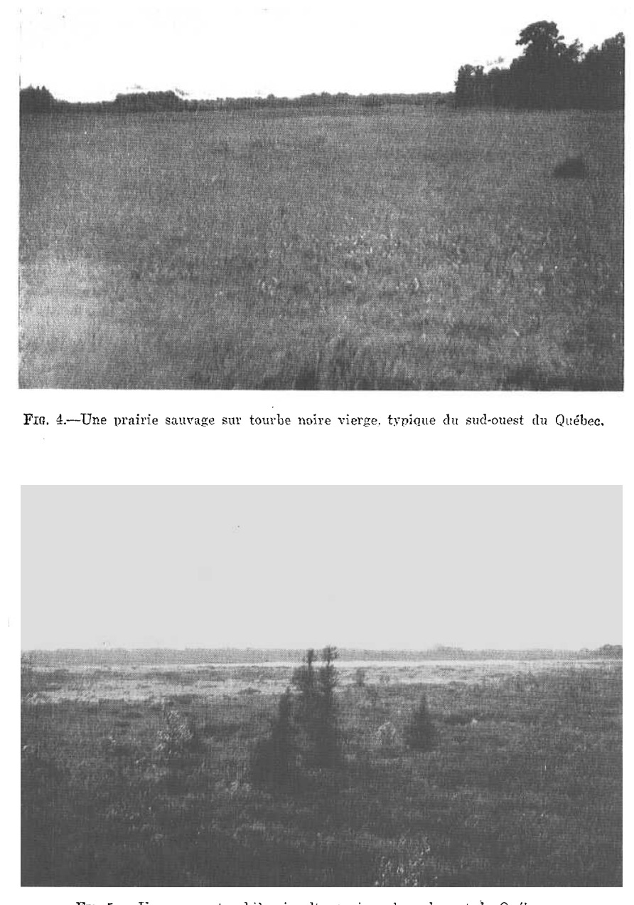
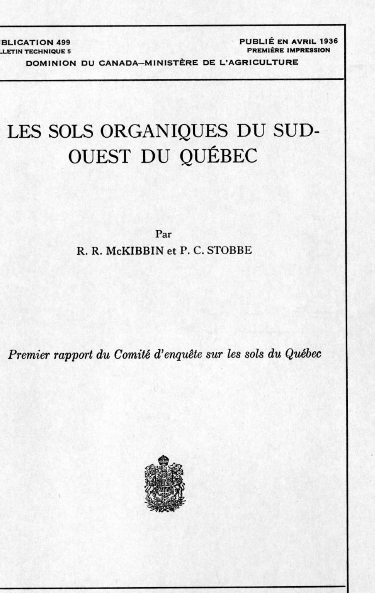
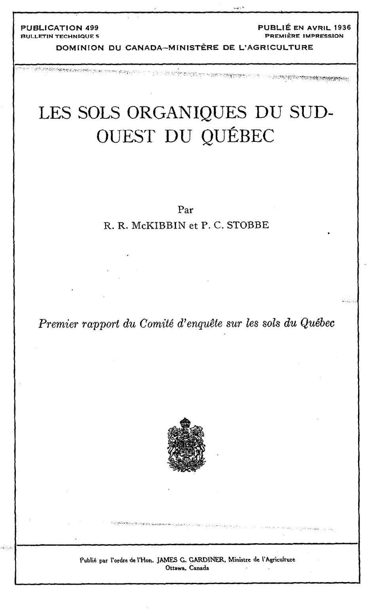
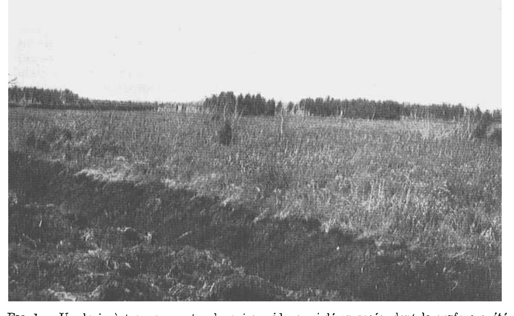
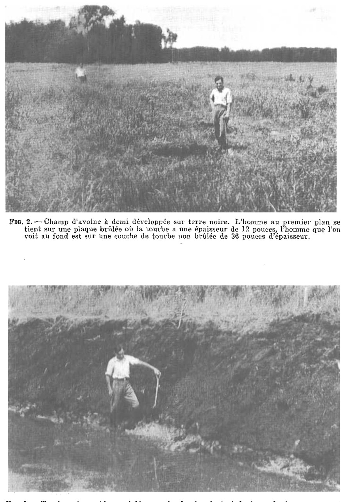

[Illustration photographique : Vaste étendue herbeuse plane avec une ligne d'arbres à l'horizon]

[Illustration photographique : Tourbière inculte parsemée de petits arbres rabougris et d'arbustes]
Agriculture et Agroalimentaire Canada (SISCan) — Transcription numérique haute fidélité
PUBLICATION 499
BULLETIN TECHNIQUE 5
PUBLIÉ EN AVRIL 1936
PREMIÈRE IMPRESSION
DOMINION DU CANADA—MINISTÈRE DE L'AGRICULTURE
Premier rapport du Comité d'enquête sur les sols du Québec

PUBLICATION 499
BULLETIN TECHNIQUE 5
PUBLIÉ EN AVRIL 1936
PREMIÈRE IMPRESSION
DOMINION DU CANADA—MINISTÈRE DE L'AGRICULTURE
Premier rapport du Comité d'enquête sur les sols du Québec

COMITÉ D'ENQUÊTE SUR LES SOLS DU QUÉBEC
| M. H. C. Bois | Dr. L. Ph. Roy (président) |
| M. J. H. Lavoie | M. J. E. Thériault |
| Dr E. S. Archibald | Dr E. S. Hopkins |
| M. M. B. Davis | M. L. E. Wright |
| Dr W. H. Brittain | Dr J. F. Snell |
| Dr R. R. McKibbin (secrétaire) | |
Le relevé des sols et les analyses de laboratoire nécessaires à la poursuite de cette enquête ont été effectués par MM. H. Brunelle, B. Cann, R. Cloutier, R. Gregg, J. Stephens, P. Stobbe, A. Thériault. MM. Cann et Stobbe ont pris part aux travaux en 1934 et 1935; MM. Gregg et J. E. Thériault en 1934 seulement. MM. Brunelle, Cloutier, A. Thériault et Stephens en 1935 seulement.
Nous désirons également reconnaître l'aide importante que nous ont prêtée les suivants: MM. P. N. Aphil, R. Charbonneau, F. Godbout, R. Richard, F. Ritchie, F. S. Lagacé, P. Lamarre, R. St. Amour, J. M. Talbot, L. E. Wright.
Les fonds nécessaires à la poursuite de cette enquête ont été fournis par le Ministère de l'Agriculture du Québec et par la Division des fermes expérimentales du Ministère fédéral de l'Agriculture. Le Collège Macdonald, qui était chargé de la direction technique des travaux, a fourni les bureaux et les moyens nécessaires de laboratoire.
VERSION FRANÇAISE
PAR C. E. MORTUREUX, B.S.A.
15689-1½
Personnel du Comité d’enquête sur les sols du Québec
Attestations
Index
Figure 1 — Un drain dans une tourbe grise semi-décomposée et brûlée à la surface
Figure 2 — Mauvais effets du brûlage de la surface
Figure 3 — Profil de la tourbe dans un sol argileux
Figure 4 — Prairie sauvage sur terre noire vierge
Figure 5 — Tourbière typique du sud-ouest du Québec
Neuf cartes en couleur.
On sait depuis longtemps qu'une étendue considérable de la région sud-ouest du Québec se compose de sols organiques, ou "terres noires ou grises", mais on manquait de renseignements précis à leur sujet, et l'enquête dont il est fait rapport dans ce bulletin a révélé leur étendue totale, la situation et les limites de chaque zone, la qualité, l'étendue cultivée et les pratiques de culture et de fertilisation. Ces renseignements et l'appréciation des ressources que présentent ces terres précieuses devraient en permettre le développement rationnel. Une culture plus intelligente de ces sols permettrait à leurs propriétaires d'en tirer un plus gros revenu.
Ce rapport contient une description des principaux sols de tourbe grise ou mousseuse (en anglais peat) et de tourbe noire ou "terre noire" (en anglais muck) que l'on trouve dans cette partie du Québec située sur la rive sud du St-Laurent et à l'ouest du Richelieu, ainsi que des cartes détaillées des huit grandes étendues de sols organiques qui se trouvent dans cette région, accompagnées d'une description complète de chacune. Il est fait des descriptions complètes d'un certain nombre d'autres régions, mais les cartes de ces régions n'ont pas été imprimées. Dans la partie du Québec couverte par cette enquête, plus de 50,000 acres de tourbe grise et noire dont l'épaisseur dépasse dix-huit pouces ont été indiquées sur la carte. Plus de 40,000 acres de ce total se trouvent dans un cercle d'un rayon d'environ douze milles, dans les comtés de Napierville, Châteauguay, Laprairie, St-Jean et Huntingdon-est. A l'intérieur de ce cercle se trouvent les zones ou secteurs suivants qui sont décrits et indiqués en détail dans ce rapport :
Toutes ces sept zones se trouvent à moins de 45 milles de Montréal, la plus grande ville du Canada, et 75 pour cent d'entre elles dans un rayon de 35 milles de ce marché. A Ste-Barbe, à l'extrémité ouest du comté de Huntingdon, près de la ville de Huntingdon et à environ 60 milles de Montréal, il y a une autre grande étendue tourbeuse de 10,000 acres environ.
Il y a aussi de petites tourbières grises et noires dans le voisinage de Montréal, dont les sols varient; il y en a d'excellents et d'autres n'ont aucune valeur.
Dans la carte de classification, qui montre sur une petite échelle les sols tourbeux mentionnés dans ce rapport, toutes les régions étudiées sont indiquées. Cette carte n'indique que la situation de chaque secteur, tandis que dans les huit cartes détaillées les variations de sols sont indiquées sur une échelle de deux pouces au mille.
Pour chaque région nous avons donné un exposé détaillé du mode actuel d'utilisation des sols. Actuellement la récolte principale est la pomme de terre; il s'en cultive plusieurs milliers d'acres. Il se cultive aussi beaucoup de céleri pour le marché d'été et d'automne sur les sols noirs du voisinage immédiat de Montréal. Actuellement, les principales régions de culture de la pomme de terre sont celles de Saint-Édouard, Saint-Isidore, Saint-Philippe et Napierville. La principale zone de culture du céleri est celle de Saint-Léonard de Port Maurice, dont les deux extrémités se trouvent dans la ville de Montréal, celle de l'ouest dans Ahuntsic, et celle de l'est dans Rosemont. La plus grande exploitation maraîchère, sous une même direction, est celle de Saint-Hubert; elle comprend 170 acres en laitue, oignons, carottes, céleri, épinards, betteraves et autres plantes potagères. Sur les petites étendues de terre noire de l'Ile Jésus et de l'Ile de Montréal, il se fait également un peu de culture maraîchère, tandis que sur les secteurs les plus éloignés de Montréal, on trouve des étendues considérables de foin, de grain et de pâturage.

Les quelques plantations faites dans ce district ont déjà donné de beaux résultats, mais il est évident que l'on pourrait faire encore mieux. Trois choses paraissent être nécessaires pour améliorer la qualité aussi bien que la quantité des produits obtenus sur ces sols magnifiques. Il faudrait d'abord recueillir des renseignements exacts, basés sur des recherches bien conduites, dans des conditions représentatives. Ces renseignements devraient couvrir toutes les phases de la production, de l'écoulement des produits, et de la conservation. Il faudrait ensuite communiquer ces renseignements aux cultivateurs au moyen d'une campagne systématique. Enfin, il s'agirait d'encourager la culture des récoltes maraîchères dans les régions les plus propres à cette culture.
Malheureusement, dans certaines parties des terres noires du voisinage de Montréal, des pratiques ont été suivies qui, dans bien des cas, ont réduit la valeur
de ces terres et des récoltes qu'on en tire. Mentionnons parmi ces mauvaises pratiques, le brûlage de la surface, l'emploi de chaux, l'emploi illimité de fumier de ferme, dans l'idée qu'il fournit aux terres noires les éléments dont elles ont besoin; l'emploi d'engrais chimiques dépourvus des éléments les plus nécessaires et contenant une surabondance d'éléments moins nécessaires et l'insuffisance des moyens répressifs contre les insectes nuisibles, les maladies des plantes sur le champ et en cave, le manque d'irrigation, l'ignorance des bonnes méthodes d'irrigation et de drainage, l'emploi de machines qui ne conviennent pas pour les sols tourbeux, les mauvaises pratiques de culture et la plantation de récoltes et de variétés mal adaptées. Ces choses ne sont pas énumérées par ordre d'importance et la liste n'en est pas non plus complète.
La région tourbeuse Sherrington-Sainte-Clothilde est de beaucoup la plus importante des régions étudiées dans ce bulletin au double point de vue de l'étendue et de la superficie des terres de haute qualité. Situées comme elles le sont dans une région bien définie, la plupart des grandes zones de terres noires de cette partie de la province sont groupées si près l'une de l'autre que l'on peut dire qu'au point de vue du développement elles forment une étendue à peu près intégrale.
Ce groupe de zones se trouve dans la partie la plus au sud de la province, dans un district où la culture des récoltes pour les conserves a pris un grand développement. Ces régions de terres noires n'ont été que peu ou point gâtées par des mauvaises pratiques, et il est probable qu'elles prendront un grand développement à l'avenir.
On suppose que les terres noires de cette partie de la province étaient autrefois, il y a bien des siècles, des lacs superficiell laissés après le retrait des eaux de la mer de Champlain. Ils étaient remplis d'eau stagnante et n'avaient pas d'émissaires libres. A mesure que l'eau s'évaporait de ces lacs, des plantes aquatiques commençaient à pousser sur leurs bords extérieurs. Dès que les plantes aquatiques couvraient la surface de l'eau, près des bords, les joncs et d'autres herbes de marais faisaient leur apparition. Quelques restes des plantes aquatiques se déposaient au fond et remplissaient graduellement le lac à partir des bords. A mesure que ce remplissage s'avançait vers le centre, des arbustes et des arbres, conifères ou décidus, poussaient le long des bords et suivaient graduellement les herbes de marais. La nature du sol sur les tertres ou plateaux voisins et la couche sous-jacente de sol minéral ont exercé une grande influence sur la nature de la végétation qui a formé ces gisements organiques. Les sols minéraux sur les tertres sont de nature calcaire. La pierre à chaux et le grès calcaire y sont très répandus. La chaux et les substances minérales que les eaux entraînaient dans le lac, et plus tard dans les sols organiques près des bords des plateaux, favorisaient la décomposition des substances organiques ainsi que la croissance des arbres et des arbustes à feuilles décidues. Les substances minérales étaient, pour la plupart, absorbées par les dépôts organiques avant d'avoir atteint le centre du lac, et c'est pourquoi la mousse de sphaigne, les linaigrettes et les autres espèces de plantes tolérantes à l'acide se sont établies au centre des lacs. Ces dernières espèces résistent beaucoup mieux à la décomposition que les espèces marécageuses poussant plus près des bords. En outre, les meilleures conditions d'égouttement près des bords et la proportion plus élevée de calcium dans la tourbe y favorisaient l'activité des micro-organismes du sol beaucoup plus qu'au centre des dépôts. C'est pourquoi des tourbières grises ou mousseuses se sont formées au centre de ces régions, tandis que des terres noires bien décomposées se formaient sur les bords.
Les suivants ont été pris en considération dans l'évaluation des différentes tourbes, grises et noires. Ces points n'ont pas nécessairement la même importance relative.

(a) Profondeur.—Une couche d'au moins quatre pieds d'épaisseur de terre noire ou grise est nécessaire pour faire un bon sol organique pour la culture maraîchère.
(b) Source de matière organique.—Les restes de bois et de laîches (carex) forment les meilleures terres noires et sont supérieurs aux laîches et à la mousse de sphaigne, seule ou en mélange.
(c) Egouttement.—Ici nous avons pris en considération les conditions actuelles, leur effet sur la qualité du sol, et la facilité avec laquelle ces terres peuvent être améliorées.
(d) Degré de décomposition.—Trois catégories ont été établies.
(1) Terre noire, sans déchets fibreux à la surface.
(2) Terre brune à rougeâtre, avec restes fibreux à la surface, se rapprochant de la tourbe grise.
(3) Tourbe grise, couverte de mousse.
(e) Composition chimique.—Des valeurs arbitraires ont été assignées dans l'interprétation de la signification de ces analyses chimiques. Comme les résultats complets de ces analyses sont donnés dans ce rapport, le lecteur peut leur assigner d'autres valeurs s'il le désire et en tirer ses propres conclusions. Nous avons établi trois subdivisions:
(1) Acidité et alcalinité, comprenant le pH, le besoin de chaux et le total de la matière minérale. Un pH dépassant 5.0, un besoin relatif de chaux de moins de 5,000 livres de CaO par acre, et une proportion totale de matière minérale variant entre 8.0 pour cent et 20 pour cent ont été considérés comme des indications d'un bon sol dans ces régions.
(2) N, P2O5 et SO3. On trouve généralement une proportion de 1.5 pour cent d'azote dans une bonne terre noire, tandis que les pourcentages de P2O5 et de SO3 varient beaucoup. Il peut y avoir un excès d'azote (N) et de SO3 dans ces terres noires. Des terres noires contenant moins de 0.5 pour cent de P2O5 ont été arbitrairement désignées comme pauvres en phosphore.
(3) CaO, K2O, Mn3O4 et MgO. Une teneur en calcium de plus de 3 pour cent est considérée comme bonne, tandis que les autres éléments varient beaucoup. La potasse est très faible dans tous les sols de cette région, indépendamment de la qualité qu'ils peuvent avoir. Les terres noires contenant moins de 1 pour cent de K2O, moins de 0.5 pour cent de MgO, et moins de 0.08 pour cent de Mn3O4, ont été arbitrairement considérées comme probablement pauvres dans l'élément en question.
(f) Le sol minéral dans le profil des terres noires a été considéré comme un facteur peu désirable, par exemple:—couches de sable ou mélanges de sable et d'argile. Des points ont été retranchés pour le brûlage excessif des sols.
(g) Pourcentage de terre défrichée.—Terres en culture ou terre arable en pâturage déjà cultivée.
(h) Facilité d'accès par chemin dur.—Ici l'évaluation est basée sur la facilité avec laquelle on peut se rendre d'un chemin à surface dure à toutes les parties d'un secteur.
Cette étendue de terre noire se trouve au sud-ouest de Montréal. La distance entre Sainte-Clothilde, qui est au centre de cette région, et le marché de Montréal, est d'environ 30 milles, c'est-à-dire qu'un voyage aller et retour au marché

peut être fait aisément par camion en demi-journée. Cette étendue est la plus grande de toutes celles qui se trouvent dans un rayon de 50 ou 60 milles de Montréal. Elle occupe le centre d'un certain nombre d'étendues plus petites, indiquées sur la carte générale. Les régions de Napierville, Saint-Edouard, Saint-Isidore, Saint-Philippe, Hemmingford et Saint-Blaise ne sont éloignées les unes des autres que de quelques milles; elles se relient presque en certains endroits à la région Sherrington-Sainte-Clothilde. Ceci signifie que les démonstrations et les expériences conduites dans le secteur Sherrington-Sainte-Clothilde seraient utiles à tous les cultivateurs des étendues voisines.
La culture maraîchère a fait quelque progrès dans cette région, limité, cependant, en grande partie au secteur de l'est, dans le comté de Napierville. (Voir secteurs "A" et "B" sur la carte). Ici les récoltes potagères les plus communes sont les pommes de terre, les oignons et les carottes; ailleurs, dans toutes les autres parties cultivées de la zone noire, les pommes de terre sont l'objet d'une grande culture. Les progrès de ce développement sont indiqués dans un rapport du Service de l'économie rurale (No 203 publié en 1933), du ministère de l'Agriculture de Québec, sur les engrais chimiques achetés par les cultivateurs de la province de Québec. Il s'est acheté plus d'engrais chimiques dans le comté de Napierville que dans tout autre comté de la province. En 1933, les producteurs des îles de Montréal et Jésus n'ont acheté, à eux tous, que 250 tonnes d'engrais chimiques de plus que ceux du seul comté de Napierville. En outre, l'augmentation dans la consommation d'engrais chimiques en 1933 par comparaison à 1932, a été plus forte dans Napierville que dans tout autre comté de la province. Il est évident que les cultivateurs ont appris à connaître la valeur des engrais, mais ils n'ont encore que des connaissances très imparfaites sur les bons moyens de culture et sur les engrais nécessaires, et il semble que l'on pourrait leur épargner beaucoup d'argent par des expériences soigneusement conduites. L'établissement de conserveries à Napierville, Saint-Rémi et Sainte-Martine est une preuve de l'intérêt que la population de ce district, qui est canadienne-française dans une proportion de 99 pour cent, porte aux produits agricoles. Les récoltes employées pour les conserves sont cultivées actuellement sur sols élevés, mais rien ne porte à croire que les récoltes obtenues sur sols noirs bien cultivés, ne pourraient également servir à la fabrication des conserves.
La région Sherrington-Sainte-Clothilde se trouve dans l'extrême sud de la province de Québec. Le climat convient mieux que celui des autres régions du Québec à la culture des récoltes maraîchères. L'élévation est assez faible (moins de 200 pieds au-dessus du niveau de la mer), mais la période sans gelées est relativement longue. Nous avons vu sur ces terres noires, à la fin de septembre 1934, des champs de blé d'Inde que la gelée n'avait pas encore touchés. L'altitude assez faible, par rapport au pays qui s'étend au sud de cette région, devrait permettre de résoudre les problèmes d'irrigation qu'il présente. Il y a aussi des émissaires pour l'égouttement, spécialement vers le Nord et l'Ouest.
Il y a une forte proportion de terre noire de bonne qualité dans cette région. La couche est profonde presque partout; les couches peu profondes (2 à 4 pieds d'épaisseur) ne sont que relativement peu étendues. Rappelons ici qu'au cours de cette enquête nous n'avons inscrit sur la carte que les terres dont la profondeur dépasse 1½ pieds de sol bon pour la culture maraîchère. L'état de décomposition de la terre noire est généralement très bon, à partir d'une profondeur de deux pieds. Une grande partie du sol de cette région est dans un état de semi-décomposition. Si l'égouttement était meilleur, on peut croire que la qualité de cette tourbe semi-décomposée serait grandement améliorée.
Ce secteur se trouve dans la partie nord-est de ce district, principalement dans le comté de Napierville. Il comprend toute la terre noire à l'est du chemin Gas-
perin et au nord du chemin Gasperin-Sherrington. C'est probablement le district le plus peuplé. Il s'y cultive beaucoup de légumes, comme les pommes de terre, les oignons et les carottes, ainsi que du grain comme l'avoine et le sarrasin. Toute cette partie couvre 2,200 acres de bonne terre noire. La plus grande partie est défrichée; il ne reste que quelques petits bois, ne dépassant pas une étendue de 300 acres. La terre défrichée n'est pas encore toute en culture, cependant; une partie est en pacage permanent, en pauvre état. La tourbe de cette étendue est de bonne qualité; elle est généralement bien décomposée sur une profondeur de deux ou trois pieds à partir de la surface, et moins bien décomposée par-dessous. Il n'y a pas du tout de tourbe grise brute dans cette région. Toute cette terre noire provient principalement de laîches et d'arbres.
La profondeur générale dépasse quatre pieds, et dans la plupart des endroits, elle atteint 6 et même 8 pieds, sauf sur l'extérieur; vers les élévations de terrain (tertres), elle devient moins profonde. Dans la plupart des cas la profondeur augmente très rapidement à mesure que l'on s'éloigne des tertres.
Les trois étendues isolées de terre noire mesurent respectivement 300 acres et deux 50 acres. Celles-ci sont peu profondes. La terre noire y atteint rarement une profondeur de 4 pieds ou plus. Elle varie généralement entre 2 et 3 pieds. Ces trois tourbières isolées ont été soumises à un brûlage exagéré il y a bien des années, ce qui explique la mince couche de terre. Les échantillons recueillis fournissent une bonne indication des conditions de la région.
Il comprend l'étendue située dans le comté de Napierville ainsi que toute la terre noire le long et au sud du chemin de Sherrington, au total, 2,140 acres. Cette terre n'est pas toute en culture, il s'en faut de beaucoup. Le long du chemin de Sherrington une large bande d'environ 600 ou 650 acres est soumise à une culture assez intense. Elle produit principalement des pommes de terre, des oignons, des carottes, de l'avoine et du sarrasin. Les plantes potagères sont généralement en bon état, et l'on ne voit que rarement des champs affectés par la gale. Cette tourbe est bien décomposée et a presque partout une épaisseur de plus de quatre pieds. Elle est très semblable à celle de la zone A. Les échantillons 59 et 60 sont typiques de cette région.
La partie immédiatement au sud de cette bande de 650 acres le long du chemin de Sherrington est dans un état de décomposition moins avancé. Cette partie du secteur B couvre environ 1,000 acres. Une grande partie de cette étendue est encore boisée ou n'a été défrichée que récemment. L'étendue cultivée est principalement consacrée à la culture des pommes de terre et du grain, et aux pâturages. Les récoltes de pommes de terre sont généralement fortes et propres, mais il y a, par-ci par-là, des champs affectés de gale. L'avoine atteint une bonne hauteur, mais elle a une tendance à verser avant de se remplir. Les pâturages sont dans un pauvre état; la plupart sont mamelonnés et n'ont qu'une pauvre couverture de gazon. Comme nous disions plus haut, la tourbe dans cette étendue de 1,000 acres est moins bien décomposée; on trouve presque toujours des restes de laîches non décomposés et de mousse à partir de la surface. Les échantillons 50 et 51 représentent ces 1,000 acres. Ce sol est plus acide que celui des 600 acres qui se trouvent près du chemin de Sherrington. Une étendue de 200 à 300 acres, marquée sur la carte, se compose de tourbe grise avec sa flore caractéristique. L'échantillon 49 représente cette étendue de tourbe grise.
Le long des limites sud et sud-est de cette zone B, sur une superficie d'environ 400 acres, la tourbe est dans un meilleur état de décomposition qu'ailleurs; elle est semblable à la terre noire que l'on trouve le long du chemin de Sherrington. La plus grande partie de ce dernier secteur de 400 acres est défrichée et en culture.
Les échantillons 46, 47 et 48 sont typiques du sol de ce secteur de 400 acres.
La pièce isolée à l'extrémité est contient de 300 à 350 acres. Presque toute cette étendue est en bois ou en pacage permanent; très peu est en culture.
La tourbe en général est dans un pauvre état de décomposition; une bonne partie est de la tourbe grise, non décomposée. La tourbe dans cette étendue de 300 acres n'est pas très profonde en général; elle dépasse rarement 4 pieds, variant généralement entre 2 et 3 pieds.
Au-dessus du sol minéral, on trouve presque invariablement une couche brune semblable à de la gelée, que l'on peut classer comme tourbe grise “ sédimentaire ”. L'échantillon 61 représente le sol de ce secteur.
Ce secteur se trouve au centre de la région Sherrington-Sainte-Clothide et couvre de 3,100 à 3,200 acres.
Il n'y a pas de terre cultivée dans ce secteur. Toute l'étendue est boisée ou a été défrichée dernièrement et sert de pâturage ou de prairie à foin. Il y a, le long de la rivière, une étendue de 300 à 400 acres qui n'a peut-être jamais été en bois. On y coupe du foin pendant les années de sécheresse. La végétation est très luxuriante dans cette partie, le long de la rivière, mais elle se compose principalement d'herbes de marécages n'ayant qu'une pauvre valeur alimentaire. L'échantillon 89 représente ce sol de prairie.
A peu près la moitié de la zone “C” est recouverte de tourbe de sphaigne avec sa flore caractéristique. Le développement de la tourbe est centralisé en trois endroits, indiqués sur la carte. Au point de vue maraîcher, cette tourbe est actuellement sans valeur. Elle est représentée par les échantillons 56, 88 et 129.
Dans les parties qui relient les tourbières grises, la tourbe est médiocrement décomposée. La décomposition est meilleure à mesure que l'on s'éloigne des tourbières grises. Les échantillons 87, 100 et 92 sont typiques de cette tourbe semi-décomposée.
Le long de la rivière, la tourbe est généralement très bien décomposée jusqu'à une profondeur de 2 à 3 pieds, mais ce secteur est exposé aux inondations et ne peut être employé comme prairie que pendant les années de sécheresse.
Toute la zone “C” est mal égouttée, le niveau de l'eau est toujours élevé. Si l'égouttement était améliorée, une partie de la tourbe semi-décomposée entre les tourbières grises pourrait être cultivée.
La profondeur du dépôt de tourbe grise est toujours considérable dans ce secteur “C”; elle descend peut-être plus bas que dans toutes les autres parties de la région.
Ce secteur se trouve sur le bord de l'étendue de terre noire du comté de Châteauguay, au nord, à l'ouest de Gasperin. Il couvre une étendue de 1,300 acres. Trois à quatre cents acres le long de l'extrémité nord et le long du chemin allant de Sainte-Clothide à Holton Station sont en culture. On y cultive surtout l'avoine, le foin et les pommes de terre. Les récoltes de pommes de terre sont en bon état, les rendements sont bons et les tubercules propres, sans gale.
La plus grande partie de cette étendue est boisée ou vient d'être défrichée. Les échantillons 90 et 91 représentent les sols de cette zone.
Le long de la rivière, une étendue d'environ 200 acres est défrichée; elle n'a peut-être jamais été fortement boisée et elle sert de prairie pendant les années sèches.
La terre noire sur toute l'étendue de la terre en culture est très bien décomposée et généralement bien égouttée. Elle est très semblable à la terre noire du secteur “A”. Dans le secteur boisé au nord de la rivière, l'état de la tourbe varie de semi-décomposé à bien décomposé. L'égouttement n'est généralement pas aussi bon, ce qui est en partie là cause du mauvais état de décomposition et du fait que la terre n'a pas été défrichée. Dans la partie boisée au sud de la rivière, la tourbe est assez bien décomposée; elle est représentée par les échantillons 102 et 121. Du côté est, où elle se rapproche du secteur “C”, elle n'est que semi-décomposée. L'égouttement au sud de la rivière n'est pas très bon, et la terre
est collante. Dans la petite partie isolée à l'ouest du chemin Sainte-Clothilde-Holton, représentée par l'échantillon 101, la tourbe est mal décomposée et relativement peu profonde. La tourbe de la partie basse le long de la rivière est bien décomposée dans les deux premiers pieds de la surface mais elle ne peut être mise en culture actuellement à cause de l'inondation.
Sauf pour la petite étendue isolée à la limite ouest, la profondeur de tourbe du secteur “D” est généralement très grande (de 6 à 14 pieds).
Ce secteur se trouve dans l'angle sud-est du comté de Châteauguay et l'angle nord-est du comté de Huntingdon. Il couvre une superficie de 2,000 acres de terre noire, dont 500 à 600 acres sont en culture. Il s'y cultive beaucoup de pommes de terre. C'est ici que les échantillons 125 et 127 ont été prélevés. La plus grande étendue cultivée se trouve près du coin d'intersection des lignes de trois comtés; c'est la continuation de la partie défrichée et cultivée du secteur “B”. L'échantillon 95 représente cette partie. La moitié de la terre non cultivée est boisée ou défrichée, tandis que l'autre moitié se compose d'une prairie marécageuse le long du ruisseau Norton.
La tourbe à la surface de la partie cultivée est très bien décomposée, de couleur noire et bien égouttée. Dans les prés à l'extrémité nord de ce secteur, la tourbe de surface est assez bien décomposée, sauf à l'endroit où elle touche à la tourbière du secteur “C”, où la décomposition est peu avancée. Dans cette terre boisée ou défrichée, les conditions d'égouttement sont pauvres. Dans certains cas il est impossible de labourer la terre de bonne qualité qui vient d'être défrichée, à cause de l'excès d'humidité. L'échantillon 96 représente cette terre. Les parties boisées près du chemin de fer du Grand Trunk et le long du ruisseau Norton sont généralement un peu mieux égouttées et en assez bon état de décomposition. Les échantillons 126 et 113 représentent cette partie du secteur “E”. L'étendue boisée isolée au sud de Barrington n'est pas très bien égouttée. Ici la tourbe est bien décomposée et très profonde. Il a été trouvé un peu de marne de coquillage à l'extrémité nord-ouest de ce secteur. Les échantillons 123 et 124 ont été prélevés sur cette étendue.
La tourbe des terres découvertes le long de la rivière n'est pas en aussi bon état que celle des terres basses des secteurs “C” et “D”. Elle est cependant assez bien décomposée, quoique collante et souvent humide à cause de l'égouttement insuffisant. Les échantillons 118 et 128 ont été prélevés sur la terre basse du secteur “E”.
La profondeur de la tourbe du secteur “E” est bonne, sauf à l'extrémité ouest où elle s'amincit beaucoup.
Ce secteur, qui est indiqué sur la carte, se trouve à l'ouest de “E”, au sud de “C”, à l'est de “H” et au nord de “G”.
Il couvre une superficie de 2,200 acres, dont environ 1,000 sont en culture. On y cultive surtout les pommes de terre, l'avoine et le foin. La plus grande partie de ce qui reste est boisée ou en broussailles. Les prairies marécageuses le long du ruisseau Cranberry sont étroites ou disparaissent parfois complètement jusqu'à ce que la rivière atteigne la voie ferrée du Grand-Tronc. Au nord de la voie ferrée il y a une prairie marécageuse de 100 ou 150 acres.
La tourbe sur l'étendue de 1,000 acres de terre cultivée est bien décomposée et de qualité supérieure. Elle est représentée par les échantillons 89, 120, 119, 122 et 99. La profondeur augmente rapidement à mesure que l'on s'éloigne des tertres. L'égouttement est bon en général, sauf dans le voisinage de la rivière, qui est inondée dans les années pluvieuses.
Dans la partie boisée à l'extrémité nord, la tourbe n'est que semi-décomposée et mal égouttée. La qualité s'améliore à mesure que l'on se rapproche de la partie cultivée dans le sud, qui est représentée par l'échantillon 94. Dans les parties éparpillées boisées et défrichées, la tourbe est dans un état qui va do semi à bien décomposé, comme on peut le voir par l'échantillon 105. Quelques secteurs isolés nouvellement défrichés ont été très brûlés le long des élévations de terrains (tertres) ; cependant, l'étendue brûlée n'est pas très grande.
Les prés marécageux sont très mal égouttés. Le cours sinueux du ruisseau Cranberry retarde l'écoulement de l'eau et les rives tourbeuses s'effondrent dans l'eau. Les échantillons 93 et 97 ont été prélevés sur les prés marécageux.
Ce secteur se trouve à l'extrémité sud de la région, au sud de “F” et il a une superficie de 1,400 acres.
Presque tout ce secteur est boisé et environ 250 acres seulement sont en culture. La terre cultivée, qui est morcelée en petits champs est très bien décomposée et de haute qualité. Tout le reste est boisée ou en broussailles. Il y a cinq parties distinctes. La plus grande d'entre elles, au coin nord-ouest du secteur, est représentée par les échantillons 112, 114 et 115. La tourbe de cette région est bien décomposée et l'égouttement est assez bon. Presque partout la profondeur dépasse 6 pieds.
La partie du secteur “G” qui vient deuxième au point de vue de l'étendue est représentée par les échantillons 109 et 110. La tourbe de toute cette partie est bien décomposée et d'une profondeur passable, 4 pieds et plus.
Les trois pièces isolées qui restent sont petites et ont des superficies respectives de l'est à l'ouest, de 140, 130 et 20 acres seulement. A peu près la moitié de la pièce d'est est défrichée. La tourbe y est bien décomposée et assez bien égouttée, sauf sur le bras sud, qui est très marécageux. L'échantillon 117 est typique de la bonne tourbe de cette région.
La tourbe des deux autres pièces isolées est bien décomposée, mais de peu de profondeur, atteignant rarement 6 pieds.
L'échantillon 116 a été prélevé dans le centre d'une des trois pièces isolées au sud du secteur “G”.
Ce secteur se trouve à l'extrémité ouest de toute la région, et couvre près de 3,000 acres. Sur ce nombre 250 seulement sont en culture. Le reste est couvert de bois et de souches.
Une partie considérable de l'étendue boisée (600 à 800 acres), indiquée sur la carte, est de la tourbe de sphaigne, représentée par l'échantillon 108. Elle est semblable en tous points à la tourbe grise de la région “C”. L'égouttement de cette tourbière est pauvre. La tourbe d'une étendue avoisinante de même dimension est dans un état de semi-décomposition, avec des restes de bois et de laiches à la surface; le sous-sol contient des restes de laiches et de mousse de sphaigne. La tourbe est collante et le niveau d'eau élevé en raison d'un drainage insuffisant. L'échantillon 111 représente cette tourbe. La tourbe des bords extérieurs, vers le plateau, est dans un assez bon état de décomposition. Le degré de décomposition diminue graduellement vers le centre. Le niveau de l'eau sur les bords et beaucoup plus bas, l'égouttement est assez bon.
La profondeur des tourbes noire et grise de tout ce secteur est partout considérable et dépasse généralement 8 pieds. Quatre échantillons, 103, 104, 106 et 107 ont été prélevés sur les parties mieux égouttées et assez bien décomposées à l'ouest et au nord du secteur “H”.
| Secteur | Profondeur du sol (a) |
Source de matière organique (b) |
Egouttement actuel ou possible (c) |
Degré de décomposition (d) |
Composition chimique (e) |
Calcium, potasse, magnésie, manganèse (e.3) |
Sol minéral mélangé à la tourbe et « brûlis » (f) |
Tourbière défrichée (g) |
Facilité d'accès par chemin dur (h) |
|
|---|---|---|---|---|---|---|---|---|---|---|
| Rapports d'acidité (e.1) |
Azote, soufre (e.2) |
|||||||||
| A........... | 8 | 10 | 8 | 10 | 10 | 7 | 5 | 9 | 9 | 10 |
| B........... | 8 | 7 | 6 | 7 | 6 | 6 | 4 | 9 | 5 | 8 |
| C........... | 10 | 4 | 3 | 3 | 3 | 5 | 3 | 9 | 1 | 1 |
| D........... | 8 | 8 | 7 | 7 | 6 | 6 | 5 | 9 | 4 | 8 |
| E........... | 8 | 8 | 6 | 8 | 10 | 6 | 5 | 7 | 5 | 6 |
| F........... | 7 | 9 | 6 | 9 | 10 | 6 | 6 | 8 | 4 | 7 |
| G........... | 7 | 9 | 7 | 9 | 7 | 6 | 5 | 9 | 2 | 6 |
| H........... | 8 | 6 | 5 | 4 | 6 | 6 | 4 | 8 | 1 | 4 |
Dix points ont été accordés à un secteur où la profondeur des tourbes dépasse partout quatre pieds. Dans le secteur “A”, 500-600 acres n'ont que de 2 à 4 pieds de profondeur; c'est pourquoi il n'a été accordé que huit points à cette partie dans son ensemble. Cette tourbe moins profonde se trouve dans les trois pièces isolées indiquées sur la carte, et le long des tertres, spécialement des bandes de terre noire au nord et à l'est.
Le secteur “B” a reçu 8 points sur 10, parce qu'il a été trouvé de la tourbe moins profonde dans la partie isolée à l'est et le long des tertres, spécialement au coin sud-est.
“C” a reçu le total des points pour la profondeur. Les tourbes noire et grise de cette partie sont profondes sur toute l'étendue.
“D”. La tourbe sur les bords extérieurs de ce secteur, spécialement au nord et au nord-est ainsi que sur la partie isolée à l'ouest, n'a qu'une profondeur de 2 à 4 pieds; il n'a donc été accordé que 8 points à ce secteur dans son entier.
“E”. Huit points ont été donnés à ce secteur parce que la tourbe à l'extrémité sud, le long de la rivière et près des tertres, n'a qu'une épaisseur de 2 à 4 pieds.
“F”. Ce secteur n'a reçu que sept points pour la profondeur parce qu'un grand nombre de tertres y sont entourés de tourbe n'ayant que de 2 à 4 pieds de profondeur et que des plaques de cette tourbe mince se trouvent dans les bois le long de la voie ferrée du Grand-Tronc.
“G”. Une bonne partie de la tourbe qui se trouve dans les parties isolées au sud de ce secteur n'a que de 2 à 4 pieds d'épaisseur. Il a été trouvé également un peu de cette mince tourbe le long des bandes étroites de terre noire dans les parties les plus grandes de tourbière et c'est pourquoi le secteur “G” n'a reçu dans son entier que sept points pour la profondeur.
“H”. Ce secteur a reçu 8 points pour la profondeur. Il y a de la tourbe mince (de 2 à 4 pieds de profondeur) le long du chenal étroit au nord-est et le long des tertres extérieurs de ce secteur.
Un secteur dans lequel la tourbe provient de restes de bois et de laîches a reçu 10 points.
“A”. Sur la base qui précède, le secteur “A” a reçu le total des points.
“B”. Ce secteur contient une étendue considérable dans laquelle les matériaux formateurs de tourbes grise et noire se composent de restes de laîches (carex) et de mousse, et il n'a donc reçu que 7 points pour l'origine de la matière organique. Le carex et la mousse sont trouvés dans le champ isolé à l'est ainsi que dans la tourbière marquée sur la carte et aux alentours.
“ $\mathrm{C}$ ”. La plus grande partie de cette étendue se compose de tourbes grise et noire, principalement composées de laîches et de mousse de sphaigne. Sur cette base, il n'a reçu que 4 points.
“ $\mathrm{D}$ ”. Ce secteur a reçu 8 points pour l'origine de la matière organique; il a été déduit 2 points parce que les carex et la mousse dominent dans les tourbes grise et noire de l'étendue isolée à l'ouest et dans la partie est des bois au sud de la rivière.
“ $\mathrm{E}$ ”. Des restes de carex et de mousse ont été trouvés en grande quantité dans la partie nord de ce secteur et il a reçu 8 points sur 10 pour l'ensemble.
“ $\mathrm{F}$ ”. La majeure partie de la tourbe noire dans cette région est formée de restes d'arbres et de laîches (carex). On a trouvé quelques restes de mousse et de carex dans la partie est de ce secteur et c'est pourquoi il n'a reçu que 9 points pour l'origine de la matière organique.
“ $\mathrm{G}$ ”. Il n'a été trouvé que rarement des restes de mousse dans ce secteur et 9 points ont été accordés.
“ $\mathrm{H}$ ”. Un gros pourcentage de la terre dans ce secteur se compose de tourbe de mousse de sphaigne et la tourbe noire qui entoure cette région de tourbe grise se compose de carex et de mousse. Ce secteur n'a donc reçu que 6 points dans son entier pour l'origine de la matière organique.
Une région actuellement bien égouttée recevrait 10 points. Nous avons tenu compte également, en accordant les points, de la facilité avec laquelle l'égouttement pourrait être amélioré.
“ $\mathrm{A}$ ”. Sur la base qui précède, le secteur “ $\mathrm{A}$ ” a reçu 8 points. Le drainage en général est assez bon. Il serait facile d'améliorer une partie des sols mal égouttés de cette étendue en curant et en approfondissant quelques-uns des petits fossés ou en en creusant de nouveaux.
“ $\mathrm{B}$ ”. L'étendue cultivée dans ce secteur est assez bien égouttée. Cependant, un meilleur égouttement serait nécessaire dans un secteur de tourbe grise, plus pauvre, et ceci améliorerait sans doute l'état et la qualité de la terre noire qui entoure la tourbière. Il n'a été accordé que 6 points à ce secteur pour l'égouttement.
“ $\mathrm{C}$ ”. Tout le secteur “ $\mathrm{C}$ ” est très mal égoutté actuellement et un système de drainage élaboré serait nécessaire pour améliorer cet égouttement. Il faudrait probablement abaisser le niveau de toute la rivière. Prenant ces points en considération, nous n'avons pu donner que 3 points pour l'égouttement de ce secteur.
“ $\mathrm{D}$ ”. Quoique la terre cultivée dans ce secteur soit assez bien égouttée, il serait nécessaire de creuser un bon nombre de fossés latéraux et tout probablement d'abaisser le niveau du lit de la rivière au pont de Sainte-Clothilde pour drainer la plus grande partie de la terre boisée et empêcher que les parties plates du long de la rivière ne soient inondées. Il a été accordé 7 points à ce secteur pour l'égouttement.
“ $\mathrm{E}$ ”. Le plus gros de la terre cultivée est actuellement bien égoutté. Cependant, l'extrémité nord de ce secteur aurait besoin de travaux considérables sous ce rapport. Pour améliorer l'égouttement de la plus grande partie de l'étendue qui reste, il serait nécessaire d'abaisser le lit de la rivière et de creuser des fossés latéraux. La tourbière isolée ne pourrait être cultivée que si elle est drainée. Il n'a été accordé que 6 points à ce secteur pour les conditions d'égouttement.
“ $\mathrm{F}$ ”. L'extrémité est de ce secteur aurait grand besoin d'être drainée. Il est tout probable qu'il sera nécessaire d'abaisser le lit de la rivière pour améliorer l'égouttement du reste de cette étendue. Ce secteur a reçu 6 points pour les conditions d'égouttement.
“ $\mathrm{G}$ ”. Au moment où cet examen a été fait en septembre, la tourbe noire dans ce secteur était en général assez sèche. Comme presque toute l'étendue est en bois et qu'il n'y a que très peu de drains actuellement, nous croyons qu'il serait
15689-2
nécessaire d'en creuser d'autres si la terre est défrichée. C'est pourquoi il n'a été donné que 7 points sur 10 à ce secteur pour les conditions d'égouttement.
“H”. La grande tourbière de ce secteur est très mal égouttée, ce qui affecte la qualité de la tourbe noire dans la région avoisinante. Il n'y a que très peu de fossés de drainage dans tout le secteur boisé. Un bon égouttement de ce secteur exigerait beaucoup de travail et c'est pourquoi il n'a été donné que 5 points sur 10.
Le total des points accordés à un secteur où la tourbe est bien décomposée à la surface serait de 10 points.
“A”. La tourbe noire de ce secteur est très bien décomposée et l'on n'y trouve que rarement des restes de carex près de la surface. Il a été accordé le total des points à ce secteur pour le degré de décomposition de la tourbe. Il est probable que le bon égouttement et la bonne culture sont dans une grande mesure la cause du bon état de décomposition de la tourbe noire dans ce secteur.
“B”. Ce secteur n'a reçu que 7 points pour le degré de décomposition à cause de l'étendue de tourbe grise et mousseuse et du mauvais état de décomposition de la tourbe noire.
“C”. La plus grande partie de ce secteur se compose de tourbe grise ou de tourbe noire mal décomposée, entre les régions de tourbe grise. Il n'y a que très peu de tourbe noire bien décomposée le long de la rivière. Il n'a donc été donné que 3 points pour le degré de décomposition.
“D”. La tourbe dans le secteur “D” est assez bien décomposée, sauf l'étendue isolée à l'ouest et le secteur au sud de la rivière.
“E”. Dans le secteur “E” toute la tourbe est assez bien décomposée, sauf dans la partie nord. Ici la décomposition n'est pas très bonne. L'ensemble de ce secteur a reçu 8 points.
“F”. A l'exception de l'extrémité est, la tourbe noire dans cette partie est bien décomposée et il a été accordé 9 points.
“G”. La tourbe noire dans ce secteur est en général bien décomposée et il a reçu 9 points sur 10. Il y a cependant quelques plaques éparpillées de tourbe noire semi-décomposée seulement.
“H”. Le plus gros de ce secteur se compose de tourbe grise et de tourbe noire semi-décomposée; c'est pourquoi il n'a pu être donné que 4 points pour le degré de décomposition de la tourbe noire dans le secteur “H”, dans l'ensemble.
(1) Rapports de l'acidité — pH, besoin relatif de chaux et matière minérale totale. — Un secteur dont les sols ont un pH supérieur à 5.0; un besoin relatif de chaux inférieur à 5,000 livres de CaO par acre, et une quantité totale de matière minérale variant entre 8 pour cent et 20 pour cent, a reçu 10 points.
“A”. Ce secteur a reçu le total des points sur la base qui précède.
“B”. Trois échantillons de ce secteur, provenant de tourbe grise et de tourbe noire semi-décomposée étaient trop acides (pH inférieur à 5.0), avaient une trop faible proportion de matière minérale totale (inférieure à 8 pour cent) et un trop grand besoin de chaux. Il n'a donc été accordé que 6 points sur 10 à ce secteur.
“C”.—Trois échantillons de ce secteur étaient très acides, avaient un très grand besoin de chaux, et étaient d'une faiblesse anormale en ce qui concerne la matière minérale totale. Ces échantillons provenaient d'endroits que l'on disait être pauvres à tous les autres points de vue. Il n'a donc été accordé que 3 points sous cet en-tête à ce secteur, au total.
“D”.—Un échantillon provenant de la partie extrême ouest est trop acide, a trop peu de chaux et de matière minérale, tandis qu'un autre échantillon venant des bois au sud de la rivière est plutôt faible en matière minérale totale et a un grand besoin de chaux. Six points ont été accordés au secteur
“D” au total. Les données de l’examen sur place et les analyses pour le pH, le besoin de chaux et la matière minérale totale concordent assez bien.
“E”.—Ce secteur a reçu la totalité des points sous cet en-tête.
“F”.—Ce secteur a reçu la totalité des points sous cet en-tête.
“G”.—Un échantillon de ce secteur était trop acide, avait un trop grand besoin de chaux et une trop faible teneur en matière minérale totale. Plusieurs des autres échantillons étaient assez faibles en chaux. Sept points seulement ont été accordés à ce secteur.
“H”.—Les échantillons provenant de cette tourbière et de son voisinage immédiat étaient trop acides, trop faibles en matière minérale et avaient un trop grand besoin de chaux. Six points seulement ont été accordés à ce secteur.
(2) Azote, Phosphore et Soufre.—Comme nous l’avons fait remarquer, la proportion totale d’azote et de soufre de tous ces sols tourbeux est très élevée, en dehors de leur qualité à d’autres points de vue. Dans ces conditions, il est probable que ces éléments sont dans bien des cas, présents en trop grande quantité pour constituer un sol bien équilibré. La teneur en phosphore et en soufre varie beaucoup. Il n’existe pas encore de preuve directe relativement à cette région; nous avons assigné des valeurs arbitraires aux différents éléments, en nous basant sur l’expérience acquise antérieurement. Le total ou presque des points a dû être accordé pour la teneur totale en N et en SO3 dans bien des cas, et des déductions ont dû être faites pour la teneur en P2O5 à cause du pourcentage relativement faible en général.
Il est à noter que les sols tourbeux sont très légers, et que de gros pourcentages, basés sur le poids, sont nécessaires pour constituer un poids spécifique de l’élément dans la quantité qui peut être nécessaire pour l’emploi de la récolte.
“A”.—Quoique la proportion d’azote dans tous les échantillons provenant de ce secteur dépasse 1.5%, il a dû être fait des déductions pour le P2O5. Un seul des échantillons avait une teneur de P2O5 de 0.5%. Sept points ont donc été accordés à ce secteur.
“B”.—Un échantillon du secteur “B” était faible en N, tandis que la teneur en P2O5 variait de 0.043% à 0.523%. Il n’a été accordé que 6 points sur 10 à ce secteur sous cet en-tête, au total.
“C”.—Les pourcentages de P2O5 étaient considérablement plus faibles que dans les échantillons provenant des autres secteurs, et il n’a été accordé que 5 points à ce secteur, quoique la teneur en azote soit élevée.
Tous les autres secteurs, savoir “D”, “E”, “F”, “G”, et “H”, ont reçu 6 points sur 10 pour N, P2O5 et SO3. Les déductions dans tous les cas ont été faites pour la faible proportion de P2O5.
(3) Calcium, Potasse, Magnésie, et Manganèse.—Les valeurs arbitraires représentant les pourcentages totaux de ces éléments, au-dessous desquels un sol tourbeux était considéré comme défectueux, ont été données précédemment.. Il suffit de jeter un coup d’œil sur les tableaux pour avoir la certitude que tous les sols tourbeux sont pauvres en K2O et en Mn3O4. La proportion de CaO dans tous les meilleurs sols est très bonne, tandis que le pourcentage de MgO varie considérablement. Les faibles valeurs données au tableau pour ces éléments sont dues principalement au manque de potasse et de manganèse.
“A”.—La teneur en chaux de tous les échantillons de ce secteur est assez élevée, sauf pour deux sous-sols où elle est juste au-dessous de la limite établie. La teneur en MgO dans la moitié des échantillons est inférieure à 0.5%, tandis que celle de la potasse est faible dans tous les échantillons, et celle du manganèse dans tous moins un. Il n’a été accordé que 5 points pour ce secteur au total sous cet en-tête.
“B”.—Ce secteur n'a reçu que 4 points pour les éléments minéraux. Deux échantillons étaient extrêmement pauvres en chaux, tandis que tous les échantillons manquaient de potasse et de manganèse.
“C”.—La moitié seulement des échantillons provenant de ce secteur ont une teneur en chaux supérieure à 3% et presque tous manquent de tous les autres éléments. Il n'a donc pu être accordé que 3 points à ce secteur dans l'ensemble.
“D” et “E”.—Ces deux secteurs ont reçu 5 points pour les éléments minéraux. La teneur en chaux de tous les échantillons sauf un provenant du secteur “D”, est très bonne. La plupart des échantillons contiennent une quantité raisonnable de magnésie.
“F”.—Tous les échantillons provenant de ce secteur sont riches en chaux et un seul échantillon est pauvre en magnésie, tandis que la potasse et le manganèse sont faibles dans tous. Ce secteur, dans l'ensemble, contient plus de substances minérales que tout autre secteur et c'est pourquoi il a reçu 6 points.
“G”.—Un seul sous-sol de ce secteur avait une proportion de CaO inférieure à 3%, tandis que la moitié des échantillons avaient un pourcentage de MgO inférieur à 0.5%. Ce secteur n'a reçu que 5 points dans l'ensemble.
“H”.—Un tiers des échantillons de ce secteur était très faible en chaux et la moitié était pauvre en magnésium. Tous étaient pauvres en potasse et en manganèse. Ce secteur a reçu 4 points dans l'ensemble.
(f). Sols minéraux dans les profils de tourbe et degré de brûlage.
On trouve parfois, mélangées à cette tourbe, de petites quantités de sols minéraux, généralement le long des lits des rivières où le sous-sol minéral (ordinairement du sable) a été transporté par l'eau, ou vers les bords, spécialement dans les bras et les terres où la tourbe n'est que superficielle et où le sol minéral a été apporté par les vents ou par l'eau. Une proportion totale de matières minérales (20% et plus) est une bonne indication de la présence de sols minéraux. Dans quelques cas où la tourbe a été fortement brûlée, laissant des trous profonds, exposant des pierres et des roches, et où la tourbe bien décomposée a été brûlée, exposant la tourbe grise, des points ont été enlevés pour le brûlage.
“A”.—Il a été retranché 1 point sur 10 à ce secteur parce que du sable s'est mélangé à la tourbe le long d'un cours d'eau dans l'angle nord-est et sur des champs isolés au nord et à l'est. Ces derniers champs ont été brûlés également, il y a plusieurs années.
“B”.—Une partie du sol minéral a été enlevée par les eaux le long des bords des tertres et 1 point a été enlevé pour cela.
“C”.—Un brûlage exagéré a exposé des pierres et des roches le long du tertre à l'angle sud-ouest, et c'est pourquoi ce secteur n'a reçu que 9 points dans l'ensemble.
“D”.—Un point a été enlevé à ce secteur parce que la tourbe a été brûlée dans quelques endroits, exposant une tourbe noire mal décomposée.
“E”.—Il a été mélangé du sable et de l'argile avec la tourbe le long du lit de la rivière, spécialement à l'extrémité sud. Il n'a donc été accordé que 7 points à ce secteur dans son ensemble.
“F”.—Un peu de sol minéral s'est mélangé le long des bords des tertres et un brûlage exagéré a exposé le roc en plusieurs endroits, comme il est indiqué sur la carte. Deux points ont été soustraits pour ces raisons.
“G”.—Il n'y a que très peu de tourbe mélangée au sol minéral de ce secteur. Il a donc été accordé 9 points.
“H”.—Ce secteur a perdu 2 points sur 10 parce que certaines parties le long des bords du nord étaient brûlées.
Nous entendons par tourbe défrichée toute cette étendue de terre en culture actuellement, ainsi que tous les pâturages qui n'ont pas été labourés depuis plusieurs années, mais où les arbustes n'ont pas encore eu l'occasion de pousser. Un point a été accordé pour chaque 10% de tourbe défrichée de tout le secteur.
“A”.—La plus grande partie de la terre de ce secteur est défrichée et 9 points ont été accordés.
“B”.—Seulement environ 50% de ce secteur est en culture ou en vieux pâturages. La terre défrichée est au nord et au sud du secteur, comme il est indiqué sur la carte. Ce secteur a reçu 5 points.
“C”.—Il n'a pu être donné qu'un point à ce secteur sous cet en-tête. La terre défrichée dans ce secteur n'est pas cultivée actuellement et elle se compose de vieux prés qui ont été défrichés il y a plusieurs années et qui se recouvrent graduellement de broussailles. Les terres basses le long de la rivière ne sont pas considérées comme de la terre défrichée.
“D”.—Près de 40 pour cent de ce secteur est en culture ou en pâturage permanent.
“E”.—Environ 50 pour cent de la tourbe noire de ce secteur a été défrichée. Une partie du terrain est employée comme prairie ou pâturage et se recouvre de végétation arbustive.
“F”.—Le plus gros de la terre non défrichée de ce secteur est à l'extrémité est, comme il est indiqué sur la carte et 4 points seulement ont été accordés pour l'ensemble de ce secteur.
“G”.—La plus grande partie de ce secteur est en bois ou en broussailles déjà coupées. L'étendue cultivée est éparpillée par petits champs, ainsi qu'il est indiqué sur la carte. Il n'a pu être donné que 2 points à ce secteur dans son ensemble.
“H”.—Presque tout le secteur “H” est en bois, de sorte qu'il n'a pu être accordé qu'un point sur 10 sous cet en-tête. La terre défrichée se trouve le long des tertres, spécialement dans le coin nord-est du secteur.
Comme la facilité d'accès à une tourbière paraît être un facteur très important pour la culture maraîchère, nous avons jugé utile d'évaluer différents secteurs à ce point de vue. Les chemins ont été considérés dans leur état actuel. Si un secteur n'a qu'un chemin passant le long d'un côté et qu'il est difficile d'atteindre l'autre côté, des points sont soustraits pour cela.
“A”.—Ce secteur a reçu le total des points pour la facilité d'accès à partir du chemin. Une grande route passe le long de l'extrémité nord et deux chemins de deuxième classe le traversent entièrement. Il n'y a pas de tourbe noire dans cette région qui se trouve à plus de ¾ de mille d'un grand chemin à surface dure.
“B”.—Ce secteur n'est traversé que par un chemin de deuxième classe. Il y a aussi un chemin qui traverse la partie du sud, mais il est en assez pauvre état. Ce secteur a reçu 8 points dans son ensemble.
“C”.—La terre de ce secteur est d'accès difficile. Il n'est traversé que par un sentier qui était impraticable pour les automobiles en août et septembre 1934. Il n'a pu être accordé qu'un point à ce secteur pour la facilité d'accès à la terre noire.
“D”.—La partie ouest et nord-ouest de ce secteur est bordée par un bon chemin et l'on peut atteindre l'angle extrême est à Gasparin par un bon chemin. Il y a une étendue considérable au sud de la rivière qui est difficile d'accès. Sept points ont été accordés à ce secteur dans son entier.
“E”.—Ce secteur a reçu 6 points sous cet en-tête. Un bon chemin touche le bord extérieur, au nord. Les autres chemins qui sont indiqués sur la carte sont en pauvre état.
“ F ”. — La tourbe à l'est du chemin de fer Grand-Tronc est difficile d'accès; il n'y a pas de chemin qui y conduise. Ce secteur a reçu 7 points pour la facilité d'accès à la tourbière par le chemin dur.
“ G ”. — Deux chemins de deuxième classe passent le long des limites nord et sud de ce secteur, mais le centre des étendues les plus grandes est difficile à atteindre, de sorte que 6 points seulement ont pu être accordés au secteur “ G ”.
“ H ”. — Les terres noires de ce secteur ne peuvent être atteintes que par un chemin au nord-est et au sud-est. La distance à partir du chemin le plus proche jusqu'à la terre noire est un quart de mille à un mille. Il n'a été accordé que 4 points à ce secteur.
Dans la présentation des résultats de cette étude, la région est divisée en huit parties, ou secteurs, qui sont indiquées par les lettres capitales A à H. Sur la carte de la région principale Sherrington-Sainte-Clothilde qui accompagne ce rapport, les limites des huit subdivisions sont indiquées. Un numéro est marqué sur la carte dans chacune des étendues où un échantillon a été prélevé.
Les observations faites sur place et les analyses chimiques sont consignées dans les tableaux de ce rapport, sous les huit subdivisions lettrées. Un tableau est donné pour l'évaluation de chacune de ces huit subdivisions, telles qu'elles existent actuellement, sous les en-têtes suivants : —
Nous avons essayé d'expliquer tout au long les valeurs assignées sous chaque en-tête pour chacune des huit subdivisions. Les méthodes de diagnostic des conditions de sol sont décrites également aussi complètement que possible.
La situation stratégique de cette superbe région à terre noire ressort des indications suivantes : —
Sous l'en-tête “ Composition chimique ” il est à noter que si ces terres noires ne sont surpassées nulle part en qualité, elles laissent à désirer cependant, d'après les types modèles établis par nous, au point de vue de la potasse, du phosphore et
du manganèse. Elles sont si riches en azote et en soufre qu'il faut, comme dans tous les sols noirs du reste, s'attacher à rétablir l'équilibre minéral en faisant des applications d'engrais chimiques. En général, ces tourbes sont très riches en chaux.
La culture des plantes maraîchères a déjà pris quelque développement dans cette région, mais il y aurait grand besoin de recherches expérimentales et de travaux de diffusion pour communiquer les résultats de ces recherches aux cultivateurs. Il y aurait besoin d'établir dans cette région à sols noirs de la province de Québec un centre d'où l'on propagerait les bonnes pratiques de culture, d'engrais, de répression des maladies et des insectes, de drainage et d'irrigation.
Le sol minéral sur lequel repose cette tourbe et qui l'entoure est partout de la même nature générale, il provient de grès calcaire. La texture de cette couche souterraine est de la terre franche plutôt que de l'argile ou du sable, mais dans certaines parties cette terre franche est plus légère ou plus lourde. Dans quelques petites étendues, comme il apparaît dans le texte de ce rapport, le sol sur lequel repose la tourbe est du sable. En général, le sol minéral sous la tourbe de cette région est une terre franche, pierreuse, d'une telle texture que le drainage ne peut être très rapide, mais il est possible de drainer cependant.
Prenant en considération tous les facteurs, il semble que l'étendue A de la région à sol noir de Norton Creek est actuellement le secteur qui paraît avoir le plus d'avenir. Il est à noter que l'étendue B à l'est et l'étendue D à l'ouest immédiatement contiguë à l'étendue A, et que certaines parties de ces deux secteurs sont également de haute qualité. Il semble que les secteurs C et H sont ceux qui ont le moins de valeur pour les récoltes maraîchères à l'heure actuelle. La partie G est presque toute boisée, bien que le sol soit bon. La partie F, à part son extrémité est, est excellente. Elle aurait besoin d'être drainée, mais les sols sont profonds et riches. Les deux cents acres au nord du secteur E, qui se joignent à la partie cultivée de la région B, sont excellents, mais une bonne partie de cette étendue aurait grand besoin d'être drainée.
TABLEAU II
ANALYSE CHIMIQUE—Après séchage au four—A: 12" de la surface; B: sous-sol, profondeur de 12" à 24"
A. PARTIE NORD-EST DE LA RÉGION SHERRINGTON-SAINTE-CLOTILDE
| Échantillon n° | pH | Besoin en chaux, livres CaO/acre | Matière minérale totale % | CaO % | MgO % | Mn3O4 % | K2O % | P2O5 % | SO3 % | N2 % | Observations |
|---|---|---|---|---|---|---|---|---|---|---|---|
| 52 A....... | 6·24 | 1260 | 15·50 | 5·27 | 0·916 | 0·085 | 0·096 | 0·513 | 1·43 | 2·47 | Pâturage sans arbres; tourbe noire à la surface; matériaux bien décomposés sur une profondeur de 1'-3'; égouttement satisfaisant, moins profond vers l'extérieur. Sous-sol, tourbe brun clair, 3'-4', semi-décomposée, d'une profondeur de 6' et plus; origine bois et carex. Pierre à chaux sur les hauteurs. |
| B....... | 5·95 | 1836 | 12·68 | 4·56 | 0·523 | 0·068 | 0·052 | 0·470 | 1·76 | 2·40 | |
| 53 A....... | 6·08 | 2916 | 10·59 | 7·93 | 0·66 | trace | 0·023 | 0·310 | 0·78 | 1·84 | Entouré de champs de pommes de terre (une plaine de ½ mille de largeur). Tourbe brun foncé, bien décomposée. Sous-sol bien décomposé, nombreuses souches et racines. Tourbe très profonde, restes de bois et de carex. |
| B....... | 5·95 | 3780 | 8·92 | 4·65 | 0·39 | trace | 0·018 | 0·140 | 1·07 | 2·39 | |
| 55 A....... | 5·82 | 4500 | 10·68 | 3·08 | 1·32 | 0·028 | 0·037 | 0·294 | 1·389 | 2·39 | Vieux pâturage; tourbe brun-noir bien décomposée jusqu'à 3' ou plus; profondeur 6' et plus. A 8" il y a des restes d'écorces grisâtres, écailleuses. (Saule, bouleau, érable orme). Pommes de terre galeuses. |
| B....... | 5·46 | 5940 | 8·20 | 2·94 | 0·78 | 0·021 | 0·034 | 0·299 | 1·37 | 2·58 | |
| 54 A....... | 6·03 | 2376 | 15·15 | 5·65 | 0·960 | 0·070 | 0·111 | 0·242 | 1·36 | 2·48 | Bande étroite et vierge défrichée sur une étendue de 1·5 mille de tourbe. Tourbe noire, bien décomposée jusqu'à une profondeur de 3'. Quelques restes de déchets de carex et de bois (bouleau, saules, spirées). Tourbe très profonde 8-10'. |
| B....... | 5·89 | 2664 | 10·30 | 5·95 | 0·565 | 0·045 | 0·054 | 0·165 | 0·58 | 3·14 | |
| 58 A....... | 5·95 | 4320 | 12·95 | 5·94 | 0·499 | 0 | 0·106 | 0·312 | 0·37 | 1·88 | Vieux pâturage, arbustes, sureau, bouleau, spirées, framboisier, mélèze. Tourbe noire, bien décomposée, restes d'arbres; très profonde. |
| B....... | 5·98 | 4320 | 11·75 | 5·47 | 0·410 | 0 | 0·042 | 0·297 | 0·35 | 1·76 | |
| 57 A....... | 6·14 | 1980 | 21·41 | 4·46 | 0·179 | 0·030 | 0·137 | 0·220 | 4·20 | 1·73 | Vieux pâturage sans arbres. Tourbe noire; bien décomposée. Cette étendue a été très gravement brûlée. Sable à une profondeur de 2'. A d'autres endroits, la tourbe à une profondeur de 3-5' et repose sur du sable. L'épaisseur de la couche mousseuse varie. Les pommes de terre ne sont pas très galeuses. Cet échantillon provient de l'étendue isolée de 300 acres. |
| B....... | 5·08 | 3405 | 16·19 | 2·80 | 0·206 | 0·020 | 0·078 | 0·141 | 4·52 | 2·20 | |
| 86 A....... | 5·77 | 4500 | 10·10 | 3·08 | 0·51 | 0·038 | 0·025 | 0·302 | 1·23 | 2·21 | Sol vierge (bouleau, mélèze, spirées). Tourbe bien décomposée à la surface; sous-sol assez bien décomposé. Quatre pieds et plus d'épaisseur; décomposition incomplète à une plus grande profondeur que 4': nombreux restes d'arbres au-dessous de 4'; plus de carex et de mousse; profondeur d'au moins 8' et plus; le niveau de l'eau est à 4' en août. |
| B....... | 5·80 | 5652 | 6·53 | 3·22 | 0·44 | 0·021 | 0·018 | 0·156 | 1·01 | 1·98 |
TABLEAU III
ANALYSE CHIMIQUE.—Après séchage au four—A: 12" de la surface; B: sous-sol, profondeur 12" à 24"
B. Partie sud-est de la région Sherrington-Sainte-Clothilde
| Echantillon n° | pH | Besoin en chaux, livres CaO/acre | Matière minérale totale % | CaO % |
MgO % |
Mn3O4 % |
K2O % |
P2O5 % |
SO3 % |
N2 % |
Observations |
|---|---|---|---|---|---|---|---|---|---|---|---|
| 60 A....... B....... |
6.25 5.86 |
2088 3600 |
17.40 9.80 |
5.01 3.56 |
0.937 0.430 |
trace trace |
0.135 0.062 |
0.523 0.224 |
1.12 1.93 |
2.40 1.86 |
Vieux pâturage, tourbe bien décomposée. Restes de carex et de bois dans le sous-sol. Profondeur 4' et plus. Récoltes de légumes en bon état. Couverture de bouleaux. |
| 59 A....... B....... |
6.29 6.06 |
2196 3405 |
13.31 8.64 |
3.91 3.47 |
0.36 0.54 |
0.057 0.030 |
0.126 0.043 |
0.376 0.166 |
1.28 1.38 |
2.00 1.88 |
Champ de foin (Pinsonneault). Bien décomposé, restes de bois et un peu de carex. Récoltes de légumes en bon état. Très grande profondeur. |
| 50 A....... B....... |
5.16 5.20 |
7524 10368 |
11.10 7.40 |
4.25 4.56 |
0.925 0.299 |
0.018 0.013 |
0.122 0.038 |
0.492 0.385 |
0.87 0.95 |
2.04 1.88 |
Champ de foin. Tourbe brune, semi-décomposée. Restes de bois et de carex. Bonne profondeur, au moins 6' et plus. |
| 49 A....... B....... |
4.10 4.90 |
18800 13220 |
3.96 3.72 |
1.01 1.83 |
0.23 0.28 |
trace trace |
0.013 0.016 |
0.291 0.201 |
0.57 0.73 |
2.70 1.87 |
Arbustes (bouleau blanc, framboisiers). Tourbe mal décomposée. Surface mélangée avec du terreau de feuilles. Restes de bois fréquents à 2', un peu de carex. Au-dessous de 2' sphaigne en grande partie. Niveau de l'eau à 3' en août. |
| 51 A....... B....... |
4.77 4.92 |
16020 14230 |
6.11 5.08 |
2.43 2.75 |
0.62 0.23 |
trace trace |
0.006 0.014 |
0.260 0.146 |
0.63 0.68 |
1.81 2.02 |
Terre vierge. Bois voisin, bouleau, mélèze, pin. Tourbe semi-décomposée. Sous-sol plutôt brut, carex et sphaigne; profondeur de 6' et plus. Pommes de terre assez saines. |
| 48 A....... B....... |
6.00 5.91 |
1836 3816 |
14.25 9.65 |
4.48 3.61 |
1.043 0.599 |
trace 0.028 |
0.116 0.013 |
0.418 0.200 |
1.21 1.76 |
2.34 2.10 |
Pâturage vierge (spirées, peupliers et bouleaux). 18" de tourbe noire bien décomposée à la surface. Restes de carex dans le sous-sol; profondeur d'au moins 7'; pommes de terre assez nettes. |
| 46 A....... B....... |
6.35 5.91 |
684 2376 |
14.05 9.80 |
6.29 5.41 |
0.910 0.539 |
0.061 0.025 |
0.108 0.022 |
0.363 0.292 |
1.23 1.90 |
2.09 2.13 |
Pâturage vierge. Tourbe noire bien décomposée; la surface et le sous-sol contiennent tous deux des restes de racines et de bois bien conservés. Prodondeur 5-6'. Bas niveau d'eau en août. |
| 47 A....... B....... |
5.82 5.91 |
4140 5580 |
10.23 9.09 |
4.85 4.40 |
1.02 1.02 |
0.014 trace |
0.036 0.018 |
0.208 0.147 |
0.44 0.64 |
2.96 1.65 |
Vierge près du bois (mélèze, cèdre, frêne, bouleau, saule). Tourbe bien décomposée à la surface. Sous-sol semi-décomposé. Profondeur 6' et plus. Pommes de terre assez nettes. |
| 61 A....... B....... |
4.62 4.57 |
15840 15840 |
8.19 12.11 |
1.80 2.79 |
0.67 0.99 |
trace trace |
0.060 0.134 |
0.043 0.097 |
0.636 2.56 |
1.09 1.08 |
Bois (bouleau, cèdre, saule, mélèze). Matériaux tourbeux bruns incomplètement décomposés; niveau de l'eau à 4' en août. Surtout du carex, un peu de bois et de la mousse de sphaigne. Profondeur de 4'. Profondeur réduite à 2-5' près des bords. |
TABLEAU IV
ANALYSE CHIMIQUE — Après séchage au four — A: 12" de la surface; B: sous-sol, profondeur 12" à 24"
C. CENTRE DE LA RÉGION SHERRINGTON-SAINTE-CLOTHILDE
| Échantillon n° |
pH | Besoin en chaux, livres CaO/acre |
Matière minérale totale % |
CaO % |
MgO % |
Mn3O4 % |
K2O % |
P2O5 % |
SO3 % |
N2 % |
Observations |
|---|---|---|---|---|---|---|---|---|---|---|---|
| 56 A…… | 3·56 | 27000 | 3·48 | 0·54 | 0·415 | trace | 0·040 | 0·176 | 0·946 | 1·50 | Tourbière marécageuse (bluets, lauriers, épinette, pin, cèdre, bouleau, thé du Labrador, sphaigne). Quelques restes de bois; un peu de carex; haut niveau de l'eau. Région avoisinante brûlée. Vieille prairie marécageuse (spirées). Bois près de là (bouleaux et peupliers). Couché de 18" de tourbe noire à la surface, bien décomposée; quelques restes de bois. Restes de carex semi-décomposés dans le sous-sol. Grande profondeur. Egouttement très bon. Un peu de mousse vers l'est, tourbe grise semi-décomposée; cette dernière est une continuation de la tourbière qui traverse la ligne de comté. Broussailles (surcau, saule, bouleau, peuplier, érable de marais, spirée). Tourbe brun noir assez bien décomposée jusqu'à 2-5' de profondeur; au-dessous du carex et de la mousse: égouttement insuffisant. Vers l'ouest, du côté opposé de la rivière, tourbière (couverte d'épinettes, de cèdres, de mélèzes). Tourbe très profonde. Tourbière (épinette noire, cèdre, mélèzes, lauriers, bluets, thé du Labrador, etc. Mousse de sphaigne d'un pied d'épaisseur). Tourbe très grossière. Niveau de l'eau élevé. Très grande profondeur. Gaz de $\text{H}_2\text{S}$ présent dans le sous-sol. Peuplé d'érables (2e et 3e pousse; aune, peuplier, boulcau, cèdre des marais, érable, épinette). Tourbe profonde. Assez bien décomposée jusqu'à 3'; plus bas carex et mousse. Égouttement assez pauvre. Situé près du bord de la tourbière. Bords de rivière (végétation marécageuse). Tourbe noire, très bien décomposée jusqu'à 3', friable et granulée. Brune et collante en dessous. Niveau de l'eau 4'. Exposé aux inondations. Profondeur 10' et plus. Aucun reste de bois. Vers l'est il y a des bois où la tourbe est mal décomposée; elle rejoint graduellement la tourbière au sud. Tourbière avec flore parfaitement développée. Niveau de l'eau très élevé. Mousse très épaisse. Vers la partie boisée de chaque côté, le développement de la tourbière est moins caractéristique. |
| B…… | 3·81 | 27000 | 2·27 | 0·63 | 0·088 | trace | 0·040 | 0·190 | 0·946 | 1·51 | |
| 87 A…… | 5·63 | 8280 | 8·75 | 3·73 | 0·447 | 0·019 | 0·042 | 0·228 | 0·715 | 1·91 | |
| B…… | 5·40 | 9360 | 10·17 | 2·72 | 0·234 | trace | 0·024 | 0·224 | 0·727 | 2·20 | |
| 100 A…… | 5·30 | 9612 | 6·87 | 3·12 | 0·62 | 0 | 0·058 | 0·221 | 0·550 | 2·77 | |
| B…… | 5·81 | 8172 | 5·73 | 3·08 | 0·54 | 0 | 0·033 | 0·112 | 0·528 | 2·09 | |
| 129 A…… | 4·10 | 22680 | 3·63 | 0·94 | 0·44 | trace | 0·062 | 0·175 | 0·47 | 2·00 | |
| B…… | 4·46 | 21492 | 3·48 | 1·27 | 0·49 | trace | 0·048 | 0·121 | 0·50 | 1·74 | |
| 92 A…… | 5·74 | 6048 | 10·00 | 4·39 | 0·712 | trace | 0·084 | 0·248 | 0·62 | 2·03 | |
| B…… | 5·86 | 6048 | 10·70 | 5·37 | 0·561 | trace | 0·074 | 0·191 | 0·58 | 1·54 | |
| 89 A…… | 5·96 | 3816 | 9·45 | 4·75 | 0·725 | trace | 0·052 | 0·358 | 0·80 | 2·10 | |
| B…… | 5·84 | 5756 | 8·06 | 3·70 | 0·377 | trace | 0·028 | 0·267 | 0·74 | 2·14 | |
| 88 A…… | 3·93 | 20370 | 2·61 | 0·42 | 0·19 | 0 | 0·015 | 0·221 | 0·53 | 2·26 | |
| B…… | 3·92 | 19800 | 2·00 | 0·50 | 0·13 | trace | 0·023 | 0·191 | 0·50 | 2·09 |
TABLEAU V
ANALYSE CHIMIQUE — Après séchage au four — A : 12" de la surface ; B : sous-sol, profondeur 12" à 24"
D. PARTIE NORD DE LA RÉGION SHERRINGTON–SAINTE-CLOTHILDE
| Échantillon n° | pH | Besoin en chaux, livres CaO/acre | Matière minérale totale % | CaO % | MgO % | Mn3O4 % | K2O % | P2O5 % | SO3 % | N2 % | Observations |
|---|---|---|---|---|---|---|---|---|---|---|---|
| 91 A…… B…… |
6,32 6,36 |
1404 1980 |
12,27 10,34 |
4,42 4,12 |
0,62 0,49 |
0,040 0,020 |
0,109 0,101 |
0,231 0,128 |
1,63 2,94 |
2,69 2,62 |
Vieille prairie (bois voisin, bouleau, orme, saule, sureau, peuplier, érable rouge). Tourbe noire bien décomposée jusqu'à 3-5' et au-dessous de cela, restes de carex et de mousse. Profondeur de 10' et plus. Niveau de l'eau à 4-5' en août. Restes de bois. Les parties nouvellement défrichées ont été brûlées. |
| 90 A…… B…… |
6,12 5,79 |
2088 3528 |
13,50 10,75 |
4,60 4,74 |
0,70 0,395 |
0,037 0,032 |
0,112 0,007 |
0,440 0,231 |
1,83 1,98 |
2,54 3,34 |
Vieux pâturage. La tourbe est épaisse d'un pied à la surface, noire, bien décomposée et compacte. Le sous-sol est assez bien décomposé. Restes de carex. La surface a été brûlée il y a bien des années. (Les arbres environnants sont des bouleaux, des peupliers, des érables et des ormes.) C'est une tourbe très profonde. |
| 121 A…… B…… |
5,06 5,40 |
12240 13320 |
7,56 7,75 |
3,45 3,68 |
0,314 0,379 |
0,010 0,020 |
0,061 0,020 |
0,330 0,275 |
0,66 1,10 |
2,07 2,32 |
Vierge, au bord d'un bois (sureau, bouleau, saule, orme, érable, peuplier.) Tourbe brunâtre, décomposition passable, égouttement insuffisant, humide. Nombreux restes d'arbres. Plaine de rivière à 150 verges, exposée aux inondations mais bien décomposé. Tourbe profonde. |
| 102 A…… B…… |
5,84 5,84 |
5364 6480 |
9,32 8,49 |
3,78 3,94 |
0,85 1,15 |
0,010 trace |
0,038 0,052 |
0,301 0,139 |
0,64 0,79 |
2,18 2,07 |
Champ de foin (tourbe noire, très bien décomposée. Restes d'arbres). Bois voisin, pin, saule, bouleau. Profondeur 6' et plus. |
| 101 A…… B…… |
4,26 4,20 |
22572 18324 |
6,10 3,10 |
1,18 0,92 |
0,364 0,114 |
trace 0,022 |
0,051 0,020 |
0,170 0,143 |
0,57 0,48 |
1,71 1,57 |
Sol vierge (bouleau et peuplier). Tourbe brune, incomplètement décomposée, humide. Prédominance de carex seulement à 2' de profondeur. Profondeur totale environ 3 pieds. |
| Échantillon n° | pH | Besoin en chaux, livres CaO/acre | Matière minérale totale % | CaO % | MgO % | Mn3O4 % | K2O % | P2O5 % | SO3 % | N2 % | Observations |
|---|---|---|---|---|---|---|---|---|---|---|---|
| 96 A...... B...... |
6.03 5.85 |
5652 5400 |
11.80 9.32 |
4.45 4.25 |
0.443 0.423 |
0.018 0.012 |
0.081 0.036 |
0.305 0.194 |
1.17 1.00 |
2.00 1.96 |
Terrain broussailleux, bouleau, frêne, sureau, peuplier, herbes de marécages. Tourbe noire, décomposée jusqu'à 3'; restes de bois. Collante. Pauvre égouttement. Très profond. Représentant une grande étendue. |
| 95 A...... B...... |
6.62 6.33 |
1404 2556 |
11.44 10.48 |
5.21 5.10 |
0.67 0.67 |
0.037 0.014 |
0.048 0.042 |
0.260 0.154 |
1.19 1.57 |
1.58 1.56 |
Pâturage sans arbres. Tourbe bien décomposée jusqu'à 3'. Nombreux restes d'arbres, assez bien décomposés. Profondeur de 10' et plus. Bon égouttement. Pommes de terre près de là, en très bon état. |
| 126 A...... B...... |
6.53 6.50 |
972 972 |
15.15 15.05 |
7.94 7.39 |
0.665 0.679 |
0.013 0.015 |
0.069 0.010 |
0.382 0.129 |
1.17 1.78 |
2.01 1.85 |
Vierge. Tourbe noire, très bien décomposée partout. Profondeur 4' et plus. Quelque peu humide et paraît être inondée au printemps. |
| 128 A...... B...... |
6.01 6.14 |
2664 2376 |
37.40 23.90 |
4.23 4.91 |
0.448 0.409 |
0.031 0.022 |
0.315 0.330 |
0.484 0.319 |
2.00 3.36 |
2.36 2.41 |
Pris dans un bois marécageux. Pauvre égouttement. Végétation de marécage, sureau, saule, orme, bouleau, peuplier. Surface périodiquement brûlée. Sol noir de 2' 5"-3' de profondeur seulement. Bien décomposé. |
| 127 A...... B...... |
7.00 6.41 |
160 684 |
19.00 16.65 |
7.54 6.21 |
0.530 0.380 |
0.038 0.014 |
0.006 0.032 |
0.277 0.182 |
1.10 1.73 |
1.99 1.44 |
Vieux pâturage. Tourbe noire, bien décomposée jusqu'à 3' ou plus. Quelques restes d'arbres. Continuation du lit de rivière. Égouttement passable. Bonnes récoltes. Profond. |
| 125 A...... B...... |
6.88 6.35 |
396 2088 |
13.30 11.00 |
7.48 5.93 |
0.787 0.580 |
0.020 0.028 |
0.110 0.098 |
0.308 0.288 |
1.63 2.48 |
2.11 2.44 |
Vierge (saule, cèdre, érable, bouleau). Tourbe noire, bien décomposée. Restes de bois. Bon égouttement. Profondeur de 4' et plus. |
| 124 A...... B...... |
6.53 5.88 |
108 684 |
17.20 14.70 |
7.30 6.58 |
0.424 0.191 |
0.019 trace |
0.090 0.078 |
0.165 0.135 |
1.88 2.62 |
1.63 2.05 |
Terre vierge entourée d'un bois (peuplier, bouleau, orme, érable et une variété d'autres arbres). Végétation très bonne. Tourbe noire de 2' à la surface, bien décomposée; à 2-4' quelques restes de carex et de mousse; à 4' et plus bas tourbe grise non décomposée. Profondeur de 10' et plus. 200 verges à l'ouest d'ici marne de coquillage sous une couche mousseuse. |
| 123 A...... B...... |
6.66 6.53 |
1224 1512 |
14.45 16.50 |
7.29 7.45 |
0.564 0.710 |
0.015 0.009 |
0.064 0.049 |
0.232 0.110 |
2.10 2.38 |
1.57 1.91 |
Même que la précédente. Végétation d'arbres la plus riche de toute cette région. Tourbe bien décomposée, noire. Déchets de bois. Profondeur. Égouttement douteux. C'est une région isolée; paraît très bonne, mais jusqu'ici rien de défriché. |
| 118 A...... B...... |
5.39 5.30 |
2088 5796 |
41.35 18.30 |
3.62 3.15 |
1.140 0.530 |
0.018 0.075 |
0.097 0.205 |
0.621 0.272 |
1.07 1.28 |
2.33 2.73 |
Prairie — Lit de rivière. Décomposition moyenne. Niveau de l'eau à 1.5'. Profondeur probablement pas supérieure à 4' au plus. |
| 113 A...... B...... |
6.92 5.78 |
396 4320 |
12.30 11.10 |
6.97 4.98 |
1.540 0.605 |
0.010 trace |
0.230 0.109 |
0.423 0.185 |
3.33 5.61 |
2.27 2.56 |
Vierge et bois (frêne, orme, épinette, bouleau). Tourbe de surface bien décomposée. Sous-sol semi-décomposé. Restes de carex à 4'. Profondeur 4' et plus. |
TABLEAU VII
ANALYSE CHIMIQUE — Après séchage au four — A: 12" de la surface; B: sous-sol, profondeur 12" à 24"
F. Sud du centre de la région Sherrington-Sainte-Clothilde
| Echantillon n° | pH | Besoin en chaux, livres CaO/acre | Matière minérale totale % | CaO % | MgO % | Mn3O4 % | K2O % | P2O5 % | SO3 % | N2 % | Observations |
|---|---|---|---|---|---|---|---|---|---|---|---|
| 93 A...... | 6·45 | 3405 | 11·69 | 3·66 | 0·66 | trace | 0·096 | 0·216 | 1·26 | 3·15 | Lit de rivière (herbes de marais); épais tapis de gazon. Tourbe noire, bien décomposée jusqu'à 2', friable. Sous-sol semi-décomposé; restes de carex, Collant. Pas de restes d'arbre. Exposée à l'inondation. Tourbe profonde. |
| B...... | 6·27 | 3780 | 9·68 | 3·22 | 0·62 | trace | 0·086 | 0·140 | 2·05 | 2·68 | |
| 94 A...... | 5·99 | 2952 | 12·05 | 4·67 | 0·81 | 0·028 | 0·108 | 0·363 | 1·49 | 2·22 | Petit bois. (sureau, saule, spirées, frêne, peuplier, bouleau et herbes des marais). Tourbe noire, bien décomposée jusqu'à 2-5', collante. Egouttement défectueux. Tourbe profonde. |
| B...... | 5·98 | 2088 | 11·60 | 4·58 | 0·623 | 0·020 | 0·051 | 0·258 | 1·79 | 1·69 | |
| 97 A...... | 5·67 | 5400 | 10·20 | 3·88 | 0·603 | trace | 0·064 | 0·312 | 1·58 | 3·00 | Lit de rivière (végétation marécageuse). Tourbe semi-décomposée. Peu de restes de bois. Cette tourbe provient du carex et de la mousse. Exposée à l'inondation. Niveau de l'eau élevé.. Tourbe profonde. Gravement brûlée sur les bords. |
| B...... | 5·74 | 6048 | 8·78 | 4·09 | 0·637 | trace | 0·136 | 0·286 | 1·36 | 2·62 | |
| 98 A...... | 6·35 | 2376 | 13·10 | 5·02 | 0·831 | 0·028 | 0·107 | 0·282 | 1·17 | 2·02 | Vierge près d'un bois (bouleau, sureau et framboisiers). Paraît avoir été brûlée il y a des années. Bien décomposée à 3' de profondeur. Brun chocolat. Tourbe profonde. Egouttement passable. |
| B...... | 6·05 | 3816 | 15·00 | 6·35 | 0·899 | 0·023 | 0·104 | 0·099 | 1·92 | 1·95 | |
| 105 A...... | 5·64 | 8280 | 10·45 | 4·77 | 0·430 | trace | 0·065 | 0·316 | 0·77 | 2·33 | Vierge près d'un bois (bouleau blanc, spirée, mélèze). Assez bien décomposée, avec des restes de bois. Profondeur de 4-6' en montant. Signes de brûlage très ancien. |
| B...... | 5·79 | 7164 | 10·10 | 4·47 | 0·625 | trace | 0·044 | 0·205 | 0·70 | 1·94 | |
| 120 A...... | 5·90 | 2952 | 11·40 | 4·60 | 0·378 | 0·048 | 0·068 | 0·283 | 1·15 | 2·49 | Vierge près des arbustes (bouleau). Tourbe assez bien décomposée à la surface sur une profondeur de 1.5'. Plus bas on trouve du carex et de la mousse. Tourbe profonde. Egouttement pas trop bon. |
| B...... | 5·67 | 4392 | 10·00 | 4·23 | 0·287 | 0·043 | 0·028 | 0·253 | 1·27 | 2·35 | |
| 119 A...... | 5·50 | 5256 | 11·00 | 3·61 | 0·626 | trace | 0·083 | 0·286 | 1·15 | 1·93 | Vierge. Décomposition passable. Restes de bois. Profond. Bon égouttement. |
| B...... | 5·73 | 6012 | 9·60 | 3·77 | 0·220 | trace | trace | 0·171 | 1·27 | 1·69 | |
| 122 A...... | 6·13 | 2556 | 9·94 | 3·97 | 0·89 | trace | 0·083 | 0·229 | 0·81 | 1·79 | Prairie sans arbres. Tourbe noire, bien décomposée jusqu'à 2', brun foncé, friable, restes de bois. Au-dessous de 2', restes de carex. Egouttement bon. Profond. Peu profond près des bords. |
| B...... | 6·07 | 5364 | 10·10 | 3·89 | 1·12 | trace | 0·047 | 0·147 | 1·65 | 1·76 | |
| 99 A...... | 5·82 | 2088 | 13·75 | 4·52 | 0·623 | 0·028 | 0·107 | 0·353 | 2·33 | 2·00 | Vierge (bord d'un bois — bouleau, peuplier, orme, saule, frêne). Bien décomposé, brun foncé; restes d'arbres. Tourbe profonde. Egouttement pas très bon. |
| B...... | 6·01 | 3204 | 12·90 | 4·99 | 0·547 | 0·011 | 0·059 | 0·187 | 3·80 | 2·44 |
TABLEAU VIII
ANALYSE CHIMIQUE — Après séchage au four — A: 12" de la surface; B: sous-sol, profondeur 12" à 24"
G. SUD DE LA RÉGION SHERRINGTON-SAINTE-CLOTHILDE
| Échantillon n° | pH | Besoin en chaux, livres CaO/acre | Matière minérale totale % | CaO | MgO | Mn3O4 | K2O | P2O5 | SO3 | N2 | Observations |
|---|---|---|---|---|---|---|---|---|---|---|---|
| % | % | % | % | % | % | % | |||||
| 110 A...... | 5·75 | 4392 | 8·55 | 3·68 | 0·550 | 0·021 | 0·093 | 0·240 | 1·47 | 2·66 | Bois (bouleau). Tourbe semi-décomposée. Profonde. Nombreux restes de bois. Egouttement passable. |
| B...... | 5·89 | 4392 | 6·74 | 3·84 | 0·247 | 0·013 | 0·038 | 0·149 | 1·60 | 2·15 | |
| 115 A...... | 4·66 | 14400 | 6·10 | 2·44 | 0·270 | 0·020 | 0·087 | 0·282 | 1·44 | 1·79 | Vierge (bouleau blanc). Tourbe assez bien décomposée. Restes nombreux de bois. Sous-sol semi-décomposé; restes de carex et de bois. Profond. |
| B...... | 5·40 | 9520 | 10·10 | 4·09 | 0·468 | 0·020 | 0·082 | 0·176 | 1·99 | 1·59 | |
| 114 A...... | 5·59 | 6084 | 9·58 | 4·11 | 0·326 | trace | 0·072 | 0·398 | 0·89 | 1·95 | Vierge (bois-bouleau blanc). Bien décomposée. Nombreux restes de bois. Profondeur de 4' et plus. |
| B...... | 5·48 | 7524 | 6·74 | 4·24 | 0·370 | trace | 0·039 | 0·297 | 1·36 | 1·60 | |
| 109 A...... | 5·74 | 3600 | 12·70 | 4·10 | 0·704 | 0·020 | 0·145 | 0·480 | 1·25 | 2·39 | Vierge (entourée d'ormes, de bouleaux, frênes, érables, tilleul). assez bien décomposé. Nombreux restes de bois. Profondeur 4' et plus. |
| B...... | 5·75 | 5400 | 11·00 | 4·98 | 0·351 | 0·027 | 0·051 | 0·169 | 2·61 | 2·43 | |
| 112 A...... | 6·01 | 3780 | 11·24 | 3·22 | 1·22 | 0·020 | 0·128 | 0·223 | 1·34 | 1·97 | Vierge (bouleau). Tourbe assez bien décomposée Restes de carex dans le sous-sol. Brûlée il y a bien des années. Très sec à la surface. Niveau de l'eau 4-7' en août. Tourbe très sèche. |
| B...... | 5·52 | 8748 | 8·01 | 3·78 | 0·67 | 0·010 | 0·026 | 0·129 | 1·88 | 1·82 | |
| 116 A...... | 5·54 | 5256 | 12·45 | 4·79 | 0·631 | 0·028 | 0·089 | 0·383 | 1·00 | 2·56 | Vierge (orme, mélèze, cèdre, pin, boulcau, spirée). Surface partiellement décomposée. Sous-sol—décomposition passable. Couche mousseuse entre les deux. Niveau de l'eau à 3'. Profondeur de la tourbe 4-6'. |
| B...... | 5·85 | 4104 | 13·65 | 5·61 | 0·733 | 0·014 | 0·016 | 0·176 | 3·61 | 2·35 | |
| 117 A...... | 5·84 | 3600 | 13·60 | 5·15 | 0·808 | trace | 0·137 | 0·279 | 1·91 | 1·89 | Arbustes (bouleau blanc). Surface bien décomposée; friable. Sous-sol mal décomposé. Restes de carex. Profondeur 4' et plus. |
| B...... | 5·25 | 10800 | 14·00 | 4·41 | 0·327 | trace | 0·030 | 0·179 | 1·67 | 2·02 |
TABLEAU IX
ANALYSE CHIMIQUE — Après séchage au four—A: 12" de la surface; B: sous-sol, profondeur 12" à 24"
H. Partie ouest de la région Sherrington-Sainte-Clothilde
| Echantillon n° | pH | Besoin en chaux, livres CaO/acre | Matière minérale totale % | CaO % |
MgO % |
Mn3O4 % |
K2O % |
P2O5 % |
SO3 % |
N2 % |
Observations |
|---|---|---|---|---|---|---|---|---|---|---|---|
| 103 A…… | 6·27 | 2556 | 10·70 | 4·28 | 0·72 | 0·031 | 0·033 | 0·291 | 1·03 | 2·27 | Dans un champ de foin près d'un bois (bouleau, érable, quelques cèdres). Tourbe noire, bien décomposée jusqu'à 3'. Très sèche jusqu'à 2' en septembre. Profondeur 4-6' et plus. |
| B…… | 6·11 | 4500 | 8·87 | 3·36 | 0·72 | 0·023 | 0·019 | 0·198 | 1·20 | 1·80 | |
| 104 A…… | 5·84 | 5760 | 11·10 | 4·53 | 0·468 | 0·036 | 0·075 | 0·275 | 0·94 | 2·02 | Bois (bouleau, peuplier, pin, érable, framboisier). Tourbe moyennement décomposée; restes de bois. Assez sèche. Niveau de l'eau bas. Profondeur 8' et plus. |
| B…… | 5·91 | 5400 | 9·72 | 4·49 | 0·429 | 0·012 | 0·028 | 0·257 | 1·05 | 2·03 | |
| 107 A…… | 6·10 | 2376 | 10·80 | 4·97 | 0·514 | 0·029 | 0·100 | 0·249 | 1·37 | 2·57 | Bois (bouleau, saule et laurier). Tourbe noire, assez bien décomposée à la surface. Restes de bois. Niveau de l'eau à 2' en août. Bonne profondeur. Toute boisée. |
| B…… | 5·82 | 2952 | 8·65 | 5·58 | 0·328 | 0·032 | 0·029 | 0·167 | 1·14 | 1·89 | |
| 106 A…… | 6·04 | 3405 | 10·48 | 4·29 | 0·75 | 0·031 | 0·018 | 0·475 | 0·75 | 2·38 | Vierge, récemment défrichée (bouleau blanc, orme, cèdre). Tourbe bien décomposée. Nombreux restes de bois. Très profonde. Humide. |
| B…… | 5·97 | 3960 | 7·95 | 3·22 | 0·66 | trace | 0·034 | 0·223 | 1·03 | 2·00 | |
| 108 A…… | 4·84 | 11988 | 4·40 | 1·62 | 0·244 | trace | 0·057 | 0·282 | 0·65 | 2·77 | Centre de la tourbière avec sa flore caractéristique. Haut niveau d'eau. |
| B…… | 5·50 | 6876 | 2·94 | 1·36 | 0·211 | trace | 0·034 | 0·235 | 0·62 | 2·93 | |
| 111 A…… | 4·22 | 23040 | 4·89 | 1·05 | 0·83 | trace | 0·104 | 0·239 | 0·51 | 1·73 | Bois (bouleau blanc). Partiellement décomposé; restes de bois. A été brûlée. Juste sur le bord de la grande région de tourbe grise. Très profonde: 8 à 10 pieds et plus. |
| B…… | 4·37 | 23040 | 2·96 | 1·13 | 0·75 | trace | 0·041 | 0·112 | 0·58 | 1·68 |
Une nouvelle sous-station a été établie en 1935 par la Division des fermes expérimentales fédérales pour étudier les problèmes de la culture maraîchère sur les sols tourbeux de la région sud-ouest du Québec. L'établissement de cette sous-station est une conséquence directe de l'enquête conduite sur les sols du Québec; le choix de la localité a été basé sur les recommandations d'un comité représentant le Ministère provincial de l'Agriculture, le Collège Macdonald et la Division fédérale des fermes expérimentales du Ministère fédéral de l'Agriculture. Un comité semblable doit tracer le programme des recherches expérimentales à entreprendre.
La nouvelle sous-station comprend une étendue d'environ 85 arpents, dont une douzaine se compose de sol minéral et le reste de tourbe noire de haute qualité. Elle est située près du village de Sainte-Clothilde sur les bords du ruisseau Norton. Elle est divisée par un chemin pavé en asphalte. Une partie considérable de la tourbe se compose d'un sol vierge.
Examinée du 12 au 22 juillet 1934
Les "terres noires" ou tourbes noires de Napierville sont à environ 28 milles au sud du pont Jacques-Cartier. L'extrémité est de cette région est à 3 milles au sud du village de Napierville et l'extrémité ouest à 1-1½ milles à l'est de la station de Barrington. La petite Rivière de Montréal traverse cette région par le milieu, de l'ouest à l'est. La superficie totale de la région est de 9,500 à 10,000 acres. L'altitude ne dépasse pas 200 pieds au-dessus du niveau de la mer; le centre est à moins de 175 pieds. L'égouttement est très bon sur le côté sud de la région où se trouvent de vastes étendues en culture, ainsi que sur les bords du côté nord. Dans la partie centrale, plus près de la rivière, et spécialement à l'extrémité ouest, à l'ouest de la voie ferrée du Grand Trunk, l'égouttement est très pauvre. Il a été amélioré quelque peu, cependant, par le curage et le creusage de la rivière il y a a quelques années. Quelques petits secteurs trop humides il y a quelques années ont pu être mis en culture au cours des deux ou trois dernières années.
Le sous-sol minéral est hétérogène. Il se compose presque partout d'un mélange de sable grisâtre, de limon et de gravier, ainsi que de grosses pierres de grès et d'un peu de pierre à chaux. Dans certains cas, cependant, c'est presque du sable pur; ailleurs c'est plutôt une terre franche ou argileuse. L'eau ne pénètre pas très aisément à travers ce sous-sol sablonneux mélangé. Il s'est formé dans bien des cas une couche caoutchoutée, semblable à de la gelée, au fond de la tourbe, entre le sol minéral et le dépôt organique. Cette couche caoutchoutée est très souvent mêlée avec quelques pouces supérieurs du sol minéral. Elle paraît être en bandes et, lorsque celles-ci sont sèches, elles s'enlèvent par lames. Cette couche empêche l'eau de percoler rapidement à travers le sous-sol, et elle paraît être tout à fait imperméable lorsque son épaisseur atteint 6 pouces.
Sur le côté sud et à l'angle des côtés ouest et nord-ouest, le sol tourbeux est entouré de hauteurs ou tertres assez abruptes. Ces hauteurs sont riches en matériaux calcaires et elles sont couvertes de nombreuses pierres de grès calcaire et de fragments de pierre à chaux.
La tourbe forme un grand nombre de langues longues et étroites qui s'étendent entre les hauteurs.
Sur les côtés nord et est, la tourbe est entourée de hauteurs à inclinaison douce. Il n'y a que quelques langues de tourbe de ce côté. Les lignes frontières de cette tourbière sont en courbe douce plutôt qu'abrupte. Ici le sol minéral est formé de terre franche moyenne, avec quelques roches éparpillées. Ces roches se composent principalement de grès.
La tourbe bien égouttée sur le côté sud et sur les bords du côté nord est très bien décomposée dans la couche de surface; elle descend parfois jusqu'à 2 ou 3 pieds. Il n'y a pas de traces de carex non décomposé à la surface, mais les restes de bois (bouleau, pin, cèdre) sont nombreux. Il y a dans le sous-sol quelques restes mal décomposés de carex. La réaction de cette tourbe bien décomposée est légèrement acide (pH 5.5 à 7.0). La plus grande partie de ce sol est cultivée, mais il y a des étendues considérables de cette tourbe bien décomposée qui sont encore couvertes d'arbres.
Plus loin des bords extérieurs, et spécialement sur le côté nord-est, la décomposition n'est que passable. La profondeur de la couche décomposée n'est pas aussi grande. La tourbe y est généralement de couleur brunâtre et il y a plus de reste de carex. Cette tourbe semi-décomposée est presque invariablement couverte d'arbres et d'arbustes, ou elle a été défrichée récemment, mais une très faible partie seulement est en culture, le développement ayant été retardé en général par le mauvais égouttement. Ce type de tourbe a une réaction un peu plus acide que la tourbe bien décomposée, le pH est de 5.0 à 6.0.
Au centre nord de ce secteur, il y a une étendue d'au moins 500 acres de tourbe mousseuse non décomposée. Cette tourbe a une réaction très acide et son égouttement est pauvre. Les restes de bois y sont rares. Il y a au milieu de cette étendue un petit lac dont la superficie est de 4 à 5 acres.
Il n'avait encore été fait que très peu d'écobuage (brûlages) dans ce secteur au moment où l'examen a eu lieu en juillet 1934.
La profondeur de la tourbe varie beaucoup. Sur les bords elle est très mince, mais elle devient rapidement plus profonde vers le centre. Sur les étendues en culture la tourbe est profonde, ayant généralement plus de 5 pieds et atteignant même souvent une profondeur de 10 pieds et plus.
La végétation dans les secteurs boisés se compose principalement de bouleau blanc, de peuplier, de saules, d'aunes, d'érable des marais, de mélèze et de cèdre. Sur la tourbe mousseuse, on trouve surtout des épinettes rabougries, des bluets, des lauriers, du thé du Labrador, et de la spirée (Spiraea tomentosa).
Environ un quart de toute cette étendue (2,400 à 2,500 acres) est cultivé; le reste est en bois ou en "prés marécageux". Ces derniers sont actuellement trop mal égouttés pour être cultivés et ce n'est que pendant les années sèches que l'on peut s'y rendre pour faire les foins.
Une partie considérable de la terre cultivée est en pacages, qui sont généralement en très mauvais état, sillonnés d'ornières et de mamelons faits par le piétinement des bestiaux. Il se cultive beaucoup de pommes de terre, spécialement près des chemins (grand chemin N° 9 et Baigneul). La récolte des pommes de terre a bonne apparence et on n'y trouve que très peu de gale. On y voit aussi parfois de bonnes récoltes d'oignons, de laitue et de carottes. L'avoine et le foin sont les récoltes principales sur les bords les plus éloignés des chemins.
Il ne s'emploie que très peu d'engrais chimiques dans cette région, et le fumier de ferme est toujours le principal engrais employé pour les récoltes.
L'acidité des échantillons moyens provenant de cette région n'est pas aussi grande que celle des échantillons provenant des régions de Saint-Edouard et de Saint-Isidore. Tous les échantillons, sauf un, ont un pH supérieur à 5.0 et allant jusqu'à 7.4. L'échantillon N° 23 a été prélevé dans une région à tourbe de sphaigne non décomposée. Il est très acide et a un immense besoin de chaux. Le besoin de chaux de tous les autres échantillons varie à partir d'une tonne de CaO par acre sur les sols neutres jusqu'à 7½ tonnes de CaO par acre sur les sols plus acides.
La proportion totale de matière minérale de tous les échantillons à l'exception du N° 23, indique une assez bonne décomposition et varie de 8% à 20%.
Tous les échantillons sont bien pourvus de calcium et de magnésie tandis que la teneur en manganèse et en potasse est très faible.
15689—3
La teneur en phosphore varie beaucoup (0.23% jusqu'à 1.1%). En général la plus haute teneur de phosphore se rencontre dans les sols mieux décomposés, mais il n'en est pas toujours ainsi.
La teneur en soufre est la même que dans les régions de Saint-Isidore et Saint-Philippe, tandis que la teneur en azote totale est un peu plus faible que dans toute autre région. L'échantillon N° 23 provenant du secteur de tourbe brute est relativement pauvre en azote.
| Echantillon No |
Humidité hygroscopique % |
pH | Besoin en chaux livres CaO/acre |
Matière minérale totale % |
CaO % |
MgO % |
Mn3O4 % |
K2O % |
P2O5 % |
SO3 % |
N2 % |
Observations |
|---|---|---|---|---|---|---|---|---|---|---|---|---|
| 12 A | 16.01 | 5.06 | 13,500 | 8.27 | 3.57 | 2.76 | trace | 0.069 | 1.10 | 1.51 | 1.64 | Bois (saule, bouleau, peuplier). Décomposition assez bonne. Quelques restes de carex et de bois. Égouttement pas très bon. |
| B | 16.69 | 5.21 | 14,150 | 8.14 | 3.96 | 2.42 | trace | 0.032 | 0.75 | 1.53 | 1.60 | Décomposition moyenne. Un peu de restes de carex et surtout de mousse. Niveau de l'eau à 3'. Profondeur 6'. |
| 13 A | 16.65 | 5.30 | 11,625 | 9.89 | 4.08 | 3.52 | trace | 0.047 | 0.48 | 1.20 | 1.60 | Pâturage permanent. Bonne décomposition. Tourbe noire et friable. |
| B | 15.28 | 5.38 | 12,600 | 8.22 | 2.83 | 1.92 | trace | 0.041 | 0.82 | 1.01 | 1.00 | Décomposition moyenne. Humide. Profondeur dépassant 5'. |
| 14 A | 17.83 | 7.37 | 2,150 | 22.0 | 6.89 | 3.48 | 0.036 | 0.037 | 1.44 | 1.78 | 1.33 | Vieux champ de foin. Très bonne décomposition. Tourbe noire et friable. On y trouve des vers de terre. |
| B | 17.16 | 6.43 | 2,520 | 15.82 | 4.40 | 1.31 | 0.024 | 0.059 | 0.87 | 3.12 | 1.63 | Décomposition passable. Restes de bois. Profondeur au delà de 4'. |
| 15 A | 17.97 | 6.06 | 5,100 | 14.76 | 6.89 | 3.80 | 0.024 | 0.053 | 0.78 | 1.28 | 1.55 | Vieux pâturage. Très bonne décomposition. Tourbe brun foncé. |
| B | 17.95 | 5.76 | 9,140 | 14.40 | 7.00 | 3.46 | trace | 0.033 | 0.77 | 1.50 | 1.26 | Bonne décomposition. Quelques restes d'arbres. Bien égoutté. Grande profondeur. |
| 16 A | 17.60 | 7.41 | 3,280 | 15.74 | 6.82 | 1.84 | 0.065 | 0.081 | 0.26 | 2.32 | 1.83 | Près de la lisière du bois et des tertres de pierre à chaux. Décomposition passable. Restes de bois et de carex. |
| B | 15.56 | 6.46 | 6,780 | 8.02 | 4.07 | 1.52 | 0.009 | 0.033 | 0.15 | 1.88 | 1.82 | Décomposition moyenne. Restes de carex et de mousse. Egouttement pauvre. Niveau de l'eau 2.5'. Profondeur de plus de 8'. |
| 17 A | 16.44 | 7.34 | 2,530 | 15.00 | 7.24 | 2.33 | 0.010 | 0.101 | 0.19 | 2.09 | 1.19 | Vieux pâturage. Bonne décomposition. Tourbe noire et friable. |
| B | 13.65 | 6.44 | 3,440 | 11.92 | 4.63 | 2.35 | 0.007 | 0.083 | 0.37 | 1.97 | 1.63 | Décomposition moyenne. Restes de carex et de bois. Egouttement pas très bon. Niveau de l'eau à 3'. Grande profondeur. |
| 18 A | 17.75 | 6.79 | 2,740 | 18.05 | 8.75 | 2.08 | 0.046 | 0.082 | 0.29 | 2.05 | 1.40 | Vieux pâturage. Bonne décomposition. Bon égouttement. |
| B | 14.58 | 6.27 | 5,700 | 11.47 | 5.15 | 1.77 | 0.018 | 0.073 | 0.16 | 2.04 | 1.37 | Bonne décomposition. Restes de bois. Profondeur de plus de 5'. |
| Échantillon No | Humidité hygroscopique % |
pH | Besoin en chaux livres CaO/acre | Matière minérale totale % |
CaO % |
MgO % |
Mn3O4 % |
K2O % |
P2O5 % |
SO3 % |
N2 % |
Observations |
|---|---|---|---|---|---|---|---|---|---|---|---|---|
| 19 A B |
13·73 16·37 |
6·03 5·83 |
6,920 8,230 |
18·44 9·85 |
4·75 5·21 |
1·47 1·66 |
0·039 0·025 |
0·097 0·068 |
0·30 0·30 |
2·49 3·07 |
1·72 1·82 |
Vieux pâturage. Décomposition assez bonne. Décomposition moyenne. Restes de carex. Profondeur de plus de 6'. |
| 20 A B |
14·45 14·67 |
6·41 6·70 |
5,270 4,790 |
14·63 14·50 |
3·99 4·17 |
1·47 1·37 |
0·028 0·028 |
0·130 0·140 |
0·40 0·33 |
2·31 2·52 |
1·47 1·51 |
Vieux champ de foin. Bonne décomposition. Bon égouttement. Décomposition assez bonne. Restes de carex et de bois. Profondeur 4'. |
| 21 A B |
15·45 14·04 |
5·52 5·25 |
15,400 17,550 |
11·71 7·94 |
3·50 3·49 |
1·70 1·52 |
0·015 0·007 |
0·098 0·063 |
0·39 0·30 |
1·54 1·64 |
1·42 1·23 |
Bois (bouleau et framboisiers). Décomposition assez bonne. Pas très bien égoutté. Pauvre décomposition. Restes de carex et de mousse. Grande profondeur (10' et plus). |
| 22 A B |
13·54 10·68 |
6·21 5·67 |
4,140 7,530 |
22·40 24·98 |
4·53u 3·94 |
2·01 1·71 |
0·037 0·026 |
0·230 0·250 |
0·47 0·28 |
2·24 2·49 |
1·27 1·51 |
Vieux pâturage. Bonne décomposition. Bon égouttement. Décomposition passable. Profondeur de 5'. |
| 23 A B |
11·66 12·17 |
4·03 4·04 |
54,900 34,100 |
4·44 4·77 |
Échantillon insuffisant | trace | 0·010 ......... |
......... ......... |
0·26 0·31 |
2·62 3·39 |
0·70 0·88 |
Couverte de turbe non décomposée. Végétation dominante: épinette, bluets, airelle, thé du Labrador et mousse. Mousse brute et turbe de carex. Très humide. Grande profondeur. |
| 24 A B |
13·01 12·48 |
7·14 5·60 |
1,775 8,500 |
19·00 20·80 |
5·10 3·22 |
2·22 2·58 |
0·041 0·023 |
0·156 0·210 |
0·73 0·24 |
2·36 3·78 |
1·49 1·70 |
Champ à foin. Bonne décomposition. La surface a été brûlée. Décomposition incomplète. Profondeur 3-4'. |
| 25 A B |
15·23 14·47 |
5·85 5·97 |
8,280 7,160 |
13·45 11·02 |
4·50 4·13 |
1·46 1·27 |
0·012 0·012 |
0·109 0·049 |
0·15 0·21 |
1·35 1·59 |
1·27 1·02 |
Etendue défrichée mais non cultivée. Bonne décomposition. Bien décomposée. Profondeur 4'. |
| 26 A B |
14·58 16·23 |
5·95 6·39 |
3,440 5,300 |
19·30 16·15 |
8·33 7·28 |
1·48 1·42 |
0·015 trace |
0·116 0·059 |
0·29 0·28 |
1·91 2·38 |
1·65 1·43 |
Vieux pâturage. Bonne décomposition. Bon égouttement. Bonne décomposition. Profondeur 5'. |
| 27 A B |
13·17 14·80 |
5·31 5·49 |
14,100 11,300 |
12·20 12·11 |
4·31 5·18 |
1·43 1·31 |
0·010 0·007 |
0·084 0·045 |
0·23 0·16 |
2·12 1·36 |
1·48 1·44 |
Prairie marécageuse sur terre basse. Décomposition de moyenne à pauvre. Pauvre décomposition. Egouttement pauvre. |
Examinée du 21 septembre au 3 octobre 1934
Ce secteur est au nord de Huntingdon. Il traverse le “chemin Plank” qui va de Huntingdon à Port Lewis. Toute cette région peut être divisée en deux secteurs: l'un d'environ 4,500 acres qui traverse le “chemin Plank” à environ 2.5 milles au nord de Huntingdon; il a 2 milles de large au chemin. L'autre couvre environ 5,500 acres et s'étend dans une direction parallèle au premier, juste un mille au nord de celui-ci.
Dans la plus grande partie de cette région, la tourbe repose sur une argile lacustre, de couleur fauve. Dans la plupart des cas, spécialement dans la partie nord et dans les larges plaines de la partie sud, il n'y a que très peu de pierres dans l'argile du sous-sol. Au bord sud, cependant, spécialement entre les hauteurs, on trouve dans la tourbe de grosses pierres et des roches. Ces pierres sont surtout des pierres de grès, et il n'a pas été trouvé de pierres à chaux dans toute cette région.
Le sol tourbeux sur le côté sud de cette région et le long des hauteurs ou tertres de la partie nord a été formé principalement par des restes de bois et de carex (laîches) décomposés. Cependant, le plus gros de cette tourbe provient de carex, d'herbes à coton (lainaigrette) et de mousse. Les restes de bois sont rares dans les parties du centre. La tourbe varie depuis les meilleures catégories jusqu'à la tourbe grise non décomposée. Dans la plupart des cas la qualité a été grandement changée par un brûlage poussé à fond.
Nous avons trouvé de la tourbe noire bien décomposée dans l'angle sud-ouest de la partie sud, et à environ ½ mille à l'est du chemin Plank dans le secteur nord. Le brûlage dans ces secteurs n'avait pas été aussi complet, au moment où cette enquête a été conduite (septembre 1934), que dans les autres parties, quoique, dans certains endroits, même ici, le feu a laissé de grands trous. De grandes étendues d'une superficie de plusieurs milliers d'acres de tourbe bien décomposée ont été fortement brûlées à l'extrémité est des deux secteurs de cette région. Dans bien des cas le brûlage est descendu jusqu'à l'argile, ou bien la couche de tourbe noire bien décomposée a été brûlée, laissant une couche de cendres de 6 à 10 pouces sur la tourbe brute, qui se compose principalement de restes de carex et de mousse.
De beaucoup la plus grande partie de cette région se compose de tourbe grise ou de tourbe mal décomposée. Il s'est fait beaucoup de brûlage de surface, mais, comme il y avait un excès d'humidité dans les couches inférieures, seule la surface, qui était la couche la mieux décomposée, a été brûlée. On peut dire en général qu'il n'y a guère d'endroit dans toute cette région où il ne se soit fait au moins un peu de brûlage. L'étendue de la tourbière a été grandement réduite en ces dernières années par le brûlage. Dans certains endroits le brûlage est descendu jusqu'à l'argile, et il se cultive de bonnes récoltes sur le sol minéral.
La profondeur de la tourbe varie beaucoup. Le sol organique était autrefois très profond, à en juger par toutes les apparences: les indications portent à croire qu'il s'est brûlé de 6 à 8 pieds de tourbe grise et noire dans la section est, et qu'il reste encore ici 2 ou 3 pieds de tourbe non brûlée. Sur l'extrémité ouest de la région de tourbe brute où le brûlage n'a pas été aussi complet à cause de l'excès d'humidité, la profondeur est grande (6 à 10 pieds et plus). La tourbe diminue en profondeur graduellement en allant vers les bords.
L'égouttement est assez bon dans cette région, du moins sur la tourbe bien décomposée. Cependant, le sous-sol des tourbes grises et noires garde un excès d'humidité qui ne permet pas un brûlage profond.
Les échantillons de sol prélevés dans la région de Sainte-Barbe en 1934 au cours de l'enquête n'ont pas été analysés faute de temps; cependant, quelques données analytiques ont été recueillies sur les échantillons prélevés en 1932 et en 1933; elles sont présentées ici. Ce tableau des analyses chimiques démontre que
quatre des échantillons ont un pH élevé et par conséquent un faible besoin de chaux. Ces sols ont été gravement brûlés et les matières minérales mélangées avec la couche de surface sont probablement la cause principale de ce pH élevé. Les sous-sols et les trois autres échantillons ont été prélevés sur les tourbes noire et grise incomplètement décomposées; ils sont donc plus acides et ont un plus grand besoin de chaux.
La matière minérale totale de la tourbe mal décomposée est très faible, tandis qu'elle est bien plus forte sur la tourbe gravement brûlée. La matière minérale totale de l'échantillon No 154 provenant du sous-sol est considérable à cause du mélange de la tourbe avec le sous-sol minéral.
La proportion de chaux dans la tourbe noire mal décomposée est très faible, tandis qu'elle est assez bonne dans les sols mieux décomposés et très brûlés. La proportion de magnésie est très élevée dans le sol de surface de l'échantillon No 152, et faible dans le reste. La teneur en potasse et en acide phosphorique de tous les échantillons est très faible, sauf l'échantillon No 154, pour la potasse. C'est principalement à cause du mélange de sol minéral dans cet échantillon de couche superficielle. La proportion de soufre et d'azote des tourbes grise et noire est beaucoup plus faible que dans les échantillons mieux décomposés. Cette faible proportion d'azote et de soufre dans la tourbe grise mal décomposée se retrouve généralement dans toutes les régions.
Environ 4,000 acres de cette région sont en culture ou en pacage permanent. La plus grande partie de cette terre a été brûlée, au moins dans une certaine mesure. Il se cultive très peu de pommes de terre dans cette région. L'avoine et le foin sont les principales récoltes cultivées.
L'étendue non cultivée est en bois composés principalement de bouleaux blanc, de quelques peupliers, d'ormes, d'érables rouges et de saules, ou de tourbe grise brûlée et recouverte d'arbustes à pousse basse, tels que bluets, framboisiers, lauriers, thé du Labrador (lédon), saules, épinette et mélèze. Les mousses, linaigrettes et laîches abondent également dans les tourbières.
Nos observations nous portent forcément à cette conclusion que les cultivateurs de ce district désirent cultiver sur un sol minéral et qu'ils sont décidés à l'atteindre tôt ou tard en continuant à brûler. Si l'on tient compte de la pauvreté générale de la tourbe, du brûlage qui a été pratiqué sur la plus grande
TABLEAU XI
Échantillon séché au four—A: 12" de la surface du sol. B: sous-sol, 12"-24" de profondeur
| Échantillon n° | Humidité hygroscopique |
pH | Besoin en chaux livres CaO/acre |
Matière minérale totale |
CaO | MgO | Mn3O4 | K2O | P2O5 | SO3 | N2 | Observations |
|---|---|---|---|---|---|---|---|---|---|---|---|---|
| % | % | % | % | % | % | % | % | % | ||||
| 152 A | 21·23 | 7·57 | 0 | 19·77 | 6·83 | 2·63 | 0·005 | 0·15 | 0·19 | 1·32 | 1·97 | |
| B | 33·28 | 6·58 | 980 | 12·67 | 6·74 | 0·96 | trace | 0·014 | 0·07 | 2·35 | 1·99 | |
| 153 A | 20·30 | 7·76 | 75 | 14·82 | 5·24 | 0·71 | 0·006 | 0·11 | 0·15 | 1·12 | 2·38 | |
| B | 31·15 | 5·74 | 4,390 | 8·31 | 3·49 | 0·54 | trace | 0·06 | 0·07 | 1·72 | 2·55 | Peu profonde. |
| 154 A | 11·60 | 7·76 | 410 | 22·1 | 5·23 | 0·67 | 0·32 | 0·24 | 0·60 | 2·56 | Argile pré- | |
| B | 7·55 | 5·76 | 4,000 | 46·0 | 3·37 | 0·55 | 0·89 | 0·19 | 0·48 | 2·10 | sente. | |
| 155 A | 9·13 | 4·82 | 17,200 | 7·95 | 1·63 | 0·34 | 0·13 | 0·15 | 0·38 | 1·54 | Cultivée. | |
| B | 9·84 | 4·09 | 13,687 | 3·6 | 1·97 | 0·30 | 0·03 | 0·05 | 0·12 | 2·35 | ||
| 156 A | 8·93 | 4·06 | 23,025 | 3·9 | 1·33 | 0·18 | 0·05 | 0·06 | 0·15 | 0·99 | Cultivée. | |
| B | 12·16 | 5·24 | 11,687 | 6·8 | 3·56 | 0·51 | 0·01 | 0·06 | 0·15 | 1·90 | ||
| 157 A | 9·08 | 3·74 | 27,050 | 3·85 | 0·62 | 0·23 | 0·04 | 0·12 | 0·30 | 1·64 | Vierge. | |
| B | 9·74 | 4·11 | 27,975 | 2·80 | 1·36 | 0·16 | 0·01 | 0·06 | 0·15 | 1·03 | ||
| 158 A | 13·72 | 7·84 | 410 | 18·6 | 7·16 | 0·81 | 0·06 | 0·24 | 0·60 | 2·03 | ||
| B | 13·73 | 6·78 | 1,280 | 14·35 | 6·08 | 0·74 | 0·03 | 0·09 | 0·22 | 2·14 |
Ces échantillons ont été prélevés en 1932 et 1933.
partie de la tourbe de la meilleure qualité et du sous-sol d'argile dans les secteurs du centre et du nord, il semble qu'en effet le brûlage jusqu'à l'argile est la meilleure chose à faire dans la plus grande partie de la région. Mais avant que la tourbe brute puisse être complètement brûlée, il faudra pourvoir à un meilleur égouttement du sous-sol.
Actuellement il ne reste qu'une étendue relativement faible de tourbe de bonne qualité, bonne pour la culture de plantes maraîchères. Si l'on ne peut enrayer le brûlage de cette tourbe, il est tout à fait inutile de recommander l'adoption d'un programme de culture maraîchère dans cette région. Trois ou quatre saisons sèches comme l'été dernier feraient évidemment disparaître toute la tourbe de bonne qualité si l'on s'en tient aux pratiques déjà suivies jusqu'ici. Déjà plusieurs étendues de tourbe dont nous avons pris des échantillons et dont les analyses sont présentées ici, ont été complètement brûlées.
Le village de Hemmingford est à environ 40 milles au sud de Montréal et à 2½ milles au nord de la frontière Canado-américaine. Les tourbières examinées dans ce district sont juste à l'est de Hemmingford et couvrent une superficie totale d'environ 6,700 acres. Elles sont divisées en cinq secteurs isolés, dont deux ne sont séparés l'un de l'autre que par un tertre ou plateau étroit, de quelques cent verges de large.
Le secteur sud-ouest de cette tourbière est au sud du village de Hemmingford et traverse la voie ferrée du Canadien-National, couvrant environ 1,400 acres. La Petite Rivière de Montréal a sa source dans cette tourbière. Il n'y a pas de terre cultivée dans ce secteur, et presque toute cette étendue est en bois épais ou en broussailles sur les parties défrichées. On n'y trouve quelques petites étendues en pré marécageux. Les essences d'arbres sont variées; elles se composent principalement d'ormes, de cèdres, d'épinettes, de mélèzes, de pins, de peupliers, de bouleaux blancs, de sureaux et de saules.
La tourbe de ce secteur est médiocrement décomposée à la surface. Il n'y a que sur le côté nord où la décomposition est assez avancée. Les restes non décomposés sont surtout du carex, de la mousse de sphaigne et du bois. L'égouttement de ce secteur est très pauvre et le niveau de l'eau a été trouvé près de la surface dans beaucoup d'endroits. La profondeur n'est pas très grande; elle varie dans la plupart des cas entre 2 et 4 pieds et dépasse rarement 5 pieds. Le sous-sol minéral se compose d'argile sablonneuse, tandis que les plateaux avoisinants sont plus légers et plus riches en chaux. Nous avons trouvé une quantité considérable de pierre à chaux et de pierre de grès calcaire sur les tertres.
Le deuxième secteur, celui du centre, couvre environ 1,000 acres. Plus de la moitié de cette étendue est cultivée et se compose d'une tourbe assez bien décomposée. On y trouve surtout des restes de bois et de carex. Le reste est recouvert d'arbres d'essences variées et ici la tourbe n'est que médiocrement décomposée. La partie boisée est très mal égouttée, tandis que le secteur cultivé est assez bien égoutté. Les colons de ce district disent que toute cette étendue a été brûlée il y a quelque vingt-cinq ans et les apparences portent à croire que ces déclarations sont exactes. Dans certains endroits où le brûlage a été très poussé ou de date plus récente, on trouve de la tourbe mal décomposée à 6 ou 10 pouces de la surface. De grandes étendues autour de la tourbière ont été brûlées jusqu'à 4 ou 6 pouces du sol minéral, et elles ne sont pas indiquées sur la carte. La profondeur de la tourbe est presque partout de 2 à 3 pieds et rarement de plus de 5 pieds. Le sous-sol minéral est surtout de l'argile sablonneuse. Dans bien des endroits une couche de tourbe sédimentaire, de un à quatre pouces d'épaisseur, a été trouvée juste au-dessus du sol minéral. La couleur de cette tourbe sédimen-
taire varie, de verdâtre à brun rougeâtre; lorsqu'elle est humide, cette tourbe a la consistance de la gelée. Lorsqu'elle est sèche, elle est très dure et s'enlève par minces couches.
Le troisième secteur, celui du sud-est, couvre environ 1,800 acres. Il y a environ 150 acres à l'extrémité sud-est qui sont en culture, mais le reste est recouvert de bois et de prés marécageux. L'égouttement de ce secteur est très pauvre et nous avons trouvé, dans bien des endroits, de petites étendues d'eau stagnante à la surface. Même la partie cultivée n'est pas bien égouttée.
La tourbière cultivée est très bien décomposée jusqu'à deux pieds de la surface et contient quelques restes de bois. Le reste n'est que médiocrement décomposé, il y a surtout des restes de carex et d'autres laîches. La profondeur de la tourbe varie entre 4 et 8 pieds au centre et au sud, mais elle est peu profonde, 2 et 3 pieds, sur le côté nord. Le sous-sol minéral se compose d'argile sablonneuse.
Les deux secteurs dans l'angle nord-est de ce district couvrent environ 2,400 à 2,500 acres. La plus grande partie de ces deux secteurs (environ 1,800 acres) se compose de tourbe assez bien décomposée dans la couche de surface, et le tout, ou à peu près, est en culture. La plus grande partie de la tourbe moyennement décomposée est recouverte d'arbres ou de broussailles. L'égouttement de ce sol est très pauvre. On trouve sur presque toute cette étendue les marques d'un brûlage très prononcé, effectué il y a déjà bien des années. Ce brûlage en a réduit la profondeur de beaucoup dans beaucoup d'endroits. Presque partout la profondeur varie entre 2 et 4 pieds, quoiqu'elle atteigne 6 pieds en certains endroits. Le sous-sol minéral est semblable à celui des autres secteurs de ce district.
A en juger par les analyses chimiques qu'on trouve dans le tableau reproduit ici, on voit tous les échantillons prélevés dans cette étendue ont une réaction acide. Les réactions des sols de surface varient d'un pH de 5.5 à 6.7. Les besoins de chaux sont relativement faibles et trois seulement des échantillons exigeraient plus de deux tonnes de CaO par acre.
La matière minérale totale varie de 6 pour cent à 21 pour cent, indiquant que la tourbe est assez bien décomposée. Les brûlages de surface effectués il y a très longtemps peuvent, dans certains cas, être la cause de la forte proportion de matière minérale.
Tous les échantillons ont une très forte teneur en chaux et en magnésie. Ceci est probablement dû à l'abondance de chaux dans le sol minéral avoisinant. La teneur en potasse de tous les échantillons est très faible, ce qui est caractéristique de tous les sols tourbeux analysés jusqu'ici dans le Québec. La teneur en P2O5 de tous les échantillons est assez élevée et varie de 0.206 pour cent à 0.45 pour cent. Le soufre varie de 0.7 pour cent à 4.9 pour cent, exprimé comme SO3. Il ne paraît pas y avoir de relation étroite entre la teneur en soufre et le degré de décomposition de la tourbe.
| Échantillon No |
Humidité hygroscopique |
pH | Besoin en chaux livres CaO/acre |
Matière minérale totale |
CaO | MgO | Mn3O4 | K2O | P2O5 | SO3 | N2 | Observations |
|---|---|---|---|---|---|---|---|---|---|---|---|---|
| 1 A 1 B |
16·77 15·33 |
6·09 5·74 |
360 4,720 |
14·61 14·09 |
6·91 5·56 |
1·39 1·23 |
0·067 0·026 |
0·077 0·093 |
0·307 0·329 |
1·855 3·792 |
2·11 2·28 |
Champ défriché. Tourbe bien décomposée jusqu'à 20", chocolat brun foncé. Restes de bois et vers de terre. Au-dessous de 20", la décomposition est de pauvre à moyenne. Repose sur de l'argile sablonneuse à 4' sous la surface. |
| 2 A | 15·85 | 6·06 | 1,450 | 12·08 | 6·00 | 1·07 | 0·057 | 0·084 | 0·452 | 1·550 | 2·36 | Bois coupés, d'essences diverses. Décomposition de moyenne à bonne. Restes de bois. |
| 2 B | 22·53 | 6·46 | 540 | 12·82 | 5·03 | 1·34 | 0·044 | 0·062 | 0·295 | 2·063 | 2·22 | Décomposition moyenne. Profondeur 32". Repose sur de la terre rocheuse. Très humide et vaseux. |
| 3 A | 14·72 | 6·09 | 910 | 21·76 | 8·54 | 1·13 | 0·103 | 0·100 | 0·376 | 4·082 | 2·08 | Champ défriché. Surface brûlée il y a plusieurs années. Décomposition moyenne. |
| 3 B | 13·76 | 4·50 | 13,790 | 10·66 | 3·65 | 0·85 | 0·015 | 0·045 | 0·227 | 4·970 | 2·24 | Décomposition incomplète (restes de carex et de mousse). Repose sur de l'argile bleue à 3·5' de la surface. |
| 4 A | 14·23 | 5·58 | 6,170 | 11·18 | 4·90 | 1·15 | 0·006 | 0·055 | 0·384 | 0·728 | 1·68 | Pré sans végétation. Décomposition moyenne. Restes de carex et de bois. |
| 4 B | 13·4 | 5·29 | 10,890 | 6·01 | 2·75 | 0·75 | trace | 0·034 | 0·327 | 0·724 | 1·35 | Décomposition pauvre au-dessous de 30". Repose sur l'argile bleue à 4'. |
| 5 A | 15·65 | 6·76 | 180 | 19·44 | 8·00 | 1·01 | 0·077 | 0·120 | 0·450 | 1·854 | 1·93 | Champ défriché. Bonne décomposition. Quelques restes de bois et des vers de terre. |
| 5 B | 15·23 | 5·94 | 2,180 | 17·57 | 5·12 | 1·06 | 0·027 | 0·070 | 0·218 | 2·840 | 2·64 | Mauvaise décomposition à 30". Profondeur 6'. Repose sur de l'argile sablonneuse. |
| 6 A | 13·8 | 5·56 | 4,350 | 16·09 | 5·10 | 1·21 | 0·041 | 0·103 | 0·408 | 2·285 | 2·88 | Terre défrichée sur le bord du bois d'essences mélangées, décomposition moyenne, tourbe noire. |
| 6 B | 14·76 | 5·06 | 8,790 | 16·45 | 4·88 | 0·86 | 0·026 | 0·130 | 0·241 | 4·621 | 2·62 | Bien décomposée, profondeur de 24" seulement. Repose sur de l'argile bleue. Très humide. |
| 7 A | 18·0 | 6·19 | 1,810 | 16·81 | 7·70 | 1·20 | 0·010 | 0·082 | 0·363 | 1·415 | 2·93 | Pré marécageux sans végétation. Tourbe noire assez mal décomposée. |
| 7 B | 14·9 | 6·00 | 3,630 | 9·41 | 5·12 | 0·91 | 0·008 | 0·035 | 0·206 | 2·252 | 2·72 | Tourbe brune de décomposition moyenne. Profondeur 4·5'. Égouttement très pauvre. |
| 8 A | 14·7 | 5·95 | 1,810 | 14·97 | 6·73 | 0·99 | 0·078 | 0·127 | 0·344 | 2·667 | 2·90 | Champ à foin. Tourbe noire, bien décomposée. Restes de bois. |
| 8 B 9 A |
14·37 15·94 |
5·72 5·74 |
4,720 5,800 |
11·79 17·80 |
5·33 6·31 |
0·81 1·00 |
0·039 0·128 |
0·074 0·117 |
0·232 0·305 |
3·678 3·215 |
2·82 2·21 |
Décomposition moyenne. Profondeur 7'. Vieux pâturage avec des bouleaux, des saules et des spirées éparpillés. Décomposition assez bonne. |
| Echantillon n° | Valeur en livres | pH | Besoin en chaux, livres totale CaO/acre | Matière minérale totale % | CaO % | MgO % | Mn3O4 % | K2O % | P2O5 % | SO3 % | N2 % | Observations |
|---|---|---|---|---|---|---|---|---|---|---|---|---|
| 9 B | 15·15 | 5·02 | 9,800 | 10·79 | 3·71 | 0·64 | 0·032 | 0·083 | 0·231 | 3·005 | 2·57 | Décomposition mauvaise sous une profondeur de 18″ (restes de carex, de mousse et d'herbes à coton). Repose à 42″ sur de la glaise grise limoneuse. Egouttement moyen. |
| 10 A | 18·99 | 6·52 | 1,810 | 16·60 | 7·49 | 1·05 | 0·026 | 0·100 | 0·370 | 1·195 | 2·38 | Essences principales, cèdre, pin, bouleau et peuplier. Décomposition moyenne. Surface couverte de mousse. |
| 10 B | 18·26 | 6·62 | 1,450 | 14·78 | 7·96 | 1·06 | 0·013 | 0·059 | 0·253 | 1·538 | 2·17 | Mal décomposée. Très humide. Niveau de l'eau à 12″. |
| 11 A | 17·47 | 6·22 | 2,180 | 12·29 | 8·18 | 0·92 | 0·013 | 0·058 | 0·364 | 1·317 | 2·24 | Pâturage accidenté. Décomposition moyenne à bonne. Restes de bois et de carex. |
| 11 B | 18·52 | 6·44 | 2,610 | 13·97 | 8·78 | 1·04 | trace | 0·049 | 0·258 | 1·427 | 1·89 | Mauvaise décomposition. Très humide. Profondeur 4′ |
| 12 A | 17·91 | 6·03 | 2,180 | 9·75 | 7·95 | 0·90 | 0·036 | 0·057 | 0·266 | 0·827 | 2·47 | Arbres (cèdre, pin, mélèze et épinette). Décomposition moyenne. |
| 12 B | 17·8 | 6·09 | 3,260 | 9·99 | 6·78 | 0·97 | 0·014 | 0·041 | 0·238 | 1·105 | 1·87 | Décomposition moyenne. Restes de bois et de mousse. Profondeur de plus de 4′. Egouttement défectueux. |
La région de Saint-Blaise se trouve à environ 28 milles de Montréal et couvre quelque 4,200 acres. Elle est située à l'est de Napierville, au nord de Saint-Valentin et à l'ouest de Saint-Blaise. Il y a des chemins tout autour de ce secteur, mais ils ne le touchent pas tout à fait. L'altitude du sol minéral avoisinant est d'environ 175 pieds au-dessus du niveau de la mer, et toute la région est en forme de soucoupe, avec un petit lac d'eau stagnante au milieu.
La plus grande partie de ce secteur est boisée ou a été brûlée en ces dernières années de sécheresse. Le secteur brûlé est couvert de petits arbustes de 4 à 6 pieds de hauteur. La seule terre cultivée est celle qui se trouve dans les angles nord-ouest et sud-ouest. Elle a une superficie de 600 ou 700 acres. Les récoltes cultivées en 1935 se composaient surtout de foin et d'avoine, tandis qu'il n'y avait que de rares champs de pommes de terre.
La tourbière cultivée dans cette étendue est assez bien décomposée dans la couche de surface. La plus grande partie du centre de cette tourbière se compose de tourbe mousseuse acide, entourée d'une tourbe grise un peu mieux décomposée. A l'exception du sol en culture, l'égouttement de toute cette étendue est pauvre, et c'est ce qui a restreint le brûlage de la tourbe. A l'époque où cette enquête a été faite, on se servait d'une grosse drague pour creuser un canal qui devrait, espère-t-on, égoutter toute cette étendue. Dès que la tourbe sera suffisamment sèche, les cultivateurs se proposent de la brûler jusqu'au sous-sol minéral. La profondeur de la tourbe grise sur la plus grande partie de cette étendue varie de 5 à 6 pieds. Vers les bords la profondeur n'atteint pas 5 pieds dans la plupart des cas et la tourbe noire en culture dépasse rarement une profondeur de 4 pieds. Dans l'angle nord-ouest, la tourbe repose sur l'argile sablonneuse et bleue. La plus grande partie de ce gisement organique repose sur un sol franc sablonneux. Les tertres de sol minéral voisin s'élèvent légèrement et le sol varie de sablo-argileux à argileux. Il y a de la pierre à chaux et du grès calcaire dans l'angle sud-ouest de la région.
L'analyse chimique montre que tous les échantillons de sol prélevés dans cette région sont très acides. C'est sans doute l'étendue la plus acide qui ait été trouvée dans cette partie de la province. Les deux seuls échantillons ayant un pH de 5.0 ou plus proviennent de tourbe bien décomposée. Ces sols ont donc un grand besoin de chaux, qui va jusqu'à 12 ou 13 tonnes de CaO par acre sur quelques-uns des sols plus acides.
La faible quantité de matière minérale de tous les échantillons, sauf les Nos 13 et 16, révèle très clairement le pauvre état de décomposition de la tourbe grise, quoique le brûlage de surface ait été pratiqué. La teneur en chaux de tous les échantillons, sauf les Nos 13 et 14 qui proviennent de tourbe noire bien décomposée, est très faible. La teneur en magnésie de ces sols varie de 0.38 pour cent à 0.68 pour cent de MgO, indépendamment de la qualité générale du sol.
Il y a très peu de potasse et de manganèse dans tous les échantillons provenant de cette région, tandis que la teneur en P2O5 et SO3 est un peu plus élevée dans les échantillons bien décomposés que dans ceux qui le sont moins. La teneur en azote de tous les échantillons est assez élevée et l'on trouve également un peu plus d'azote dans les échantillons 13 et 16 qui proviennent de sols bien décomposés.
Dans cette région, de même que dans toutes les autres régions, il semble que les cultivateurs agiraient sagement en s'abstenant de brûler le dernier pied ou à peu près de sol organique; ils devraient plutôt le cultiver et l'incorporer graduellement au sous-sol d'argile, de terre franche ou sablo-argileuse sur laquelle il repose.
TABLEAU XIII
Échantillon séché au four—A : 12" du sol de surface. B : sous-sol, 12"-24" de profondeur
| Echantillon No |
Humidité hygroscopique |
pH | Besoin en chaux livres CaO/acre |
Matière minérale totale |
CaO | MgO | Mn3O4 | K2O | P2O5 | SO3 | N2 | Observations |
|---|---|---|---|---|---|---|---|---|---|---|---|---|
| % | % | % | % | % | % | % | % | % | ||||
| 13 A | 12·94 | 5·60 | 3,990 | 21·73 | 3·89 | 0·46 | 0·072 | 0·110 | 0·481 | 1·407 | 2·15 | Vieux pré sans arbres. Tourbe noire assez bien décomposée de 20" de profondeur. Restes de bois et de carex. |
| 13 B | 12·02 | 4·97 | 8,640 | 9·25 | 3·82 | 0·58 | 0·038 | 0·074 | 0·198 | 2·048 | 1·83 | Décomposition moyenne à 20-36" et mauvaise à 36-48". Argile bleue à 50". |
| 14 A | 11·80 | 4·17 | 24,670 | 5·11 | 1·75 | 0·55 | 0·007 | 0·056 | 0·260 | 1·141 | 1·43 | Près d'un bois (bouleaux). Tourbe brun foncé, de décomposition moyenne. Restes de bois et de carex. |
| 14 B | 11·60 | 3·99 | 25,041 | 4·55 | 1·65 | 0·38 | trace | 0·043 | 0·173 | 1·190 | 1·20 | Décomposition imparfaite. Restes de carex et de mousse. Profondeur 5'. Repose sur du sable. |
| 15 A | 11·73 | 3·82 | 20,680 | 5·96 | 1·47 | 0·66 | 0·011 | 0·079 | 0·320 | 0·780 | 1·62 | Étendue boisée brûlée. Peupliers et bouleaux de 3' actuellement. Décomposition pauvre jusqu'à 3'. |
| 15 B | 13·43 | 4·63 | 11,610 | 4·96 | 2·34 | 0·46 | 0·007 | 0·007 | 0·591 | 0·733 | 1·99 | Au-dessous de 3' la décomposition est un peu meilleure. Carex, sphaigne et herbes à coton. Profondeur 8'. |
| 16 A | 12·84 | 5·06 | 6,170 | 14·39 | 3·22 | 0·47 | 0·034 | 0·085 | 0·418 | 2·942 | 2·18 | Pré en foin. Tourbe noire bien décomposée. Restes de bois. Décomposition de pauvre à moyenne. |
| 16 B | 13·27 | 4·43 | 9,800 | 12·41 | 3·72 | 0·62 | 0·026 | 0·150 | 0·302 | 4·670 | 2·34 | Restes de mousse et de laîches. Profondeur 4'. Repose sur de la glaise bleue. |
| 17 A | 12·82 | 3·56 | 24,310 | 4·34 | 0·97 | 0·57 | 0·006 | 0·066 | 0·311 | 0·910 | 2·01 | Tourbière brute, végétation dominante, bouleaux, bluets, canneberges, thé du Labrador et mousse de sphaigne. |
| 17 B | 11·97 | 3·50 | 19,860 | 2·66 | 0·95 | 0·44 | trace | 0·057 | 0·136 | 0·895 | 1·76 | Tourbe mousseuse rougeâtre. Très humide. Profondeur 10'. |
| 18 A | 12·56 | 3·72 | 17,780 | 3·17 | 0·65 | 0·39 | 0·005 | 0·029 | 0·224 | 0·596 | 1·51 | Bois coupé (bouleaux, peupliers). Décomposition moyenne. Égouttement défectueux. |
| 18 B | 12·15 | 3·72 | 22,130 | 2·64 | 0·67 | 0·55 | trace | 0·064 | 0·112 | 0·554 | 1·56 | Décomposition incomplète. Profondeur 4'. |
| 19 A | 12·42 | 3·62 | 26,850 | 4·40 | 1·12 | 0·44 | 0·005 | 0·066 | 0·155 | 0·842 | 1·62 | Bois brûlé. (bouleau et spirée) Pauvre décomposition. Brûlage de surface. |
| 19 B | 11·27 | 3·81 | 23,220 | 4·61 | 1·30 | 0·68 | trace | 0·042 | 0·184 | 3·280 | 1·57 | Pauvre décomposition. Profondeur de plus de 9'. Restes de mousse et de carex. |
Examinée du 25 au 28 juillet 1934
Le secteur de Saint-Isidore est à une distance d'environ 20 ou 25 milles au sud du pont Honoré Mercier à Caughnawaga. Le village de Saint-Isidore est à quatre milles au nord de la tourbière. Ce secteur, qui couvre environ 3,000 acres, est situé en partie dans le compté de Laprairie, en partie dans celui de Napierville et de Châteauguay, et sa plus grande étendue est dans Laprairie.
L'altitude est entre 150 et 175 pieds au-dessus du niveau moyen de la mer, et il y a une pente graduelle vers le nord et le nord-ouest. L'égouttement de tout ce secteur paraît être assez bon. Les côtés au sud-est et au sud sont bornés par des tertres s'élevant brusquement et composés de matériaux laissés par les eaux, avec de nombreuses pierres de grès et quelques pierres à chaux. Sur les bords nord et nord-ouest, des tertres de terre franche et d'argile sablonneuse s'élèvent doucement et entourent la tourbière. Le sous-sol minéral du côté nord se compose d'argile sablonneuse et de glaise lourde. Sur le côté sud la terre est plus légère, et il y a un gros mélange de sable et de pierres en certains endroits.
Sur le côté nord-est la tourbe est très bien décomposée et la couche de surface est noire (2 pieds) ; plus bas elle est moins bien décomposée; à 4 pieds c'est de la tourbe grise brute. La réaction ici est à peu près 6.0 pH. A partir du côté nord-ouest et vers le centre de la région la décomposition est très mauvaise et dans le centre la tourbe grise brute a été trouvée à la surface même. Cette tourbe grise couvre une étendue de 300 à 400 acres. La réaction de cette substance organique mal décomposée est très acide (pH 4.0 à 5.0). Le long du côté sud la tourbe est médiocrement ou bien décomposée dans la couche de surface et la réaction varie entre 5.0 et 6.0 pH. La profondeur de la tourbe sur les côtés nord et nord-est n'est pas très grande, dépassant rarement 4 pieds. Au centre et sur le côté sud la profondeur est très grande, dépassant parfois 8 pieds.
Il a été pratiqué un brûlage intensif sur les côtés nord-est et nord de ce secteur. Des grands champs ont été brûlés jusqu'à l'argile, ne laissant que des plaques isolées de tourbe. Plus de la moitié de ce secteur (1,600 à 1,700 acres) est encore recouverte de bois; le reste est en culture ou en pâturages permanents. On y rencontre surtout du bouleau, du peuplier, de l'érable rouge, du frêne, de la spirée, du saule et des framboisiers. Une grande partie (au moins la moitié) de la partie en culture est en pommes de terre. Quelques-uns des champs de pommes de terre étaient très acides et se composaient de tourbe brune mal décomposée, mais les récoltes paraissaient pousser vigoureusement. Nous avons trouvé un peu de gale sur les pommes de terre sur les parties très acides, de même que dans les secteurs bien décomposés.
A en juger par l'analyse des échantillons prélevés sur cette étendue, on voit que la tourbe de la région de Saint-Isidore est assez acide. Trois échantillons prélevés dans la partie mal décomposée ont une valeur en pH inférieure à 5.0, tandis que le pH des échantillons provenant des parties mieux décomposées varie entre 5.5 et 6.5. Le besoin de chaux est très grand dans les échantillons acides (plus de 15,000 livres de CaO par acre), mais les sols moins acides n'ont besoin que de ½ à 3 tonnes de CaO par acre. La teneur en matière minérale est faible dans les échantillons acides, ce qui indique la mauvaise décomposition des déchets organiques. La proportion de calcium de ces échantillons est très bonne, sauf dans les trois échantillons acides, où la teneur en chaux est relativement faible.
Les proportions de potasse, de magnésie et de manganèse dans tous les échantillons prélevés dans ce secteur sont faibles. Ceci s'applique surtout à la potasse.
Tous les échantillons très acides, moins deux, sont relativement bien pourvus de phosphore. La teneur en P2O5 des sols qui sont les plus favorisés sous ce rapport varie entre 0.44% et 1.2%.
La proportion de soufre des échantillons de tourbe grise prélevés dans cette étendue est un peu plus faible que dans les autres régions de cette localité, mais la teneur en azote est la même que celle des régions de Saint-Edouard et de Saint-Philippe.
TABLEAU XIV
ANALYSE CHIMIQUE DES ÉCHANTILLONS PRÉLEVÉS DANS LA RÉGION DE SAINT-ISIDORE
Échantillon séché au four — A : 12" du sol de surface. B : sous-sol, 12"-24" de profondeur
| Echantillon No | Humidité hygroscopique | pH | Besoin en chaux livres CaO/acre | Matière minérale totale | CaO | MgO | Mn3O4 | K2O | P2O5 | SO3 | N2 | Observations |
|---|---|---|---|---|---|---|---|---|---|---|---|---|
| % | % | % | % | % | % | % | % | % | % | |||
| 37 A | 14,92 | 4,30 | 17,204 | 7,55 | 3,10 | 0,35 | trace | 0,044 | 0,33 | 0,48 | 1,81 | Bois (bouleau, peuplier, érable rouge, bluets). Décomposition moyenne. |
| B | 15,68 | 4,58 | 17,472 | 7,44 | 3,63 | 0,22 | trace | 0,056 | 0,56 | 0,48 | 1,60 | |
| 38 A | 15,00 | 5,50 | 5,913 | 12,33 | 5,30 | 0,42 | 0,065 | 0,058 | 0,44 | 0,4 | 2,07 | Essences (bouleau, aulne, peuplier, saule). Bonne décomposition. Tourbe brun foncé. |
| B | 17,01 | 5,44 | 8,064 | 12,31 | 5,50 | 0,35 | 0,049 | 0,058 | 0,19 | 0,98 | 1,74 | |
| 39 A | 15,83 | 5,98 | 2,419 | 19,08 | 6,50 | 0,29 | 0,150 | 0,101 | 0,90 | 1,04 | 2,11 | Vieux pâturage. Bonne décomposition. Tourbe brun foncé. Bon égouttement. |
| B | 16,23 | 5,36 | 3,064 | 12,65 | 7,00 | 0,27 | 0,048 | 0,056 | 0,20 | 0,85 | 2,27 | |
| 40 A | 12,87 | 3,50 | 24,730 | 11,85 | 2,64 | 0,40 | 0,029 | 0,114 | 0,36 | 0,65 | 1,68 | Bois (bouleau, érable rouge, cèdre, framboisiers). Tourbe mousseuse non décomposée. |
| B | 13,56 | 3,95 | 27,956 | 6,60 | 2,91 | 0,34 | 0,007 | 0,042 | 0,16 | 1,16 | 1,81 | |
| 41 A | 14,97 | 6,06 | 2,957 | 17,42 | 7,12 | 0,53 | 0,127 | 0,122 | 0,89 | 1,46 | 2,32 | Vieux pâturage. Bonne décomposition. Bon égouttement. |
| B | 13,71 | 5,32 | 8,871 | 12,02 | 4,33 | 0,27 | 0,035 | 0,047 | 1,16 | 2,36 | 2,50 | |
| 42 A | 16,03 | 6,18 | 3,064 | 11,08 | 3,37 | 0,22 | 0,072 | 0,081 | 1,09 | 0,70 | 1,85 | Vieux pâturage. Bonne décomposition. Restes de carex et de mousse. Profondeur de plus de 5'. |
| B | 14,26 | 6,14 | 4,838 | 8,84 | 6,34 | 0,58 | 0,029 | 0,020 | 1,15 | 0,83 | 2,58 | |
| 43 A | 16,44 | 6,52 | 1,344 | 21,14 | 9,46 | 0,58 | 0,147 | 0,051 | 1,20 | 1,03 | 1,81 | Terre défréchisée, non cultivée. Bonne décomposition. Décomposition moyenne. Restes de carex et de mousse. Profondeur de plus de 5'. |
| B | 15,65 | 5,80 | 3,064 | 13,47 | 6,80 | 0,30 | 0,036 | 0,030 | 0,62 | 1,42 | 1,99 | |
| 44 A | 11,59 | 4,37 | 24,193 | 4,90 | 1,55 | 0,21 | trace | 0,036 | 0,75 | 0,36 | 1,32 | Bois (bouleau, érable rouge, bluets). Mauvaise décomposition, restes de carex et de mousse. Tourbe de carex et de mousse. Signes de brûlage. Profondeur 6'. |
| B | 14,10 | 4,33 | 34,139 | 4,70 | 2,02 | 0,11 | trace | 0,020 | 0,8 | 0,57 | 1,48 |
Examinée du 22 au 25 juillet 1934
La région de Saint-Edouard, qui est située à environ 25 milles au sud du pont Jacques-Cartier, dans le comté de Laprairie-Napierville, comprend environ 2,800 acres. Le village de Saint-Edouard est à 1 mille ½ au nord-est et le village de Saint-Michel à 1 mille ½ au nord-ouest de la tourbière.
Les élévations auxquelles se trouve la tourbe ne sont pas à plus de 200 pieds au-dessus du niveau de la mer. Sur le côté nord et est, la tourbe est entourée par des lignes de rivage en pente douce dont la terre minérale se compose d'alluvions de grès avec quelques pierres de grès éparpillées. Sur les côtés nord et ouest la tourbière est boisée de tertres assez raides, et de nombreuses langues de sol noir s'étendent entre les tertres. On trouve dans ces tertres de nombreuses pierres de grès calcaire et des fragments de pierre à chaux, reposant sur des limons fins d'alluvion mélangés dans certains cas d'un peu de sable.
Le drainage sur les bords extérieurs de la terre défrichée est bon, mais il est assez pauvre dans la partie centrale et le long du bras nord-ouest. La rivière La Tortue prend sa source au centre de cette tourbière et coule à travers la partie est. Ici la tourbière est un peu mieux égouttée.
La tourbe de la couche de surface (1 à 2 pieds) dans la partie est de la région et le long des bords de la partie ouest est très bien décomposée. Elle a été formée principalement de restes de bois et de carex. Le sous-sol dans ces secteurs n'est qu'à demi ou mal décomposé. La réaction de la tourbe bien décomposée est acide (pH 5.0 à 6.0). La plus grande partie du côté ouest (environ 1,000 acres) se compose de tourbe grise et de tourbe de mousse très mal décomposées. La réaction de cette substance est très acide (pH environ 4.0). La tourbe grise se compose principalement de mousse de sphaigne et de restes de carex.
Il n'est s'fait que très peu d'écobuage dans cette région. Nous avons rencontré des petites plaques brûlées sur les bords est et nord-est.
La profondeur des tourbes grise et noire varie beaucoup. Elle n'est que de 1 pied ½ près des bords extérieurs, mais elle augmente plutôt rapidement loin des tertres. Dans la plupart des champs cultivés, la profondeur de la tourbe varie entre 3 et 5 pieds. Vers le centre des tourbières non décomposées, la profondeur du dépôt organique est de 6 pieds, et dans quelques cas de 8 pieds et plus.
Au moins la moitié ou plus de toute la région est encore boisée. Les arbres trouvés sur la tourbe noire semi ou bien décomposée sont le bouleau blanc, le saule, et quelques aulnes; le sous-bois se compose de vigne vierge et de framboisiers. Dans les parties plus acides de tourbe grise, la mousse de sphaigne, les bluets et le laurier forment une couverture épaisse.
Près de 1,200 à 1,400 acres des sols tourbeux de cette région sont en culture ou en pâturages permanents. Les pâturages étaient généralement en mauvais état. Au moins la moitié de la terre cultivée était consacrée aux pommes de terre et le reste était en foin et en avoine. La plupart des récoltes de pommes de terre étaient cultivées sur les côtés est et nord. Les récoltes paraissaient bonnes au moment où cette région a été examinée. Quelques champs de pommes de terre étaient légèrement infectés de gale, tandis que d'autres étaient sains.
Il n'est s'employé que très peu d'engrais chimiques dans cette région et dans bien des cas on a appliqué du fumier de ferme aux champs de pommes de terre.
Le sol de la région de Saint-Edouard est très acide. La moitié des échantillons du sol de surface venant de cette région, comme on peut le voir par le tableau, ont un pH inférieur à 5.0, et le plus haut pH trouvé dans tous les échantillons est de 6.09. Les besoins en chaux de ces sols sont très grands, car trois seulement des échantillons de sol de surface révèlent un besoin de chaux inférieur à 5,000 livres de CaO par acre.
La faible teneur en matière minérale dans la plupart des sous-sols et dans trois des sols de surface indique un pauvre état de décomposition de la tourbe, ce qui concorde avec les observations faites dans le champ. La haute teneur en matière minérale dans le sous-sol de l'échantillon No 31 coïncide avec le sol superficiel, et ici l'échantillon de tourbe était mélangé d'argile.
La teneur en chaux des échantillons de cette région est faible par comparaison aux autres régions. La potasse est d'une faiblesse remarquable dans tous les échantillons, sauf le No 31 B, lequel est mélangé avec de l'huile minérale. La proportion d'oxyde de manganèse est aussi très faible et va de 0.0 à 0.035 pour cent; celle de l'oxyde de magnésie varie de 0.26 pour cent à 0.93 pour cent. L'échantillon No 31 est très pauvre en P2O5, tandis que tous les autres échantillons paraissent être assez bien pourvus de phosphore. Il y a une abondance d'azote dans tous les échantillons. La teneur en soufre de l'échantillon No 31 est extrêmement élevée (4.65 pour cent), tandis que celle des autres échantillons en SO3 varie de 0.99 pour cent à 2.001 pour cent.
TABLEAU XV
ANALYSE CHIMIQUE DES ÉCHANTILLONS DE TOURBE DE LA RÉGION DE SAINT-ÉDOUARD
Échantillon séché au four—A: 12" du sol de surface. B: sous-sol, 12"-24" de profondeur
| Échantillon No |
Humidité hygro- scopi- que |
pH | Besoin en chaux livres CaO/acre |
Matière miné- rale totale |
CaO | MgO | MnSO4 | K2O | P2O5 | SO3 | N2 | Observations |
|---|---|---|---|---|---|---|---|---|---|---|---|---|
| % | % | % | % | % | % | % | % | |||||
| 28 A | 14,69 | 5,66 | 8,814 | 9,43 | 4,45 | 0,304 | 0,021 | 0,08 | 0,44 | 1,64 | 1,98 | Vieux pâturage. Décomposition moyenne. Restes de bois. |
| B | 13,40 | 5,22 | 9,989 | 8,65 | 3,76 | 0,40 | 0,028 | 0,06 | 0,30 | 2,01 | 1,75 | Décomposition pauvre. Restes de carex et de mousse. Profondeur 3'. |
| 29 A | 14,96 | 6,09 | 4,701 | 12,98 | 3,78 | 0,26 | 0,035 | 0,08 | 0,82 | 1,77 | 2,10 | Vieux pâturage. Bonne décomposition. Restes de bois. |
| B | 15,86 | 5,74 | 7,051 | 6,70 | 3,68 | 0,68 | 0,029 | 0,03 | 0,28 | 1,53 | 1,98 | Décomposition pauvre à moyenne. Niveau de l'eau à 3'. Égouttement pas très bon. |
| 30 A | 15,87 | 6,00 | 4,113 | 11,81 | 4,50 | 0,73 | 0,016 | 0,07 | 0,45 | 1,35 | 2,01 | Terre défréchée non cultivée. Bonne décomposition. |
| B | 14,26 | 5,82 | 6,463 | 6,56 | 4,10 | 0,56 | 0,017 | 0,01 | 0,24 | 1,52 | 1,75 | Décomposition bonne. Tourbe à 3'. Profondeur 4-6'. |
| 31 A | 15,03 | 4,89 | 14,103 | 13,61 | 4,37 | 0,78 | 0,025 | 0,07 | 0,25 | 4,65 | 2,06 | Terre défréchée non cultivée. Décomposition moyenne. Brûlée à la surface. |
| B | 5,36 | 5,58 | 2,938 | 53,13 | 2,58 | 0,93 | 0,022 | 0,63 | 0,29 | 5,23 | 1,51 | Décomposition incomplète. Profondeur 2-0'. |
| 32 A | 11,98 | 4,00 | 29,381 | 3,33 | 1,96 | 0,44 | trace | 0,02 | 0,48 | 0,99 | 1,49 | Gisement de tourbe mousseuse. Végétation—bluets, lauriers, mousses, quelques bouleaux et érables. |
| B | 13,97 | 4,56 | 24,386 | 4,35 | 2,78 | 0,48 | trace | 0,02 | 0,38 | 1,07 | 1,12 | Tourbe de sphaigne non décomposée. Très profonde. |
| 33 A | 13,73 | 6,05 | 4,701 | 12,76 | 4,64 | 0,79 | 0,016 | 0,07 | 0,67 | 1,08 | 1,82 | Vieux pâturage. Bonne décomposition. Tourbe brun foncé. |
| B | 14,13 | 5,26 | 12,340 | 6,22 | 3,18 | 0,84 | 0,017 | 0,02 | 0,45 | 1,04 | 1,43 | Décomposition bonne. Nombreux restes de bois. Profondeur dépassant 4'. |
| 34 A | 11,09 | 3,81 | 28,698 | 3,33 | 4,25 | 0,53 | 0,012 | 0,03 | 0,52 | 1,19 | 1,95 | Bois:—boulcaux, saules; bluets, aulne. Tourbe de carex et de mousse mal décomposée. |
| B | 11,18 | 3,65 | 20,443 | 3,26 | 2,25 | 0,66 | 0,0 | 0,03 | 0,46 | 1,26 | 1,58 | Tourbe de mousse et de carex incomplètement décomposée. Égouttement pauvre. Profondeur dépassant 8'. |
| 35 A | 11,41 | 4,22 | 26,443 | 6,80 | 0,36 | 0,61 | 0,005 | 0,06 | 0,51 | 1,25 | 1,64 | Vieux pâturage. Décomposition moyenne, tourbe brun grisâtre. |
| B | 15,64 | 5,13 | 14,397 | 8,38 | 1,12 | 0,60 | 0,012 | 0,02 | 0,48 | 1,31 | 1,59 | Décomposition moyenne. Restes de bois, mélangés de cendre. Profondeur dépassant 4'. |
Examinée du 9 au 12 juillet 1934
Cette région tourbeuse est située à environ 12 milles au sud du pont Victoria, de l'autre côté du Saint-Laurent, dans le comté de Laprairie-Napierville. Le village de Saint-Philippe de Laprairie est à 3 milles au nord de cette région et le grand chemin No 9 passe à un demi-mille du bord est de la tourbière, qui couvre environ 1,000 acres. La tourbe se trouve à une élévation de 125 à 150 pieds au-dessus du niveau de la mer; elle est généralement en pente vers le nord-est. Toute la région paraît être relativement bien égouttée.
Cette tourbe repose sur un sol d'argile bleu grisâtre très collante lorsqu'elle est humide, et dure comme pierre lorsqu'elle est sèche. Elle est de même nature que l'argile de Laprairie, employée pour la fabrication de la brique. Le sol minéral vers le nord et l'est de la tourbière se compose d'argile lourde, à réaction légèrement acide, tandis que juste à l'ouest de la tourbière, le long de la ligne de contour de 150 pieds, le sol minéral se compose d'argile sablonneuse parsemée de pierre à chaux, de pierre de grès calcaire et de pierre des champs. Les éléments minéraux fertilisants solubles venant de ce sol plus élevé sur le tertre sont charriés par les eaux dans la tourbe. L'effet de cet afflux de minéraux est plus visible du côté ouest que du côté est de la région.
A en juger par toutes les indications, et au dire des plus vieux colons du district, la dimension de la tourbière a été grandement réduite par le feu depuis vingt-cinq ans. Le brûlage a été spécialement poussé sur les bords de cette région, et dans quelques cas, il y a deux ans seulement. L'apparence très frappante de cette tourbière s'explique par la diminution graduelle du brûlage à mesure que l'on se rapproche du centre de la région. Il paraît y avoir une élévation graduelle allant des bords jusqu'au centre et formant un monticule; le centre est de 5 à 8 pieds plus élevé que les bords extérieurs de la tourbière.
Cette tourbe est formée de laîches, de conifères et d'arbres à feuilles décidues. On trouve un mélange de ces restes à une profondeur de 4 à 5 pieds. Au-dessous de 5 pieds on trouve du carex, soit seul, soit avec des restes de mousse de sphaigne. Les restes d'arbres sont principalement du bouleau et du pin. La couche de surface est presque invariablement bien décomposée à une profondeur de 1 pied et sa couleur est de brun à noir, avec quelques restes d'arbres. A une profondeur de 1 à 2½ pieds la tourbe est de couleur brune et à demi décomposée avec des restes de carex et d'arbres. A des profondeurs plus grandes, la décomposition est pauvre et le gisement organique est de nature tourbeuse.
La réaction de la tourbe varie beaucoup. Vers le bord ouest elle est neutre et près du bord la réaction est légèrement acide (pH environ 6.0) tandis qu'au centre elle est très acide (pH environ 5).
La profondeur de la tourbe varie beaucoup, de 1 à 2 pieds près des bords extérieurs jusqu'à 6 à 8 pieds au centre. La plus grande partie de la tourbe qui est en culture actuellement a une profondeur de 3 à 5 pieds.
Quelque 150 acres de cette région sont encore en bois. Le bouleau blanc est l'espèce principale et il y a quelques trembles et saules. On a défriché de 60 à 80 acres mais cette étendue n'est pas encore cultivée. Le reste de la terre, 750 à 880 acres, est en culture. Un tiers environ de l'étendue en culture était en pommes de terre en 1934, le reste en foin, en avoine et en sarrasin. Les récoltes paraissaient bien venir au moment où cet examen a été fait, à l'exception de celles qui avaient été semées sur les parties brûlées; ces dernières étaient très pauvres.
Les cultivateurs ne se servent d'engrais chimiques que depuis deux ou trois ans. Certains cultivateurs ont employé les mélanges 3-9-12, 2-8-10 et 4-10-15 avec plus ou moins de succès.
A en juger par les données du tableau d'analyse chimique des échantillons de sol tourbeux provenant de la région de Saint-Philippe, on voit que la tourbe
varie d'acide à neutre. Deux des échantillons analysés sont très acides (pH inférieur à 5.0). Ces échantillons proviennent du centre de la région où le drainage est mauvais et la décomposition moins avancée. Les besoins de chaux varient avec le pH. Dans tous les échantillons le besoin de chaux est plus grand au sous-sol qu'à la surface.
La quantité totale de matière minérale des sols tourbeux indique la phase de décomposition et la quantité de sol minéral mélangé à la tourbe. Elle est plus élevée dans les échantillons provenant du sol de surface que dans ceux provenant du sous-sol de cette région. Dans tous ces échantillons il n'y a pas de pourcentages anormalement bas ou élevés de teneur totale en matière minérale.
La proportion de chaux est relativement bonne dans cette région. Il n'y a pas de pourcentages anormalement bas ou élevés de chaux dans ces échantillons.
Tous les échantillons manquent de potasse et de magnésie, tandis que la proportion de manganèse varie à partir d'une simple trace jusqu'à 0.38 pour cent. La proportion de phosphore dans les deux échantillons très acides est faible tandis que tous les autres échantillons sont assez riches en phosphore. Tous les échantillons sont assez riches en azote et en soufre. Les écarts ne sont pas très grands, cependant, entre les différents échantillons.
15689-4½
TABLEAU XVI
Échantillon séché au four—A: 12" du sol de surface. B: sous-sol, 12"-24" de profondeur
| Échantillon No |
Humidité hygro- scopi- que |
pH | Besoin en chaux CaO/acre |
Matière miné- rale totale |
CaO | MgO | Mn3O4 | K2O | P2O5 | SO3 | N2 | Observations |
|---|---|---|---|---|---|---|---|---|---|---|---|---|
| % | % | % | % | % | % | % | % | % | ||||
| 2 A | 16.83 | 7.36 | 645 | 29.33 | 4.1 | 0.16 | 0.38 | 0.121 | 0.88 | 1.93 | 1.89 | A partir de la terre non labourée près du bord du champ de pommes de terre. Décomposition bonne à la surface sur une couche de 1'. Surface brûlée. |
| 2 B | 16.95 | 6.86 | 1,344 | 18.07 | 2.5 | 0.12 | 0.17 | 0.134 | 0.82 | 2.10 | 1.74 | Décomposition moyenne. Quelques restes de carex et de bois. Profondeur 3'. Drainage bon. Sous-sol de glaise collante et humide. |
| 3 A | 16.33 | 6.00 | 2,496 | 13.09 | 3.74 | 0.13 | 0.101 | 0.097 | 0.33 | 1.89 | 1.62 | Bois abattus. Bonne décomposition. Ecobuée il y a bien des années. |
| 3 B | 17.36 | 5.33 | 3,494 | 12.53 | 4.15 | 0.07 | 0.084 | 0.062 | 0.59 | 2.13 | 1.76 | Moyennement décomposée. Profondeur 4'. Niveau de l'eau à 4'. Vers de terre présents. |
| 5 A | 18.25 | 7.35 | 699 | 22.88 | 6.42 | 0.12 | 0.24 | 0.135 | 0.71 | 2.14 | 2.36 | Vieille prairie à foin. Bien décomposée. Ecobuée il y a bien des années. |
| 5 B | 19.09 | 6.85 | 806 | 17.15 | 5.00 | 0.13 | 0.139 | 0.110 | 0.30 | 1.95 | 2.40 | Assez bien décomposée. Restes de bois. Bon égouttement. Profondeur 4'. |
| 6 A | 17.67 | 6.78 | 3,034 | 13.88 | 4.52 | 0.07 | 0.11 | 0.068 | 0.56 | 1.95 | 1.93 | Terre défrichée, non cultivée. Bien décomposée. Tourbe noire et friable. |
| 6 B | 17.95 | 5.72 | 4,408 | 12.77 | 4.10 | 0.11 | 0.059 | 0.074 | 0.18 | 1.83 | 2.06 | Décomposition moyenne. Restes de carex et de bois. Profondeur 4'. Niveau de l'eau à 4'. |
| 7 A | 16.19 | 4.28 | 1,422 | 12.17 | 4.60 | 0.22 | 0.102 | 0.071 | 0.23 | 2.17 | 2.52 | Bord du bois (bouleaux et saules). Bien décomposée. Ecobuée il y a bien des années. |
| 7 B | 14.61 | 4.08 | 3,809 | 9.74 | 3.14 | 0.11 | 0.044 | 0.081 | 0.14 | 2.28 | 2.37 | Décomposition moyenne. Restes de carex et de bois. Profondeur dépassant 5'. |
| 8 A | 15.80 | 5.81 | 884 | 24.03 | 6.71 | 0.3 | 0.066 | 0.128 | 1.41 | 2.28 | 1.96 | Vieux pâturage. Bien décomposée. Ecobuée. |
| 8 B | 15.17 | 5.50 | 3,463 | 11.59 | 3.60 | 0.17 | 0.015 | 0.142 | 0.35 | 2.50 | 2.19 | Décomposition moyenne. Profondeur 3'. |
| 9 A | 15.94 | 5.88 | 5,107 | 11.09 | 3.74 | 0.14 | 0.007 | 0.068 | 0.86 | 2.47 | 1.73 | Arbustes (bouleaux, peupliers, saules, framboisiers). Bien décomposée. Vers de terre. |
| 9 B | 15.34 | 5.12 | 17,473 | 9.13 | 3.07 | 0.11 | trace | 0.051 | 0.14 | 2.18 | 1.87 | Décomposition moyenne. Restes de carex et de bois. Profondeur 6'. |
| 11 A | 15.84 | 4.85 | 8,840 | 11.47 | 3.50 | 0.16 | 0.014 | 0.062 | 0.18 | 1.77 | 1.93 | Terre défrichée, non cultivée. Décomposition moyenne. Restes de carex et de bois. Sous-sol incomplètement décomposé. Profondeur dépassant 4'. |
| 11 B | 16.15 | 4.72 | 12,957 | 9.17 | 3.08 | 0.11 | 0.034 | 0.048 | 0.14 | 1.99 | 1.91 |
Cette région tourbeuse se trouve à environ 8 milles à l'est du pont Jacques Cartier, dans le comté de Chambly-Verchères. Elle est traversée par le chemin de Chambly, juste à l'est du village Saint-Hubert. La tourbière couvre une étendue d'environ 1,000 acres. L'élévation à Saint-Hubert est d'environ 75 pieds au-dessus du niveau de la mer; elle est en pente douce vers l'ouest. L'égouttement de ce secteur est bon sur la tourbe cultivée, mais assez pauvre dans la partie boisée. A cause de leur nature plate, les sols minéraux de la région de Saint-Hubert sont en général mal égouttés.
La couche sous-jacente est de l'argile grisâtre, très collante quand elle est humide et séchant en mottes dures quand elle est labourée. La tourbe à l'est du grand chemin et la partie ouest au sud du grand chemin, est bien décomposée et de couleur brunâtre noire à la surface et moyennement décomposée dans le sous-sol. La plus grande partie de cette tourbe est en culture. Au sud et à l'ouest du chemin il y a une grande étendue (principalement en bois) qui est imparfaitement décomposée et très acide. Les restes d'arbres et de carex sont les principaux restes de végétaux que l'on trouve dans la tourbe la mieux décomposée, tandis que les restes de mousse de sphaigne sont abondants dans la tourbe complètement décomposée. La profondeur de la tourbe varie de 6 pouces à 6 pieds. En général la tourbe de cette région est beaucoup moins profonde que dans les autres tourbières au sud de Montréal. Sur le côté extrême ouest de la tourbière, il y a environ 150 acres de tourbe d'une profondeur variant entre 6 pouces et 1 pied et qui est indiquée sur la carte comme "peu profonde". La majeure partie de la tourbe au sud du chemin varie depuis 2 pieds jusqu'à 4 pieds en profondeur, tandis qu'au nord et à l'est du chemin elle varie de 2½ pieds à 5 pieds.
Il s'est fait de l'écobuage il y a quelques années sur les côtés nord et ouest de cette étendue, mais nous n'avons pas remarqué de signes de brûlage récent.
Près de la moitié de cette étendue est encore en bois ou en broussailles coupées. La végétation du bois se compose principalement de bouleaux, peupliers, saules, et aulnes.
La terre cultivée est affectée principalement au jardinage maraîcher. Les récoltes suivantes viennent bien: laitue, oignons, céleri, carottes, choux. Il ne s'y cultive pas autant de pommes de terre que dans les autres districts tourbeux. Ces sols tourbeux reçoivent de grandes quantités de fumier de ferme, et un peu de fumier de porc et de volailles. Il s'emploie peu d'engrais chimiques.
TABLEAU XVII
Échantillon séché au four—A: 12" du sol de surface. B: sous-sol, 12"-24" de profondeur
SAINT-HUBERT, COMTÉ CHAMBLY-VERCHÈRES
| Echantillon No |
Humidité hygrogopique (sic) |
pH | Besoin en chaux livres CaO/acre |
Matière minérale totale |
CaO | MgO | Mn3O4 | K2O | P2O5 | SO3 | N2 | Observations |
|---|---|---|---|---|---|---|---|---|---|---|---|---|
| % | % | % | % | % | % | % | % | % | ||||
| 68 A | 10·37 | 4·72 | 11,250 | 17·65 | 2·78 | 0·127 | 0·028 | 0·175 | 0·561 | 1·78 | 1·97 | Vieux pâturages. Décomposition moyenne. Sèche et poussiéreuse. Tourbe brun foncé. |
| B | 10·64 | 4·44 | 21,500 | 26·87 | 2·16 | 0·173 | 0·029 | 0·200 | 0·132 | 3·49 | 2·08 | Décomposition moyenne. Profondeur 2-3'. |
| 69 A | 13·62 | 6·03 | 3,600 | 12·03 | 5·56 | 0·131 | 0·021 | 0·061 | 0·128 | 1·79 | 2·03 | Bois (saule, aulne, peuplier, bouleau, spirée). Décomposition incomplète. Très humide. Profondeur 1·5'. Décomposition incomplète. Niveau d'eau à 1'. Sol minéral-argile lourde. |
| (Clay) B | 1·16 | 6·53 | 2,700 | 88·87 | 1·68 | 0·610 | 0·059 | 0·900 | 0·159 | 0·27 | 0·28 | |
| 70 A | 13·11 | 5·82 | 4,050 | 11·45 | 4·25 | 0·090 | 0·014 | 0·064 | 0·210 | 0·77 | 1·88 | Petit bois déjà défriché. Terre jamais cultivée (bouleau, spirée, peuplier, saule). Tourbe bien décomposée jusqu'à 6" de profondeur. |
| B | 12·44 | 5·51 | 5,550 | 7·76 | 3·67 | 0·084 | 0·011 | 0·032 | 0·251 | 1·50 | 2·15 | Décomposition pauvre. Restes de carex et de mousse. Profondeur 2·5'. |
| 71 A | 12·37 | 4·76 | 10,700 | 14·22 | 2·36 | 0·103 | 0·006 | 0·150 | 0·199 | 0·76 | 1·62 | Arbres (bouleau, peuplier, saule). Décomposition de moyenne à pauvre. |
| B | 11·38 | 4·30 | 18,650 | 4·33 | 2·98 | 0·072 | trace | 0·039 | 0·072 | 0·70 | 1·49 | Décomposition pauvre. Restes de carex et de mousse. Profondeur 3-4'. |
Cette région se trouve à environ 12 milles au nord-est du pont Jacques Cartier, juste à l'ouest du mont Saint-Bruno, dans le comté de Chambly-Verchères. Elle couvre quelque 1,200 acres. L'élévation n'a pas tout à fait 100 pieds au-dessus du niveau de la mer, et elle est en pente graduelle vers le sud-ouest.
La couche sous-jacente est de l'argile forte dans la plupart des endroits, mélangée d'un peu de sable du côté est.
Les matériaux organiques sont en pauvre état de décomposition, ils consistent principalement en restes de carex et de mousse. Il n'y a qu'une petite partie de secteur qui soit dans un état raisonnablement bon de décomposition. La tourbe est généralement peu profonde et dans la plupart des cas, très brûlée. La plus grande partie de cette région est formée de tourbe de mousse de sphaigne d'une profondeur d'environ 4 pieds.
La réaction de la tourbe noire et grise est très acide et le pH varie depuis 4.0 jusqu'à 5.0 presque partout.
Toute la région a été fortement brûlée. De grandes parties sur les bords extérieurs ont été brûlées jusqu'à l'argile. Presque toute la région était en feu ou avait été brûlée récemment au moment où l'enquête a été faite.
La plus grande partie de la région est encore en bois ou en broussailles et seulement 25 acres environ sont en culture. Les principales récoltes cultivées sont l'avoine et le foin. Les essences d'arbres sont principalement le bouleau, le peuplier, le saule, quelques érables et aulnes.
Nous avons examiné la région de Saint-Léonard de Port Maurice, dans le comté de Hochelaga. Elle forme une longue bande d'environ 25 à 50 verges de largeur dans la partie la plus étroite et d'environ un demi-mile au point le plus large. Elle s'étend sur une longueur d'environ 8 milles. De toute apparence, c'était autrefois le lit d'un cours d'eau.
Le côté sud de cette région atteint le boulevard Foucher, il traverse la rue Papineau, la montée Saint-Michel et le boulevard Pie IX ainsi que la côte Saint-Michel au nord-est du village de Saint-Léonard de Port Maurice. Toute la région couvre 900 à 1,000 acres.
L'élévation de cette région est à moins de 125 pieds au-dessus du niveau moyen de la mer.
La couche sous-jacente est de l'argile gris bleuâtre à l'extrémité sud. Plus au nord, près de la montée Saint-Michel, le sous-sol est plus sablonneux et graveleux, tandis qu'au nord du boulevard Pie IX, il varie de sablo-argileux à argileux. Le sol minéral adjacent varie de sablo-argileux à argileux et il est riche en chaux. Quelques tertres près de la montée Saint-Michel et à l'extrémité nord de la région contiennent beaucoup de pierres à chaux et d'autres pierres. Il y a une carrière de pierre à chaux près de la montée Saint-Michel, à environ un quart de mille de la tourbière.
La tourbe de cette étendue est en général dans un état de décomposition raisonnablement bon. La couche de surface sur une profondeur de 1 à 2 pieds est très bien décomposée, sauf à l'angle sud-est où nous avons trouvé une petite étendue (environ 50 acres) de tourbe non décomposée. Le sous-sol tourbeux au sud du boulevard Pie IX est raisonnablement bien décomposé, et l'on y trouve quelques restes de carex et de bois. Le sous-sol au nord-est de cette route n'est pas aussi bien décomposé et l'on y rencontre des restes de mousse, de bois et de carex. La réaction du sol au sud du boulevard Pie IX est à peu près neutre, tandis qu'au nord de ce point il varie de légèrement acide à très acide (pH de 4.0 à 6.0). L'égouttement n'est pas très bon et certaines parties, spécialement au nord, sont exposées aux inondations. La profondeur de la tourbe varie beaucoup. Dans
une partie des deux côtés de la montée Saint-Michel et dans une autre partie au nord de la côte Saint-Michel, la profondeur de la tourbe est de 4 à 8 pieds. Presque partout ailleurs, cependant, la profondeur varie depuis 2 pieds jusqu'à 4 pieds. La tourbe est très mince sur les bandes étroites qui relient ces secteurs (1 à 2 pieds) et elle est mélangée dans certains cas avec le sous-sol.
TABLEAU XVIII
Échantillon séché au four—A: 12" du sol de surface. B: sous-sol, 12"-24" de profondeur
RÉGION DE SAINT-LÉONARD DE PORT-MAURICE
| Echantillon No | Humidité hygroscopique | pH | Besoin en chaux livres CaO/acre | Matière minérale totale | CaO | MgO | Mn3O4 | K2O | P2O5 | SO3 | N2 | Observations |
|---|---|---|---|---|---|---|---|---|---|---|---|---|
| 72 A | 15·24 | 6·42 | 792 | 22·90 | 7·26 | 0·115 | trace | 0·097 | 0·428 | 1·505 | 2·18 | Boisée (érable rouge, orme, bois blanc). Décomposition bonne. Vers de terre présents. |
| B | 15·06 | 6·38 | 1,370 | 13·78 | 6·66 | 0·077 | trace | 0·072 | 0·322 | 2·26 | 2·27 | Décomposition bonne. Restes de bois. Profondeur 4-5'. |
| 73 A | 16·38 | 6·34 | 1,550 | 14·85 | 8·34 | 0·076 | trace | 0·046 | 0·611 | 1·50 | 1·98 | Arbustes (saule, érable rouge, orme, bois blanc, cèdre). Décomposition bonne. Tourbe bonne. |
| B | 14·77 | 6·53 | 1,840 | 13·54 | 7·06 | 0·107 | trace | 0·034 | 0·262 | 2·08 | 2·17 | Bonne décomposition. Profondeur 2'. Sous-sol d'argile bleue. |
| 74 A | 17·18 | 6·72 | 1,070 | 15·99 | 9·22 | 0·147 | 0·029 | 0·047 | 0·267 | 1·36 | 1·97 | Boisée (peuplier, orme, trêne, bois blanc, saule, cerises sauvages, sumac, érable rouge). Bonne décomposition. |
| B | 16·02 | 6·75 | 1,370 | 12·19 | 8·71 | 0·125 | 0·014 | 0·019 | 0·455 | 1·61 | 1·69 | Décomposition bonne. Profondeur dépassant 3'. |
A peu près un quart de cette étendue est en culture; le reste est en bois. Les essences trouvées dans la partie boisée sont principalement le saule, l'aulne, l'érable rouge, le frêne des marais, l'orme, le cèdre des marais, le bouleau jaune, le peuplier et le cerisier à grappes. Il n'y a que peu ou point de bouleaux blancs. La végétation indique des conditions de marécage. La plupart des étendues non défrichées sont très mal égouttées et la couche de tourbe y est presque toujours superficielle. La terre cultivée représente la meilleure terre noire présente dans cette zone. Elle est peut-être soumise à une culture plus intensive que toute autre partie que nous avons rencontrée au cours de cette enquête. On y cultive spécialement des récoltes maraîchères hautement spécialisées.
Un certain nombre d'autres régions plus petites se trouvent dans le district de Montréal, éparpillées dans les comtés de Hochelaga, Jacques-Cartier et Laval. Il y avait d'autres étendues que celles que nous avons examinées, mais comme elles étaient trop petites pour avoir tant soit peu d'importance, nous ne nous en sommes pas occupés.
Deux tourbières ont été examinées dans le comté de Jacques-Cartier, la Côte Saint-François et la Côte Saint-Rémi. La première est la plus importante, elle couvre de 500 à 600 acres. Elle est parallèle à la Côte Vertu et à la Côte Saint-François et elle couvre environ 3½ milles de long. Elle est très étroite dans bien des endroits (200 à 300 verges de large) et atteint une largeur d'un demi-mille aux points les plus larges. De même que la région de Saint-Léonard, elle est située le long d'un vieux cours d'eau.
Les moyens d'égouttement ne sont pas très bons dans cette étendue. La terre est sujette à des inondations périodiques et les étendues fortement boisées restent humides longtemps après chaque crue des eaux. L'égouttement des eaux ne se fait mieux qu'aux endroits où la bande de tourbe est plus large.
Les sols minéraux sous-jacents et avoisinants varient de sablonneux à sablo-argileux.
La tourbe est très bien décomposée, la couche supérieure est noire et il n'y a dans la terre que quelques restes d'arbres non décomposés. La réaction est neutre ou légèrement acide. La profondeur varie beaucoup. Presque partout, elle est très superficielle (1 à 3 pieds de profondeur); ce n'est qu'au sud du chemin Saint-François, où la bande de tourbe est plus large, que la profondeur descend de 5 à 10 pieds. Au-dessous d'une couche de 3 pieds, il y a des restes abondants de carex et de mousse non décomposés.
Quelque 100 à 125 acres de cette étendue sont en culture, le reste est en bois ou en prairies. Les bois se composent principalement d'érable rouge, d'orme, de frêne, de bouleau jaune, de cèdre des marais et de bouleau blanc. Quelques-uns de ces arbres atteignent une énorme dimension et l'on trouve que la tourbe dans ces endroits est généralement très peu profonde. Là où les grands arbres ont été coupés la végétation dominante se compose de saules et d'herbes de marécage.
Une petite partie de la terre cultivée — une trentaine d'acres, — est affectée à la culture maraîchère intensive; le reste de la tourbe cultivée est en foin ou en grain. Cette région est à 8 milles des limites de la ville de Montréal.
La région de la Côte Saint-Rémi est située le long de la Côte Saint-Rémi, à mi-chemin entre Strathmore et Saraguayville, et la dimension de cette région ne dépasse pas 80 acres, dont la plupart sont en bois ou en prairies marécageuses.
L'égouttement est mauvais et la tourbe repose sur un sol sablo-argileux. Elle est assez bien décomposée et peu profonde, et sa réaction est acide (pH 5.0 à 6.0). Elle n'a pas été utilisée pour la culture maraîchère, peut-être à cause du mauvais égouttement et du manque de profondeur.
Dans le comté de Laval les zones suivantes ont été examinées: Saint-Martin, Petite Côte Sainte-Rose, Sainte-Rose, Sainte-Dorothée et Le Cap. Le secteur de Saint-Martin est le plus grand (400 à 500 acres) et le plus important. Il est
situé à environ 1 mille au nord du village de Saint-Martin et s'étend sur une couple de milles à l'est, à partir du grand chemin du Curé Labelle.
Cette étendue est entourée par des élévations de terrain ou tertres qui sont riches en pierre à chaux et en engrais calcaires. Le sol minéral sous-jacent varie de sablonneux à sablo-argileux. Nous avons trouvé de la marne de coquillage à plusieurs endroits de l'extrémité est.
La tourbe est très bien décomposée, noire, légèrement acide, à réaction neutre. Sa profondeur varie de 4 à 5 pieds ou plus à l'extrémité ouest la plus large à 1 à 2 pieds à l'extrémité est.
L'extrémité ouest paraît être très bien égouttée tandis que l'extrémité est mal égouttée et sujette à être inondée. Quelque 150 acres de tourbe dans cette zone sont l'objet d'une culture intensive, le reste est en bois. La terre cultivée se trouve principalement aux côtés ouest et nord, c'est la terre la mieux égouttée de cette étendue.
La région de la Petite Côte Ste-Rose est à environ 1 mille au nord de la tourbière de St-Martin. Elle compte environ 250 acres. Aucune partie de la terre de cette étendue n'est soumise à une culture intensive. Elle se compose principalement de pâturages permanents, de prairies marécageuses et de broussailles de saules. Le sol minéral sous-jacent est très semblable à celui du secteur de St-Martin. La tourbe est bien décomposée mais très superficielle. La profondeur varie de 1 à 2 pieds presque partout et ce n'est que vers l'extrémité est qu'elle atteint 3 pieds.
Cette région est mal égouttée et la terre est sujette à des inondations pendant les périodes pluvieuses de l'année.
La région de Ste-Rose ne couvre qu'environ 150 acres et elle est située à peu près à 2 milles au sud du village de Ste-Rose.
La tourbe est bien décomposée ici mais elle est peu profonde (2 à 3 pieds de profondeur). Sa réaction est légèrement acide; elle se compose de restes de bois et de carex bien décomposés. Quelque 50 acres de cette région sont en culture, la moitié est en jardinage et l'autre moitié en foin et en grain. Le reste de la terre est encore en bois (érable rouge, frêne, cèdre, saule) et il est mal égoutté.
La région de Ste-Dorothée se trouve des deux côtés du grand chemin No 8 entre Ste-Dorothée et Plage Laval. Elle ne couvre qu'environ 80 acres, dont le tout est en bois. La tourbe ici est assez bien décomposée, sa réaction est légèrement acide, et sa profondeur est de 4 à 5 pieds.
Les cultivateurs utilisent la tourbe de cette région pour l'appliquer en couverture sur leurs sols minéraux pour la culture de récoltes maraîchères et ils en ont fait tant d'applications que, bien des cas, les sols minéraux ont pris maintenant une couleur noire.
TABLEAU XIX
Échantillon séché au four—A: 12" du sol de surface. B: sous-sol, 12"-24" de profondeur
| Echantillon No | Humidité hygroscopique | pH | Besoin en chaux livres CaO/acre | Matière minérale totale | CaO | MgO | Mn3O4 | K2O | P2O5 | SO3 | N2 | Observations |
|---|---|---|---|---|---|---|---|---|---|---|---|---|
| % | % | % | % | % | % | % | % | % | ||||
| 75 A | 15·07 | 6·1 | 2,310 | 13·90 | 6·03 | 0·132 | 0·013 | 0·074 | 0·148 | 1·26 | 1·72 | Bois (érable rouge, frêne, cèdre, orme, bouleau jaune). Décomposition bonne. Tourbe noire. |
| B | 15·64 | 6·07 | 2,160 | 11·39 | 6·58 | 0·147 | 0·007 | 0·026 | 0·296 | 1·26 | 1·87 | Décomposition bonne. Restes d'arbres. Profondeur dépassant 4·5'. L'égouttement n'est pas très bon. |
| 76 A | 17·73 | 6·4 | 2,160 | 15·23 | 8·42 | 0·104 | 0·038 | 0·143 | 0·296 | 1·48 | 1·86 | Bois (conifères, érable, orme, tilleul, etc.). Décomposition bonne. Pas de vers de terre. |
| B | 16·65 | 6·44 | 2,140 | 13·78 | 7·90 | 0·122 | trace | 0·082 | 0·580 | 3·29 | 1·91 | Décomposition bonne. Niveau de l'eau 2'. Profondeur 3'. Marne trouvée à ¼ de mille. |
| 77 A | 16·43 | 6·04 | 3,940 | 14·45 | 5·72 | 0·075 | 0·077 | 0·131 | 0·260 | 1·66 | 2·06 | Bois (bouleau blanc, sapin baumier, érable, orme, etc.). Décomposition bonne. |
| B | 15·11 | 6·09 | 2,130 | 10·97 | 6·41 | 0·150 | 0·026 | 0·052 | 0·116 | 1·99 | 2·22 | Décomposition bonne. Restes d'arbres. Profondeur 3·6'. |
| Echantillon No | Humidité hygroscopique | pH | Besoin en chaux livres CaO/acre | Matière minérale totale | CaO | MgO | Mn3O4 | K2O | P2O5 | SO3 | N2 | Observations |
|---|---|---|---|---|---|---|---|---|---|---|---|---|
| % | % | % | % | % | % | % | % | % | ||||
| 83 A | 15·44 | 6·63 | 1,690 | 11·01 | 4·17 | 0·145 | 0·032 | 0·253 | 0·333 | 1·88 | 2·40 | Bois (érable rouge, orme, frêne, cèdres des marais). Décomposition bonne. Tourbe noire. |
| B | 14·82 | 6·72 | 1,585 | 13·66 | 6·52 | 0·146 | 0·035 | 0·131 | 0·333 | 2·31 | 2·34 | Décomposition bonne. Restes de bois. Tourbe brune. Profondeur 3-4'. Sujette aux inondations. |
| 84 A | 17·49 | 6·31 | 2,620 | 13·76 | 8·00 | 0·102 | 0·035 | 0·252 | 0·373 | 1·06 | 1·98 | Bois (érable rouge, frêne, orme, saule, bouleau blanc). Décomposition bonne. Tourbe noire. |
| B | 17·86 | 6·15 | 2,160 | 11·22 | 8·21 | 0·180 | 0·005 | 0·063 | 0·144 | 1·17 | 1·67 | Décomposition bonne. Restes de bois. Tourbe brune. Profondeur 3-4'. Mauvais égouttement. |
| 85 A | 17·66 | 6·93 | 1,800 | 17·54 | 10·65 | 0·201 | 0·005 | 0·183 | 0·277 | 1·42 | 1·84 | Champ défriché non cultivé. Décomposition bonne. |
| B | 16·51 | 6·6 | 1,115 | 13·17 | 10·10 | 6·171 | 0·005 | 0·102 | 0·168 | 3·17 | 2·00 | Décomposition bonne à 3'. Restes de carex et de mousse. Profondeur, plus de 8'. |
Les secteurs de Le Cap et Canton Bélanger sont situés le long du chemin No 11. Le Cap n'a pas plus de 50 acres de superficie tandis que le Canton Bélanger a environ 100 acres. Tous deux sont égouttés.
Le premier de ces secteurs se compose principalement de prés marécageux, l'autre est complètement recouvert de bois. La tourbe dans ces deux zones est assez bien décomposée et elle est très superficielle, dépassant rarement 3 pieds de profondeur. Le Canton de Bélanger est le meilleur des deux. Actuellement aucune de ces étendues n'est bonne à être cultivée.
La tourbe dans la zone de St-Hubert est en général très acide. C'est un échantillon de sol tourbeux peu profond, reposant sur une argile lourde et provenant de cette tourbière, qui avait le pH le plus élevé, 6.03. Les besoins de chaux varient avec la valeur du pH. Le pH du sol à céleri cultivé et fortement fertilisé est à peu près du même ordre que celui du sol tourbeux non cultivé.
A en juger par la matière minérale totale, on voit qu'une partie du sol minéral a été mélangée avec la tourbe dans le sous-sol de l'échantillon No 68 et le sous-sol de l'échantillon No 69 se compose principalement d'argile. Dans les sols plus profonds la matière minérale totale du sous-sol est faible à cause d'une mauvaise décomposition.
La teneur en chaux des sols non cultivés est faible mais elle a été grandement relevée sur les sols cultivés en céleri.
Les proportions de manganèse, de magnésium et de potasse sont faibles dans les échantillons provenant de cette étendue; cependant, la proportion de potasse a été légèrement augmentée sur le sol cultivé.
Les sols non cultivés sont relativement pauvres en acide phosphorique; par contre, il y a beaucoup plus d'acide phosphorique dans les sols soumis à une culture intensive.
Nous avons trouvé plus de soufre dans les sols cultivés que dans les sols non cultivés.
La proportion d'azote dans ces sols varie de 1.6 à 2.1 pour cent.
Les sols tourbeux de la région de St-Léonard ont une réaction neutre ou légèrement acide et le besoin de chaux est relativement faible. La matière minérale totale varie de 14 à 26 pour cent, elle indique que la décomposition est bonne dans tous les cas et qu'il y a relativement peu de matière minérale. La proportion de chaux est très élevée dans tous les échantillons provenant de cette région. Il n'y a pas de différence apparente entre les sols non cultivés et très cultivés au point de vue du pH, du besoin de chaux et de la quantité totale de cendre et de chaux.
Les pourcentages de MgO, K2O et spécialement de P2O5 ont été considérablement augmentés dans les sols cultivés et très fertilisés, mais les sols très fertilisés sont encore très pauvres en potasse.
La proportion de soufre dans le sol fertilisé est un peu plus élevée que dans le sol non fertilisé, mais peut-être pas d'une façon importante.
La proportion totale d'azote est très semblable dans les sols cultivés et non cultivés, elle varie de 1.8 à 2.4 pour cent.
Les régions St-Martin de Laval et St-François de Jacques Cartier sont semblables, sous bien des rapports, à celle de St-Léonard. Le sol est légèrement acide dans ces deux étendues (pH 6.0 à 6.9), et les besoins de chaux sont relativement faibles. La matière minérale totale est très semblable dans les échantillons provenant de ces deux étendues, sur les sols très cultivés aussi bien que sur les sols non cultivés, ce qui indique une assez bonne décomposition. La proportion de CaO est considérable dans tous les échantillons provenant de ces deux zones. Elle est un peu plus élevée dans la région de St-François que dans la région de St-Martin. Les quantités de magnésium, de manganèse et de
potasse sont faibles dans tous les échantillons analysés; cependant, les proportions de potasse et de magnésium dans le sol fertilisé de la région de St-Martin sont un peu plus fortes que dans le sol non fertilisé. La proportion de phosphore dans les sols cultivés a été grandement augmentée par la fertilisation, tandis que la proportion de soufre et d'azote est à peu près la même sur sol fertilisé que sur sol non fertilisé.
Les sols organiques—tourbe grise et tourbe noire—dans la région du sud-ouest de la province de Québec ont été classés, relevés et analysés. Cette région est bordée au sud par les Etats-Unis, à l'est par la rivière Richelieu, au nord par le Saint-Laurent et l'Ottawa, et à l'ouest par le Saint-Laurent.
Dans l'une ou l'autre des zones dont il est question dans ce rapport, la tourbe présente de grandes variations dans son origine, sa composition chimique et le degré de la décomposition. Les conditions d'égouttement, l'étendue et la sévérité de l'écobuage ou brûlage de la surface et l'utilisation actuelle du sol diffèrent beaucoup.
Nous ne publions pas dans ce rapport toutes les cartes qui ont été préparées, mais huit des principales régions sont représentées, leur superficie totale dépasse 50,000 acres. Nous donnons les analyses chimiques des échantillons provenant de plusieurs centaines de sols typiques, dont beaucoup sont clairement indiqués sur les cartes qui ont été publiées.
Il est évident que les sols minéraux qui entourent ces sols organiques ou qui se trouvent au-dessous d'eux exercent beaucoup d'effet et la forte proportion de chaux trouvée dans les tourbes grise et noire indique la facilité avec laquelle la chaux provenant des terres plus élevées, situées le long des dépôts organiques, y est entraînée par les eaux. Le genre de végétation indigène à ces sols organiques paraît se relier intimement à l'état du sol.
Les méthodes d'évaluation des tourbes grise et noire sont indiquées et présentées en détail. Les méthodes suivies dans le champ et au laboratoire sont exposées en appendice, ainsi que l'analyse d'un certain nombre de sols noirs sur lesquels le céleri est cultivé dans le voisinage de Montréal.
Quelque 80 pour cent des sols tourbeux dans cette région du Québec sont groupés dans le secteur sud de ce district, dans un cercle dont le rayon ne dépasse pas 15 milles.
Une nouvelle sous-station a été établie en 1935 par les Fermes expérimentales fédérales sur les sols tourbeux de la région Sherrington-Ste-Clothilde, près du village de Ste-Clothilde, dans le comté de Châteauguay.
Les étendues de tourbes grise et noire examinées se trouvaient par plaques isolées et le procédé de relevé employé dans le champ était un peu différent de celui qui est généralement suivi ailleurs, et notamment par le Ministère de l'Agriculture des Etats-Unis, où l'on a l'habitude d'examiner tous les sols dans une unité politique définie (généralement un comté).
Au commencement d'un examen de ce genre dans une nouvelle zone tourbeuse, la première chose que l'on fait est d'établir quelque point précis sur la limite du sol organique ou près de cette limite. Commençant à partir de point on détermine la limite autour de l'étendue de tourbes grise ou noire, au moyen d'une boussole topographique et d'un bâton de Jacob (arbalestrille). On choisit un autre point arbitraire sur la limite de la tourbière ou près de cette limite et l'on note dans un cahier d'arpenteur l'angle que la ligne entre les deux points forme avec le nord magnétique. On mesure au pas la distance entre les deux points et l'on note dans le cahier les déviations de la limite de la tourbière par comparaison à la ligne droite. Avec l'expérience l'arpentage au pas donne de très bons résultats. Tandis qu'un homme manie la boussole et compte les pas entre les stations, un autre homme établit les limites et indique les points à choisir pour les stations, c'est-à-dire les points sur lesquels les vues de la boussole doivent être alignées. Il est nécessaire de creuser des trous à fréquents intervalles afin d'établir exactement les limites exactes. On n'inscrit sur la carte que les sols dans lesquels le dépôt organique est d'au moins 1½ pied de profondeur; cependant dans certains cas spéciaux les sols tourbeux moins profonds sont marqués “tourbe mince”.
Tout en relevant les limites autour de ces gisements de tourbes, on prend des notes sur la nature du sol minéral avoisinant. On note spécialement l'acidité ou l'alcalinité, la présence de pierre à chaux et de grès, la texture et l'inclinaison du sol minéral voisin et sous-jacent. Après avoir noté sur la carte toute la limite extérieure d'une zone, on trace des lignes de traverse à fréquents intervalles, à travers l'étendue, pour étudier les conditions d'un bout à l'autre. Au cours de cet examen, on marque sur la carte l'étendue des terres en culture et l'on prend des notes sur l'état des récoltes et les espèces de récoltes cultivées.
On note également le type de la végétation naturelle sur la terre non cultivée. On creuse fréquemment des trous pour examiner l'état de décomposition des sols dans les dépôts organiques, l'origine végétale de la matière organique — laîches, arbres, sphaigne, mousse, etc., — la fréquence des différentes couches bien marquées dans la terre, et l'acidité de chacune de ces couches. On se sert uniquement de bêches pour ce travail. On n'emploie des tarières que pour mesurer la profondeur des sols organiques très profonds et pour étudier le sol minéral sous-jacent. On observe les conditions d'égouttement et l'on trace sur les cartes les cours d'eau et les canaux.
Dans bien des cas, la tourbe bien décomposée a été brûlée à la surface, laissant de la tourbe grise non décomposée avec une couche de cendre exposée, ou de grands trous profonds ont été brûlés dans la tourbe noire. Ces régions brûlées sont marquées sur les cartes.
Les notes sont reportées sur les cartes tous les soirs. On note ainsi tous ces détails d'une façon permanente tandis qu'il sont encore présents à l'esprit. L'échelle des cartes préparées est de quatre pouces au mille. On s'est servi pour cette enquête des cartes militaires publiées par le Ministère de la Défense
nationale, pour confirmer l'examen et ces cartes ont été trouvées très utiles. Lorsqu'un doute surgit au sujet d'un point quelconque, on le vérifie avant de sortir de la zone.
Nous avons pu pendant cette enquête classer les sols organiques en trois groupes:—
(1) Les sols tourbeux noirs se composent de matière organique friable et bien décomposée. Les restes de bois et de laîches sont les sources principales de la matière organique de ces tourbes. On trouve invariablement dans ces tourbes noires de nombreuses souches et racines semi-décomposées d'arbres conifères et décidus. La profondeur de la couche bien décomposée varie entre 1 et 3 pieds. En général ces sols organiques ont une réaction légèrement acide et ce sont les plus productifs de tous. Sur les sols vierges, boisés, l'érable rouge, le peuplier et l'aulne des marais sont les arbres dominants.
(2) Dans les tourbes grises et noires semi-décomposées la matière organique de la surface est dans un état de décomposition assez avancé. Il n'en est pas de même des couches plus profondes du sol. Les laîches, les restes de bois et la mousse de sphaigne sont les sources de la matière organique. Bien égouttés ces sols donnent de très bonnes récoltes de pommes de terre. A l'état vierge ils sont recouverts d'une végétation mixte, composée de bouleau blanc, de peuplier, de cèdre des marais, d'épinette noire, de saule, de mélèze, d'aulne des marais et d'érable rouge.
(3) Les tourbes grises ou mousseuses se composent de matière organique “brute”, non décomposée ou mal décomposée. Cette tourbe est composée de mousse de sphaigne, de linaigrette et de quelques laîches et il n'y a que peu de restes d'arbres. En général les tourbes grises sont très acides et mal égouttées et recouvertes de mousse de sphaigne, de linaigrette, d'atocas, de bluet, de thé du Labrador, d'épinette noire rabougris, etc. Aucun des gisements de tourbe réellement grise dans les régions examinées n'était en culture.
Après avoir terminé l'arpentage on a prélevé des échantillons des sols représentatifs dans les différentes étendues pour les soumettre à l'analyse chimique. Ce prélèvement d'échantillons n'a pas toujours suivi les changements de profil parce que les niveaux élevés de l'eau gênaient souvent l'échantillonnage. Ils ont donc été prélevés à des profondeurs régulières de 0 à 12 pouces et de 12 pouces à 24 pouces. Six trous étaient creusés, des quantités à peu près égales de terre provenant de chaque trou étaient mélangées sur une toile caoutchoutée, et une partie représentative de ces échantillons bien mélangés était prélevée, mise dans un bocal de deux pintes et envoyée au laboratoire.
Les méthodes d'analyse des sols tourbeux ne peuvent être les mêmes que pour les sols minéraux; il est nécessaire de les modifier. De même que la plupart des laboratoires de l'Amérique du Nord nous employons ici la méthode de fusion ignée pour déterminer les quantités totales des éléments constitutifs du sol. L'emploi de cette méthode est encore restreint à cause du coût très élevé des creusets et des capsules de platine qui sont nécessaires pour la fusion du carbonate de soude. Elle est essentielle cependant dans les laboratoires modernes, car la
vaisselle de platine est la seule qui donne des résultats nets et pouvant être reproduits.
En raison des caractères spéciaux des sols organiques les quantités de terre soumises à l'analyse sont tout à fait différentes de celles que l'on prend pour les sols minéraux ordinaires. Par exemple, les sols organiques sont presque toujours beaucoup plus riches en acide que les sols minéraux et l'on doit donc prendre des échantillons plus petits pour la détermination de l'azote. D'autre part, les tourbes ont presque toujours une très faible teneur en potasse et dans l'analyse de cet élément on doit employer des échantillons aussi gros que possible.
Nous donnons ici chaque fois qu'il est possible de le faire des renseignements qui peuvent être utiles à l'analyste, mais il ne faudrait pas y voir une liste complète des méthodes qui peuvent s'appliquer à l'analyse des tourbes. Cet exposé comprend cependant les méthodes de détermination employées pour la plupart des éléments de ces sols, éléments dont l'examinateur doit connaître la quantité pour se prononcer sur la valeur relative, ou l'état de fertilité, d'une tourbe noire ou grise.
En raison de leur faible pesanteur spécifique par comparaison aux sols minéraux, les tourbes noires et grises présentent des singularités intéressantes en ce qui concerne la capacité d'absorption d'eau. Il est difficile de les humecter avec de l'eau lorsqu'elles sont parfaitement séchées à l'air, mais l'addition d'un peu d'alcool augmente beaucoup leur capacité d'absorption.
Dans l'étude des sols des méthodes d'analyse suivies doivent être les mêmes que celles qui sont d'emploi général dans un grand nombre de laboratoires. Elles doivent indiquer les quantités totales présentes des éléments à l'étude et devraient être connues par tous les chercheurs qui, à tout moment, peuvent utiliser les données chimiques recueillies dans l'étude des sols.
Les échantillons de terre pris dans le champ sont séchés à l'air, en couche mince, jusqu'à ce que la proportion d'humidité de l'échantillon soit en équilibre avec celle de l'air. Après avoir été séché à l'air l'échantillon est broyé dans un moulin Wiley et parfaitement mélangé. On pulvérise ensuite une partie représentative de cet échantillon dans un mortier de fer avec un pilon de fer, jusqu'à ce qu'elle passe à travers un tamis de 50 mailles au pouce, et après avoir bien mélangé cette substance tamisée on en pèse de petites quantités que l'on soumet à l'analyse pour la détermination de la quantité totale de N2, P2O5, K2O, CaO, MgO, SO3, Mn3O4, SO3Mn3O4, ainsi que de la quantité totale de cendres et l'humidité hygroscopique. On détermine le pH, soit sur l'échantillon humide, dans l'état où il provient du champ même, soit sur l'échantillon séché à l'air. On détermine le “besoin en chaux” sur l'échantillon pulvérisé, séché à l'air.
On pèse deux grammes de l'échantillon préparé dans des creusets de porcelaine, pesés, en double. Ces creusets avec leur contenu sont placés dans une étuve électrique tenue à 100 degrés C., où ils sont laissés 24 heures. Ils atteignent un poids constant au bout de ce temps. Les échantillons séchés sont refroidis et pesés avec les creusets. La perte de poids notée représente le pourcentage d'humidité hygroscopique dans la terre séchée à l'air. On conserve la terre dans les creusets pour la détermination de la cendre totale.
Les échantillons dans les creusets sont calcinés dans une fournaise électrique à moufle, lentement d'abord pour expulser les vapeurs et la fumée. Ils sont ensuite incinérés à 550 et 600 degrés C., jusqu'à ce que la matière organique soit.
détruite. Trois à quatre heures ou moins, à 600 degrés C., suffisent généralement pour réduire complètement l'échantillon en cendre. On refroidit alors et on pèse. On inscrit le poids de la cendre comme pourcentage de cendre totale, sur la base de la terre séchée au four.
Référence: A.O.A.C. Méthodes d'analyse, 3me édition, 1930, XXVII, 8, p. 278.
Cette méthode est basée sur la supposition que les ions $\text{H}$ de la terre sont déplacés par les cations d'un sel neutre. Les acides formés peuvent alors être titrés contre une solution d'alcali régulière (standard) de force convenable.
Détermination.—A 5.6 grammes de terre séchée à l'air, ajouter 0.5 gramme d'acétate de calcium recristallisé, bien mélanger avec le pilon dans un mortier et ajouter suffisamment d'eau pour faire une pâte raide. Pilonner énergiquement, ajouter 30 cc. d'eau distillée et remélanger pendant 30 secondes. Eviter de faire éclabousser. Laver dans un flacon volumétrique de 200 cc. en tenant le volume à environ 160 cc. Laisser reposer 15 minutes, en agitant 20 fois toutes les 2 minutes.
Amener le volume à 200 cc., agiter pour mélanger parfaitement, et filtrer dans des béchers (beakers) ou des fioles d'Erlenmeyer de 250 cc. au moyen de filtres Whatman secs $\text{n}^\circ$ 4. Si les premiers 50 cc. ou à peu près de filtrat sont nuageux, il faut les rejeter.
Titrer avec $\text{N}/10$ $\text{NaOH}$ 50 cc. de filtrat clair, en employant comme indicateur deux gouttes de phénophtaléine.
Multiplier le résultat du titrage en cc. (corrigé pour l'état normal) par 4, ce qui donne le nombre de cc. d'alcali à 0.1 nécessaire pour neutraliser toute la quantité de 200 cc. Ce résultat, multiplié par le facteur arbitraire 0.9, multiplié par 1,000, équivaut au nombre de livres de $\text{CaO}$ qui sont nécessaires par million de livres de terre.
On devrait toujours faire une détermination témoin (en blanc) d'acétate de calcium. La correction nécessaire pour le témoin ne devrait pas dépasser 0.2 cc. de 0.1 $\text{N}.$ $\text{NaOH}$.
En raison de la faible pesanteur spécifique des sols tourbeux, on considère, pour le calcul du besoin en chaux, qu'un million de livres représente un pied-acre de terre, tandis que dans les sols minéraux deux millions de livres représentent le poids d'un acre de terre à la profondeur de la charrue. C'est pourquoi le facteur 0.9 est employé pour le calcul au lieu du facteur 1.8.
Réactifs: Solution régulière (standard) de $\text{N}/10$ $\text{NaOH}$. Acétate de calcium recristallisé—$[\text{Ca}(\text{CH}_3\text{COO})_2\cdot 2\text{H}_2\text{O}]$.
Références: Jones C. H., 1913, "Amer, Fertilizer" 39, $\text{n}^\circ$ 11, p. 28.
Carleton, E. A., 1923, "Soil Science", 16, 79-90.
On pèse deux grammes de matière séchée à l'air dans un creuset de porcelaine et on la réduit en cendre de la façon décrite au paragraphe sur la cendre totale. La cendre est ensuite mise en fusion dans des creusets de platine avec 5 à 10 fois son poids de carbonate de sodium anhydre. Mettre la charge dans un creuset de platine de 30 cc. et la chauffer doucement pour commencer. Augmenter graduellement la chaleur jusqu'à ce que le fond du creuset devienne rouge vif, presque blanc. Fusionner jusqu'à ce que la charge soit complètement liquide. Verser la charge en fusion, toute chaude, dans une capsule de platine, flottant dans de l'eau froide. Se servir de pinces à pointes de platine pour manier le creuset chaud. Après refroidissement, mettre la masse en fusion sortant de la capsule, ainsi que
le creuset et le couvercle, dans un bécher de 250 cc., recouvert, puis humecter et faire dissoudre dans 10 cc. de HCl à 1 pour 1. Après dissolution, rincer, enlever le creuset et le couvercle et transférer le contenu dans un flacon volumétrique de 100cc. et amener au volume avec de l'eau distillée. Mélanger l'échantillon et le filtrer à travers du papier-filtre, sans cendre, et lavé avec de l'acide (Schleidher and Schull N° 589). Tirer de la solution claire au moyen d'une pipette une partie aliquote de 25 cc. pour la mettre dans un tube centrifuge Pyrex de 50 cc. Ajouter 10 gouttes d'une solution à 0.04 pour cent de l'indicateur pourpre dibromocrésol et faire suivre par 10 cc. d'une solution saturée d'oxalate d'ammonium. Rendre la solution alcaline au moyen de NH4OH concentré, puis légèrement acide avec 1 N. HCl. Chauffer ensuite pendant quelques minutes au bain-marie, refroidir et régler le pH à 5.8 (couleur gris clair) au moyen de NH4OH et de HCl dilué si c'est nécessaire. Laisser le précipité reposer toute la nuit ou digérer dans le bain de vapeur pendant deux heures. Ajouter de l'eau distillée pour amener à 40 cc. et centrifuger 10 minutes à 1,300 r.p.m.
On conserve le liquide surnageant pour la détermination du magnésium en le décantant soigneusement dans un bécher de 250 cc. On retourne le tube de calcium par-dessus le bécher pour le laisser s'égoutter environ 10 minutes. Après l'égouttement, on essuie avec un linge propre et sec tout le liquide qui reste sur le bord du tube. On agite le précipité avec un jet d'eau ammoniacuée (2:98), 40 cc., au moyen d'un flacon laveur. Les tubes avec leur contenu sont centrifugés à nouveau, la solution de lavage est décantée et rejetée et l'on égoutte les tubes en les retournant sur du papier-filtre pendant 10 minutes. Après égouttement, tout liquide restant autour des bords est essuyé comme il est dit plus haut. On fait ensuite dissoudre le précipité d'oxalate de calcium en ajoutant 10 cc. de 1 N. H2SO4 et en faisant chauffer dans l'eau bouillante. Le titrage est poussé jusqu'à l'apparition d'une teinte rose faible persistant 1 minute, au moyen de permanganate de potasse à 0.05 N.
Calcul: cc. de KMnO4 × Normalité de KMnO4 × 28 (comme 1 cc. de N KMnO4=28mg. CaO) × 4 (pour aliquote) × 100Divisé par le poids en milligrammes de l'échantillon
=le pourcentage de CaO dans l'échantillon.
Ce résultat doit être corrigé pour la teneur en humidité hygroscopique de l'échantillon séché à l'air.
Référence: Morris, Nelson, et Palmer. Industrial and Engineering Chemistry, Analytical Edition, vol. 3, N° 2, 15 avril 1931.
Au liquide surnageant restant de la détermination du calcium, ajouter 40 cc. de HNO3 concentré et faire évaporer jusqu'à dessiccation au bain-marie pour décomposer les sels de NH4. Reprendre avec HCl (1+4) et ajouter de l'eau distillée pour faire un volume d'environ 100 cc. Ajouter 5 cc. d'une solution à 10 pour cent de Na-citrate et 10 cc. d'une solution à 10 pour cent de Na2HPO4 ou suffisamment pour précipiter tout le magnésium. Ajouter NH4OH (1+4) en
agitant constamment et laisser reposer toute la nuit dans un endroit frais. Filtrer (papier Whatman n° 42) et laver avec NH4OH (1+9). Faire dissoudre le précipité sur le papier-filtre dans un même bécher avec HCl (1+4) et reprécipiter comme auparavant. Laisser reposer plusieurs heures, ou toute la nuit, si possible, dans un endroit frais. Filtrer, laver avec NH4OH (1+9) pour enlever les chlorures, brûler le papier-filtre et peser sous forme de Mg2P2O7. Calculer et faire rapport du résultat sous forme de MgO. Il est fait des doubles pour chaque échantillon. On doit aussi faire une détermination témoin (en blanc).
Réactifs:
Référence: A.O.A.C. 3rd Edition, 1930, XII, 13, p. 106.
Mélanger parfaitement en broyant avec un pilon d'agate dans un mortier d'agate la cendre de 4 gr. de tourbe réduite en cendre à une chaleur rouge dans une fournaise à moufle, approximativement 1 gr. de NH4Cl et 10 gr. de CaCO3. Recouvrir de CaCO3 le fond d'un creuset en platine de 30 cc., mettre la charge dans le creuset et recouvrir de CaCO3. Le creuset ainsi chargé est ensuite placé sur une flamme douce et modérément chauffé jusqu'à ce que le NH4Cl soit décomposé. (Chauffer modérément jusqu'à ce qu'il n'y ait plus d'odeur de NH3). Aviver alors la flamme et chauffer jusqu'à ce que la partie inférieure du creuset soit rouge clair ou presque blanche; avoir soin de tenir la partie supérieure et le couvercle aussi frais que possible, ne les laissant jamais prendre une teinte plus que rouge foncé terne. On y arrive en servant d'une planche d'amiante trouée pour tenir le creuset de platine. Tenir en fusion sur la flamme chaude pendant 40 minutes. Laisser refroidir et transférer dans un bécher Pyrex de 250 cc. en diluant le contenu du creuset avec de l'eau chaude, en agitant avec une baguette de verre, et faisant passer dans le bécher au moyen d'un jet d'eau bouillante. Laisser la substance en fusion se déposer dans le bécher, décanter le liquide surnageant à travers un filtre et remuer la substance en fusion dans le bécher au moyen d'une baguette de verre jusqu'à ce que toute adhésion ait disparu. Transférer la substance pulvérisée sur un filtre et diluer à environ 400 millilitres avec de l'eau chaude distillée ou jusqu'à ce qu'il n'y ait plus qu'une légère trace d'ions Cl dans le filtrat.
Faire sécher le filtrat et les lavages au bain-marie, reprendre avec de l'eau chaude et filtrer et laver à nouveau. Faire évaporer le filtrat jusqu'à dessiccation; en prendre juste assez pour faire dissoudre avec 1:1 HCl, et précipiter la potasse de cette solution en ajoutant 1 cc. de H2PtCl6. Faire évaporer à la consistance du sirop, faire refroidir et reprendre avec de l'alcool à 80 pour cent. Quand le tout est dissout, sauf K2PtCl6, transférer à un creuset de Gooch. Laver parfaitement avec de l'alcool à 80 pour cent, puis laver trois fois avec la solution de NH4Cl et enfin plusieurs fois encore avec de l'alcool à 80 pour cent, ou jusqu'à ce que tout le Cl ait disparu. Faire sécher le creuset et son contenu dans un four électrique à 100°C et noter le poids du précipité de K2PtCl6. Inscrire sous forme de pourcentage de K2O. Eprouver les échantillons en double. Une détermination témoin doit être faite sur les réactifs employés, en même temps que les échantillons de terre.
Référence: C'est là une adaptation de la méthode de J. Lawrence extraite du bulletin 105, Bureau of Chemistry and Soils, U.S.D.A., Washington, D.C.
Réactifs :
Humecter 1 gr. de l'échantillon de terre avec un peu d'alcool éthylique dans une capsule en porcelaine et ajouter 15 cc. d'une solution de nitrate de magnésium. Bien mélanger l'échantillon et la solution de Mg(NO3)2; faire évaporer jusqu'à dessiccation et carboniser sur plaque électrique chaude jusqu'à ce que toute action ait cessé. Recouvrir le vase d'un verre de montre dès que la carbonisation commence. Incinérer dans un four électrique à moufle jusqu'à parfaite oxydation de la charge. Il ne devrait pas rester de particules noires. Ajouter assez d'eau pour humecter. Ajouter 10 cc. de HCl concentré et faire évaporer jusqu'à dessiccation. Humecter avec de l'eau et ajouter 10 cc. de HCl concentré; faire chauffer jusqu'au point d'ébullition, filtrer et laver sur un entonnoir Buchner dans un flacon filtre, en employant une succion moyenne (filtre Whatman n° 3), puis transférer le filtre dans un bécher de 250 cc. Faire chauffer le filtrat jusqu'au point d'ébullition; ajouter goutte à goutte 5 cc. d'une solution de BaCl2 à 10 pour cent. Mettre en digestion une ou deux heures sur une plaque légèrement chauffée, laisser reposer la nuit ou une période de temps équivalente. Filtrer à travers du papier Whatman n° 42, faire sécher dans un four électrique à 100° C, incinérer à 600°, et peser comme BaSO4. Faire des déterminations témoins sur tous les réactifs employés. Garder le filtrat pour la détermination du phosphore.
Référence: Swanson, C. O., & Latshaw, W. L., Soil Sci. XIV, Nº 6, 1922.
Réactifs: Mg(NO3)2. Faire dissoudre 320 gr. de magnésium calciné c.p. (faible en soufre) (MgO “léger” de la plus grande pureté) dans 1:1 d'acide nitrique. Il faut qu'il y ait un excès de magnésium (MgO). Faire bouillir, filtrer et diluer à 2,000 cc.
Solution de 10 pour cent de BaCl2.
On détermine le phosphore sur le filtrat qui a servi pour la détermination du soufre. Neutraliser le filtrat avec NH4OH; acidifier légèrement avec HNO3. Réduire par évaporation jusqu'à 75 cc. ou à peu près. Ajouter 5 gr. de NH4NO3. Porter la température à environ 55° C., et précipiter le phosphore en ajoutant 20 cc. d'une solution de molybdate d'ammonium et en remuant constamment jusqu'à ce que le précipité commence à se former. Mettre en digestion au bain-marie pendant deux heures, en remuant souvent pendant ce temps.
Filtrer avec succion modérée à travers un papier-filtre Whatman n° 2.
Laver parfaitement le bécher et le papier-filtre avec de l'eau froide distillée. Retransférer ensuite le précipité (sur papier-filtre) dans le bécher, laver l'entonnoir sur le bécher pour faire disparaître toute trace de précipité jaune, et ajouter au bécher 10-15 cc. d'eau distillée.
Ajouter ensuite suffisamment de solution régulière (standard) de NaO dans le bécher pour dissoudre tout le précipité, puis ajouter encore un excès de 5 cc. Verser 4 gouttes d'indicateur de phénolphtaléine et titrer avec l'acide standard jusqu'à ce que toute trace de couleur rose ait disparu.
Noter le nombre de cc. d'alcali et d'acide employé. Soustraire les cc. d'acide des cc. d'alcali employés et calculer le pourcentage de phosphore dans l'échantillon comme $\text{P}_2\text{O}_5$ ou $\text{P}$.
Référence: Swanson, C. O., & Latshaw, W. L., Soil Sci. XIV No 6, 1922.
Réactifs: $\text{NH}_4\text{NO}_3$ en cristaux.
Solution de molybdate d'ammonium : Faire dissoudre 100 gr. d'acide molybdique ($\text{MoO}_3$) dans un mélange de 144 cc. de $\text{NH}_4\text{OH}$ et 271 cc. de $\text{H}_2\text{O}$. Verser lentement cette solution, en agitant constamment, dans un mélange de 489 cc. de $\text{HNO}_3$ et 1,148 cc. de $\text{H}_2\text{O}$. Placer le mélange obtenu dans un endroit chaud pendant plusieurs jours, ou jusqu'à ce qu'une partie, chauffée à 40°, ne dépose pas de précipité jaune de phosphomolybdate-$\text{NH}_4$. Décanter la solution du sédiment et la conserver dans des bocaux bouchés à l'émeri.
$\text{NaOH}$ standard : 0.3238 N. Diluer 323.91 cc. d'alcali N sans carbonates à 1 litre; 100 cc. de cette solution devraient neutraliser 32.38 cc. d'acide N. 1 cc. = 1 mgr. de $\text{P}_2\text{O}_5$.
Acide standard : 0.3238 N. Préparer une solution de $\text{HCl}$ de force correspondante à celle de la solution de $\text{NaOH}$.
Transférer 2 gr. de tourbe noire, séchée à l'air, dans un flacon de Kjeldahl de 500 cc. en ayant soin de ne pas laisser de tourbe adhérer au col. Ajouter à l'échantillon 5 gr. d'un mélange de $\text{K}_2\text{SO}_4$ et de 5 pour cent de $\text{CuSO}_4$ et mélanger avec la terre. Ajouter ensuite 25 cc. de $\text{H}_2\text{SO}_4$ concentré en le laissant couler le long du col du flacon pour enlever toute poussière adhérente. Faire chauffer le mélange doucement jusqu'à ce que l'écume cesse de se former; puis faire bouillir rapidement et continuer la digestion pour un peu de temps après que le mélange est devenu incolore ou à peu près, ou jusqu'à ce que l'oxydation soit complète. Faire refroidir le flacon complètement et ajouter 150 cc. d'eau à son contenu, puis agiter. Y ajouter quelques morceaux de zinc granulé pour prévenir tout brusque dégagement de vapeur. Ajouter 75 cc. ou plus de $\text{NaOH}$ concentré et s'assurer que le contenu du flacon est fortement alcalin. Ne pas secouer le flacon avant qu'il soit relié au condensateur de l'appareil de distillation. Distiller l'ammoniaque dans une fiole d'Erlenmeyer de 500 cc. contenant une quantité exactement mesurée (30 cc.) de 0.1 N. $\text{HCl}$ standard. L'extrémité du tube de distillation doit plonger dans la solution de $\text{HCl}$ standard. Lorsque tout le $\text{NH}_3$ a été distillé (les premiers 125 cc. du liquide distillé contiennent généralement tout le $\text{NH}_3$), enlever le flacon récepteur et titrer le liquide distillé avec une solution standard de $\text{NaOH}$ 0.1 N., en se servant d'un indicateur rouge méthylique.
Calculer le pourcentage d'azote dans la terre. Faire des déterminations doubles et un témoin sur tous les réactifs employés.
Référence: A.O.A.C. 3rd Edition, 1930, II, 24.
Réactifs: $\text{H}_2\text{SO}_4$ concentré.
$\text{K}_2\text{SO}_4$ (95 pour cent) + $\text{CuSO}_4$ (5 pour cent), broyé fin et mélangé. Zinc granulé.
$\text{NaOH}$ concentré. Faire dissoudre 1,000 gr. de $\text{NaOH}$ brut dans 1,000 cc. d'eau. Faire refroidir et rejeter le liquide surnageant.
$\text{NaOH}$ standard : 0.1 N.
$\text{HCl}$ standard : 0.1 N.
NOTE:—La méthode Kjeldahl permet de déterminer une fraction spécifique de l'azote du sol et donne des résultats qui peuvent être reproduits, mais elle ne
permet pas la détermination de l'azote dans certaines structures à noyaux condensés comme la pyridine et la quinoléine, ni dans l'union moléculaire . Pour la détermination totale de l'azote du sol on peut se servir de la méthode Dumas de combustion complète.
Réduire en cendre deux gr. de terre et mélanger cette cendre avec environ 6 gr. de anhydre. Mettre le mélange dans un creuset de platine de 30 cc. et faire chauffer doucement pour commencer. Augmenter graduellement la chaleur jusqu'à ce que le fond du creuset prenne une teinte rouge vif, presque blanche. Mettre en fusion jusqu'à ce que toute la masse soit complètement liquide. Verser la masse liquéfiée, encore chaude, dans une capsule de platine flottant dans l'eau froide. Se servir de pinces à pointes de platine pour manier le creuset de platine chaud. Placer la masse fondue sortant de la capsule dans un bécher couvert de 250 cc. contenant 75 cc. de (poids sp. 1.13); faire chauffer si c'est nécessaire pour faciliter la mise en solution, mais éviter de faire évaporer un excès de l'acide. Faire refroidir, ajouter environ 0.25 gr. de bismuthate de sodium et remuer. Au bout de 10 minutes ajouter 50 cc. de (poids sp. 1.015) et filtrer le tout à travers un filtre d'amiante de Gooch, au moyen de succion. Laver le bécher et filtrer avec 50 cc. du même acide.
Titrer le filtrat avec une solution ferreuse standard de sulfate d'ammonium et ajouter en excès. Titrer l'excès avec une solution standard de permanganate de potassium jusqu'à l'apparition d'une couleur rose clair. Faire des déterminations témoins sur tous les réactifs employés. La différence entre la quantité totale de solution ferreuse de sulfate d'ammonium ajoutée et la quantité de solution de permanganate de potassium employée, exprimée en termes de la solution ferreuse de sulfate d'ammonium, équivaut à la quantité de manganèse dans l'échantillon de terre. Calculer et noter comme .
Référence: — "Quantitative Agricultural Analysis"; Mahin, E. G., et Carr, R. N., 1923, p. 261.
Réactifs: — Solution de . , contenant 50 cc. de pour chaque 1,000 cc., dont 1 cc. équivaut à 0.00015 g. de .
Solution standard de , dont la force doit être environ de celle de la solution ferreuse de sulfate d'ammonium.
Acide nitrique, poids spécifique 1.13. Diluer un volume d'acide concentré avec 3 volumes d'eau.
Acide nitrique, poids spécifique 1.015. Diluer trois volumes d'acide concentré avec 100 volumes d'eau.
Bismuthate de sodium de qualité c.p.
La concentration des ions est déterminée électrométriquement au moyen d'électrodes en fil de platine en spirale.
Deux grammes de l'échantillon préparé, séché à l'air, ou 3.5 grammes de l'échantillon humecté sont placés dans un tube en verre de de diamètre, qui sert de bassin électrode; ils sont énergiquement secoués avec 25 cc. d'eau distillée. On introduit du gaz d'hydrogène dans l'éprouvette au moyen d'un fin tube de verre pour qu'il bouillonne à travers la suspension de terre afin de tenir la masse de terre et d'eau en mouvement et saturée d'hydrogène. Continuer ce titrage jusqu'à ce que l'on obtienne une lecture potentiométrique restant constante pendant au moins deux minutes. Se servir d'un potentiomètre K. du type Leeds et Northrup, avec batterie standard de Eppley. Se servir d'une demi-batterie de calomel mercure saturée de , comme pôle de potentiel connu.
A une réunion du Comité de l'entreposage frigorifique du Québec, tenue en juin 1934 sous la présidence de M. J. H. Lavoie, une résolution a été adoptée demandant que certains sols du voisinage immédiat de Montréal, sur lesquels il se cultive du céleri, soient examinés. Les noms des producteurs de céleri ont été transmis par M. J. H. Lavoie au comité d'enquête sur les sols. Conformément à cette requête, nous avons examiné les sols où l'on cultive actuellement le céleri et nous avons prélevé des échantillons pour en faire l'analyse.
Ces sols sont décrits dans cet appendice, une analyse chimique en est présentée, ainsi qu'une discussion détaillée des caractères de ces sols.
Profondeur. — La profondeur des sols organiques où se fait la culture du céleri et d'où proviennent les échantillons varie beaucoup.
Le premier échantillon de tourbe a été prélevé sur la ferme de Julien Guinois, à un point où la profondeur du sol organique est d'environ quatre pieds.
Le deuxième échantillon a été prélevé sur la même ferme, à un endroit où la profondeur de sol organique varie de 1½ à 3 pieds; le sous-sol est formé d'un mélange de sable et d'argile.
Sur la ferme de Pierre Guinois, la profondeur de la tourbe varie depuis 2 pieds jusqu'à 12 pieds. L'échantillon n° 3 a été prélevé à un endroit où la tourbe a plus de 4 pieds d'épaisseur.
Sur la ferme de André Lafitte, la profondeur de la tourbe où l'échantillon n° 4 a été prélevé est d'au moins 4 pieds.
Sur la ferme d'Eugène et Antoine Guinois, où l'échantillon N° 5 a été prélevé, le sol organique a une épaisseure d'environ 7 ou 8 pieds.
L'échantillon n° 6 provient de la ferme d'André Mathiez, où la profondeur de la tourbe varie depuis 8 pieds jusqu'à 15 pieds.
" Sur la ferme d'Abandonnato, où l'échantillon N° 7 a été prélevé, la profondeur de la tourbe est de 2 à 3 pieds.
Degré de décomposition et source de la matière organique.—La terre ou tourbe noire sur la ferme de Julien Guinois est très bien décomposée, à la surface et dans le sous-sol. Cette tourbe est formée de restes de pins, d'épinettes, de mélèzes, de bouleaux blancs et de laîches.
Sur la ferme de Pierre Guinois, la tourbe noire est très bien décomposée à une profondeur de 4 pieds et plus. Le mélèze, le cèdre, l'orme, l'érable des marais et les laîches sont la source de la matière organique.
La tourbe noire de la ferme de A. Lafitte est très semblable à celle de la ferme de Pierre Guinois au point de vue du degré de décomposition, et elle est formée également des restes des mêmes espèces de plantes.
Le degré de décomposition de la tourbe noire sur la ferme de E. et A. Guinois est plutôt pauvre. Les restes d'arbres sont semblables à ceux qui ont été trouvés sur la ferme de P. Guinois. Le carex et la mousse dominent dans le sous-sol.
Sur la ferme de A. Mathiez, la tourbe noire est bien décomposée dans la couche de surface, mais moins bien dans le sous-sol. Nous avons trouvé dans le sous-sol des restes d'arbres conifères et à feuilles décidues.
Le sol de surface sur la ferme d'Abandonnato est très bien décomposé, mais moins bien dans le sous-sol. Les laîches sont la principale source de matière organique de ce sol.
Julien Guinois.—Cette terre est en culture depuis au moins 18 ans. On y cultive le céleri sur le même sol depuis cinq ans. On y applique tous les ans depuis 18 ans 35 tonnes de fumier de ferme par acre. Aucun engrais chimique n'a été employé.
Pierre Guinois.—Cultive le céleri depuis 27 ans. Pendant les 15 premières années, il a appliqué des quantités abondantes de pierre à chaux mélangée avec du fumier de ferme, mais depuis 12 ans la pierre à chaux a été omise. Il a employé l'engrais chimique 7-7-7 pendant plusieurs années, mais il a cessé cette pratique parce que cet engrais ne paraissait pas donner de résultats avantageux.
André Lafitte.—S'est servi de l'engrais 8-8-8 pendant plusieurs années ainsi que de fumier de ferme. Il n'a pas employé d'engrais chimique cette année (1934). Il attribue le fendillement des fibres du céleri à l'azote contenu dans l'engrais dont il se servait.
Eugène et Antoine Guinois.—Ici le céleri est cultivé tous les ans au même endroit. On emploie depuis 12 ans l'engrais chimique 4-8-10 à raison de 400 à 500 livres à l'acre par an, avec une fumure abondante au fumier de ferme.
André Mathiez.—Cette terre a été défrichée il y a environ 10 ans; elle est restée en pacage pendant 8 ans. Depuis deux ans on y cultive du céleri. L'engrais 0-8-10 est employé à raison de 1,000 livres à l'acre, sans fumier de ferme.
Abandonnato.—Ne se sert pas d'engrais chimique, mais fait d'abondantes applications de fumier de ferme, surtout de fumier de cochon, sur le céleri.
Sur les fermes de Pierre Guinois et d'André Lafitte, les sols ont une réaction neutre. Ce sont les moins acides de tous les sols examinés, soit dans le champ ou au laboratoire. Les grandes quantités de chaux appliquées pendant des années sur la ferme de P. Guinois sont probablement responsables du pH élevé (7.17) de ce sol. Sur les terres de Julien Guinois et E. et A. Guinois, et Mathiez, le sol est légèrement acide et le pH varie de 6.14 à 6.67. Le sol le plus acide des trois est celui de Mathiez. Le sol d'Abandonnato est le plus acide qui ait été examiné, soit dans le champ, soit au laboratoire. Le sol de surface, par mesure potentiométrique électrode d'hydrogène, a un pH de 5.7 tandis que le sous-sol est très acide et a un pH de 4.68.
Il y a un rapport étroit entre le pH noté dans le laboratoire et les besoins relatifs de chaux. Les échantillons 3 et 4, pris dans le sol de surface, qui sont les plus neutres, ont un besoin insignifiant de chaux, tandis que dans le sous-sol d'où proviennent ces deux échantillons, ce besoin est de $1\frac{1}{2}$ et 1 tonne respectivement. Des échantillons prélevés à la surface des fermes de J. Guinois et E. et A. Guinois ont un besoin de chaux en CaO de $\frac{1}{2}$ tonne à 1 tonne par acre, et les sous-sols un besoin de chaux en CaO de 1 à 2 tonnes par acre. La terre de André Mathiez, qui est légèrement plus acide que celle des deux autres fermes dont il est question plus haut, a un besoin de chaux de 2 tonnes à la surface et d'un peu plus de 3 tonnes dans le sous-sol. La terre de M. Abandonnato, qui est la plus acide, à en juger par son pH, a le plus grand besoin de chaux, soit $2\frac{1}{2}$ tonnes pour le sol de surface, et près de 9 tonnes pour le sous-sol; ceci représente le besoin de CaO par acre pour la neutralisation.
La cendre ou matière minérale totale varie de 15.5 pour cent à 22.9 pour cent dans les sols de surface; c'est là une proportion normale pour les tourbes noires, elle indique que le degré de décomposition est bon et que la proportion de sol minéral mélangé dans la tourbe est très faible. Dans les sous-sols, la matière minérale totale présente plus de variation, elle va de 6.9 à 20 pour cent. La faible proportion de matière minérale dans les échantillons 1B, 5B et 7B est due à une décomposition moins avancée des matières organiques; d'autre part,
la forte proportion notée dans l'échantillon 2B est due au fait que la tourbe est plutôt superficielle ici et qu'elle comporte un mélange de sable et d'argile.
Proportion de chaux: Tous les sols échantillonnés sont bien pourvus de chaux. Les proportions de CaO dans ces échantillons, considérées dans l'ensemble, sont beaucoup plus élevées que dans les sols tourbeux du secteur Sherrington-Ste-Clothilde. La forte proportion de calcium peut être due aux infiltrations provenant des sols calcaires et des dépôts de pierre à chaux avoisinants et au fait qu'un écobuage (brûlage) prononcé, dans certains cas, ainsi que des applications d'engrais chimiques et de fumier, ont modifié les sols de surface. Il ne paraît pas y avoir de rapports étroits entre la quantité totale de CaO et le pH ou le besoin de chaux. Les échantillons 1B et 7B, qui sont les plus pauvres en cendre totale, sont aussi les plus faibles dans la proportion de CaO.
Magnésium.— La proportion de magnésium dans tous les sols, au nombre de sept, est faible; cette faiblesse en magnésium paraît être caractéristique de tous nos sols tourbeux du Québec. Le magnésium, exprimé sous forme d'oxyde de magnésium présent dans ces sols varie entre 0.25 et 0.78 pour cent.
Manganèse.— Les pourcentages de Mn3O4 sont très faibles dans tous les échantillons, sauf celui provenant de la surface du sol de A. Lafitte. Nous ne pouvons expliquer la présence du chiffre relativement élevé dans ce dernier cas (0.18); l'analyse a été vérifiée à plusieurs reprises.
Potasse.— La potasse dans tous les sols échantillonnés est relativement faible. Si l'on considère qu'une proportion d'un pour cent de K2O constitue une provision raisonnable de potasse, alors tous ces sols doivent être considérés comme extrêmement pauvres en potasse. La teneur en potasse de tous les échantillons de surface, à l'exception de celui qui vient de la ferme de A. Mathiez, est remarquablement constante, les extrêmes sont de 0.21 à 0.25 pour cent. Dans le sol de Mathiez, la surface aussi bien que le sous-sol sont très pauvres en potasse; la teneur en K2O est de 0.037 et de 0.027 pour cent respectivement. Dans deux cas seulement (échantillons n° 2 et n° 7) la teneur en potasse du sous-sol égale celle du sol de surface; dans tous les autres cas, les sous-sols ont une proportion de K2O beaucoup plus faible que le sol de surface. Il faut croire que le fumier et les engrais chimiques qui ont été appliqués ont affecté la proportion de K2O dans les sols de surface.
Phosphore.— Si l'on considère qu'une proportion de 0.5 pour cent de P2O5 est une provision adéquate de phosphore, on doit admettre que tous ces sols sont bien pourvus de ce constituant dans les couches de surface. Les échantillons n° 1 et n° 2 contiennent respectivement 0.61 et 0.60 pour cent de P2O5 dans leurs couches de surface, tandis que la proportion de P2O5 dans les sous-sols est de 0.39 et 0.46 pour cent respectivement. Les échantillons 3, 5 et 7 ont plus de 1 pour cent de P2O5 dans leurs sols de surface, tandis que la quantité de cet élément est beaucoup plus faible dans les sous-sols. L'échantillon provenant de la ferme de A. Mathiez a une teneur en P2O5 de 0.48 pour cent dans le sol de surface (juste au-dessous du point 0.5) et de 0.27 pour cent dans le sous-sol.
En général, tous ces sols ont une proportion de phosphore beaucoup plus élevée que les sols de la région Sherrington-Ste-Clothilde. Il est probable que la richesse en potasse, et spécialement en phosphore, de ces sols est due à des applications fortes et répétées de fumier et d'engrais chimiques. Le sol provenant de la ferme de A. Mathiez n'était en culture que depuis deux ans, aussi les proportions de potasse et de phosphore sont beaucoup plus faibles dans ce sol que dans les autres; sous ce rapport, ils correspondent plutôt aux sols de la région Sherrington-Ste-Clothilde.
Soufre.— La teneur en soufre de tous les échantillons de sols à céleri qui ont été prélevés est élevée; c'est là un trait caractéristique de tous les sols tourbeux.
du Québec qui ont été analysés à ce laboratoire. Le sous-sol de la ferme d'Abandonnato est exceptionnellement riche en soufre (4.08 pour cent de SO3).
Azote.—L'azote total dans tous les échantillons de sols à céleri analysés est élevé, il varie de 1.45 à 2.42 pour cent. On ne sait pas sous quelle forme se trouvent ces grandes quantités d'azote. Beaucoup de cet azote est sous forme organique; dans cette forme, il ne peut être assimilé directement par les végétaux. L'azote sous forme prête à entrer dans la nutrition des plantes peut varier beaucoup pendant la saison de végétation. Lorsque les conditions sont favorables, par exemple, lorsqu'une pluie est suivie de périodes de chaleur, la quantité d'azote assimilable peut augmenter très rapidement et même devenir excessive. Il peut se faire alors que la végétation soit très rapide et, dans ces circonstances, le manque de potasse dans ces sols se fait vivement sentir.
Humidité.—Les rapports entre les sols dont il est question dans ce bulletin et l'eau extérieure varient beaucoup. Il est probable que tous ces sols sont recouverts d'eau au printemps et il est probable également que la récolte poussant sur ces sols souffre du manque d'eau au cours des périodes de sécheresse qui peuvent sévir pendant la période de végétation. Il faut prendre en considération à ce sujet la nature des matériaux qui entrent dans la composition de ces sols, car cette nature leur donne quelque uniformité dans leurs rapports avec l'eau. La matière organique peut contenir de 3 à 4 fois son propre poids d'eau. Comme on le voit dans le tableau présentant les résultats de l'analyse, tous ces sols, lorsqu'ils sont en équilibre avec l'air sec dans le laboratoire, contiennent environ 15 pour cent d'eau que l'on ne peut enlever qu'en les chauffant dans un four électrique à 100 degrés C. Le pourcentage d'humidité dans les échantillons fraîchement prélevés de sols tourbeux noirs est beaucoup plus élevé que dans les échantillons frais de sols minéraux; en été, il est généralement de 30 à 40 pour cent ou plus.
Nous ne connaissons que peu de chose des mouvements de l'eau dans les sols tourbeux dans le champ. En dépit des pluies qui tombent pendant l'été, ces sols paraissent s'assécher graduellement pendant la saison de végétation, à partir de la surface en descendant. Ceci peut indiquer qu'il n'y a pas, dans les sols tourbeux, un mouvement ascensionnel très libre de l'eau, pour remplacer l'eau qui s'évapore de la surface. A certains moments, les couches de surface de ces sols à céleri peuvent ne pas contenir la quantité d'humidité qui serait nécessaire pour faciliter le passage de l'eau du sol aux plantes. Lorsqu'on tient compte de la capacité immense d'absorption d'eau que possède la matière organique du sol, on voit qu'en temps de sécheresse les plantes qui poussent dans ces terres noires peuvent manquer d'eau, ce qui a des effets sérieux sur la plante, spécialement sur les tissus feuillus, succulents, à pousse rapide, et surtout lorsque la proportion d'azote dans les sols est mal équilibrée.
Le but de cette étude des sols à céleri était de différencier, autant que possible, les types de sols et établir leurs caractères distinctifs, savoir (1) ces caractères communs à tous les sols à céleri examinés, (2) ces caractères spéciaux aux sols individuels à céleri. Les sols examinés étaient ceux des principaux producteurs de céleri du district de Montréal; la liste de ces producteurs a été fournie par le Ministère de l'Agriculture de Québec. Tous les sols examinés sont des tourbes noires, et ces terres noires sont principales terres à céleri de la région.
Les caractères principaux des sols à l'étude et les résultats des examens de laboratoire sont donnés dans le texte de ce bulletin. Tous ces sols possèdent certains caractères en commun, tandis qu'ils diffèrent beaucoup l'un l'autre sous certains aspects.
Deux des tourbes noires sont minces: le deuxième échantillon prélevé sur la ferme de Julien Guinois sur l'Ile Jésus et l'échantillon prélevé sur celle d'Aban-
donnato à Saint-Hubert, comté de Chambly. Les autres tourbes noires sont très profondes. En raison du peu d'étendue de ces secteurs, la profondeur varie plus qu'elle ne le ferait dans une étendue d'une bonne dimension.
Toutes ces tourbes noires, à l'exception de celle de Mathiez, près de Saint-Paul l'Ermite, comté de l'Assomption, ont été cultivées pendant des laps de temps de 10 à 30 ans ou plus. La terre de Mathiez n'est en culture que depuis deux ans.
On peut dire que les sols de surface sur les fermes de Pierre Guinois et André Lafitte sont de neutres à alcalins; ceux de Julien Guinois et Eug. et Antoine Guinois sont légèrement acides, et ceux de Mathiez et Abdonnato sont assez acides. Cette distinction se base sur les observations faites avec des appareils d'essais portatifs, sur des déterminations électrométriques du pH au laboratoire et sur des déterminations du besoin de chaux, faites également au laboratoire.
Tous ces sols sont très riches en calcium; la plupart des sols de surface sont plus riches en chaux que les sous-sols.
Quelles que soient les applications de fumier et d'engrais chimiques qui ont été faites, tous ces sols sont très pauvres en potasse. Ce manque de potasse doit encore être aggravé par la richesse de ces sols en azote. Il doit y avoir un excès d'azote assimilable dans ces sols de surface, spécialement aux époques favorables pendant les mois chauds de l'été. Il peut n'être pas pratique de faire des applications suffisantes de potasse à la même époque au commencement de la saison, et ces applications peuvent ne pas remplir leur fonction, mais on peut cependant combler cette lacune en ajoutant des sels potassiques en couvertures à intervalles pendant la saison active de la croissance du céleri.
Les sols de surface de Pierre Guinois, André Lafitte, Eug. et Antoine Guinois et Abdonnato sont très riches en phosphore, sans doute à cause des fortes applications de fumier et d'engrais chimiques qu'ils ont reçues. Sur les fermes de Mathiez et de Julien Guinois, les sols de surface n'ont pas grand besoin d'engrais phosphatés.
Tous ces sols paraissent avoir un très faible pourcentage de manganèse, à l'exception du sol de surface de André Lafitte qui est exceptionnellement riche en cet élément.
Il est à noter que les facteurs importants qui modifient les conditions du sol sont reliés dans le même ordre. Par exemple, pour tous les sols dans cette étude nous devrions considérer les points suivants:
(1) Fluctuations pendant la saison de végétation des quantités d'azote assimilable présent. Il y a, dans tous les cas, de grandes quantités d'azote total.
(2) Présence générale de grandes quantités de calcium.
(3) Fluctuation dans la quantité de l'eau contenue dans le sol pendant la saison.
(4) Manque général de potassium dans tous les sols.
D'autres facteurs également importants varient d'un sol à l'autre. Comme on l'a déjà fait remarquer:
(1) Quatre sur sept de ces sols sont très riches en phosphore.
(2) Six sur sept paraissent être pauvres en manganèse.
(3) Deux sont de neutres à alcalins (pH environ 7), trois sont légèrement acides et deux, assez acides — pH 6.0 et au-dessous.
(4) Les rapports entre les sols de surface et les sous-sols ne sont pas constants dans aucun des facteurs considérés.
Avant de tirer des conclusions d'une nature trop précise, il convient de considérer les effets que l'un ou l'autre de ces facteurs exerce sur les autres. Il y a sous ce rapport des points d'importance spéciale que voici:
(1) La très forte proportion d'azote par rapport à la potasse, spécialement à certains moments pendant la saison de végétation.
(2) La faible proportion de potasse par rapport au phosphore dans plusieurs sols, et la grande quantité du dernier élément.
(3) La très forte proportion de chaux doit avoir son importance, et les composés calcaires doivent dominer dans ces sols.
(4) Le manque d'eau dans les sols de surface peut se faire sentir gravement aux époques pendant lesquelles la pousse du céleri est la plus active.
La conclusion qui se dégage de cette enquête, c'est qu'il y a dans les sols à l'étude un certain nombre de facteurs qui doivent influencer la qualité du céleri. Les quatre facteurs les plus apparents ne sont pas probablement les seuls. Ces facteurs les plus évidents sont le gros pourcentage d'azote assimilable pendant la saison, le pourcentage élevé de chaux, le faible pourcentage de potasse et le manque d'eau pendant la saison. Il serait nécessaire de faire des recherches et des expériences contrôlées sur ces facteurs ainsi que sur tous les autres facteurs qui règlent la production du céleri dans la province de Québec. Naturellement, cet appendice ne traite que des études du sol faites pour ce qui concerne la culture du céleri.
TABLEAU XX
| Échantillon n° | Humidité hygroscopique % |
pH | Besoin en chaux livres CaO/acre | Matière minérale totale % |
CaO | MgO | Mn3O4 | K2O | P2O5 | SO3 | N2 | |
|---|---|---|---|---|---|---|---|---|---|---|---|---|
| Échantillons séchés au four (séchés à 100°C.) | ||||||||||||
| % | % | % | % | % | % | % | ||||||
|
1 A B |
Julien Guinois, St-Martin, Ile Jésus......................... |
15·7 14·3 |
6·67 6·07 |
1170 4000 |
17·9 6·9 |
7·16 4·48 |
0·76 0·46 |
0·02 trace |
0·22 0·038 |
0·61 0·39 |
2·36 2·02 |
1·84 2·28 |
|
2 A B |
Julien Guinois, St. Martin, Ile Jésus......................... |
15·8 14·2 |
6·16 6·46 |
2490 1245 |
18·9 20·0 |
7·56 6·40 |
0·55 0·61 |
0·02 trace |
0·21 0·23 |
0·60 0·46 |
1·67 3·00 |
1·68 2·28 |
|
3 A B |
Pierre Guinois, St-Léonard, Ile Montréal......................... |
15·6 16·1 |
7·17 6·65 |
165 1060 |
21·16 17·8 |
7·48 8·80 |
0·78 0·78 |
0·06 0·02 |
0·25 0·11 |
1·01 0·54 |
2·17 2·73 |
1·80 1·07 |
|
4 A B |
André Lafitte, St-Léonard, Ile Montréal......................... |
15·4 15·7 |
6·95 6·54 |
825 2150 |
21·7 16·1 |
8·52 9·04 |
0·37 0·41 |
0·18 0·018 |
0·22 0·092 |
0·93 0·49 |
2·53 2·81 |
1·97 1·03 |
|
5 A B |
Eugène & Antoine Guinois, St-Léonard, Ile Montréal. |
14·8 15·3 |
6·24 6·04 |
2135 4200 |
22·9 11·2 |
6·40 5·88 |
0·25 0·38 |
0·04 trace |
0·24 0·079 |
1·22 0·35 |
2·36 1·73 |
2·42 2·07 |
|
6 A B |
André Mathiez, St-Paul l'Ermite, Co. l'Assomption. |
16·2 17·2 |
6·14 5·98 |
4000 6500 |
15·5 14·3 |
7·12 8·08 |
0·51 0·46 |
0·02 0·009 |
0·039 0·027 |
0·48 0·27 |
1·64 1·56 |
1·45 1·85 |
|
7 A B |
M. Abandonnato, St-Hubert, Co. Chambly......... |
13·15 13·28 |
5·70 4·68 |
5000 17500 |
18·3 9·1 |
8·04 4·04 |
0·38 0·40 |
0·019 0·007 |
0·232 0·238 |
1·15 0·63 |
2·34 4·08 |
2·00 2·10 |
A = 10" de la surface du sol; B = sous-sol entre 12" et 24".